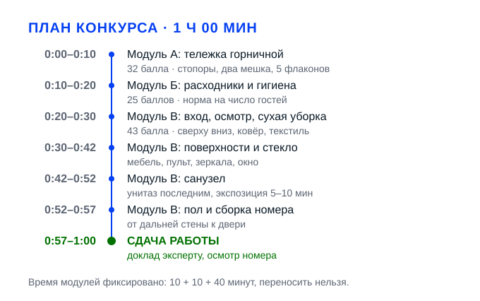
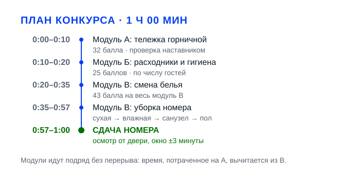
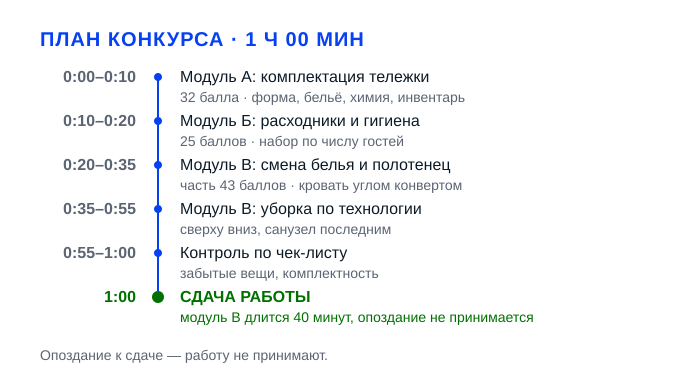

Горничная (Р,О)
Задания ниже — официальные файлы «Абилимпикс» (источник: abilympics-russia.ru), разложенные по категориям. Решения написаны по тексту задания, регламенту и критериям оценки; в них указано, что именно проверяет эксперт.
Школьник
14–16 лет, базовый уровень заданияВыдержка из официального конкурсного задания: страницы, относящиеся к категории «Школьник» (стр. 5–7 источника).
Пошаговое решение
Один час, три модуля и 100 баллов: комплектация тележки (10 минут, 32 балла), подбор возобновляемых материалов и средств гигиены (10 минут, 25 баллов) и уборка номера после выезда гостя (40 минут, 43 балла). Задание бытовое только на вид: баллы теряются не на сложном, а на последовательности — пыль, снятая после мытья пола, тряпка из санузла, попавшая на стол, полотенце с затяжкой в стопке и рулон бумаги, заправленный «от стены». Оценивают двумя способами: измеримыми критериями по одному-два балла (комплектность, количество по числу гостей, чистота верхних поверхностей, порядок зон) и оценочными — внешний вид, этика входа в номер, безопасность при работе с химией и оборудованием. Ниже — полный разбор: от подошвы обуви и цветовой кодировки микрофибры до контрольного обхода номера по чек-листу.

Задача 1. Войти в смену: форма, СИЗ, рабочее местоМодуль А · 32 балла · старт 10 минут
До первого движения с тряпкой вы должны выглядеть и работать как сотрудник службы хаускипинга, а не как гость, которому дали тележку. КЗ отдельным разделом описывает форму горничной вплоть до высоты подошвы, а знание СИЗ и умение организовать рабочее место стоят в перечне требований к квалификации. Десять минут модуля А начинаются не с белья, а с внешнего вида, проверки оборудования и разметки зоны: эти баллы набираются в первые две минуты и теряются в последние, если форма не в порядке.
Действие 1.1. Надеть форму и СИЗ
Шаг 1.1.1
Форму надеваем до входа на площадку: тёмно-синее или чёрное платье (допускается костюм для горничных) с белым фартуком, рукав заканчивается не ниже локтя, колготки телесного цвета, чёрная закрытая обувь на плоской подошве, без шнуровки, высота подошвы не более 3 см. Фартук завязываем так, чтобы бант был сзади по центру на линии талии, а не под грудью, подол — до середины колена. Волосы убираем в пучок и закрываем сеточкой, чёлку фиксируем, чтобы не падала на лицо при наклоне.
КЗ в разделе 3.1 перечисляет спецодежду с техническими характеристиками: чёрное или тёмно-синее платье, белый фартук, рукав не ниже локтя, колготки телесного цвета, обувь без шнуровки с подошвой до 3 см. Это не рекомендация, а обязательный комплект, и эксперт сверяет его до старта. Высота подошвы и отсутствие шнуровки — вопрос безопасности: пол в номере после влажной уборки скользкий, а развязанный шнурок — падение с полным ведром в руках.
Проверяем три вещи по порядку: подошва не выше трёх сантиметров и без шнуровки, рукав заканчивается выше локтя, колготки телесного цвета. Затем поворачиваемся к зеркалу спиной: бант по центру, фартук не перекошен, завязки не торчат. Наклоняемся и трясём головой — сеточка должна держать волосы без поправлений.
Самая частая ошибка — прийти в удобных кроссовках или балетках «их же не видно под платьем»: подошва видна, и балл за соблюдение требований к спецодежде снимается сразу. Вторая — длинный рукав или спущенная на глаза чёлка: при заправке кровати и мытье ванны это мешает, а эксперт фиксирует нарушение, когда вы наклоняетесь.
Эксперт осматривает участника до старта модуля А и потом ещё раз в номере, в момент наклона над кроватью или ванной: именно тогда видно, держится ли сеточка и не сполз ли фартук.
Шаг 1.1.2
Надеваем нитриловые перчатки по размеру — на сухие руки, иначе они скользят и рвутся у пальцев. Пары две: одна уходит на санузел, вторая на поверхности и мебель, менять их обязательно на границе зон. Поверх формы — защитный фартук, если работаем с концентратом; маска нужна при работе с хлорсодержащими средствами и при пылесосе, очки — при разбрызгивании. Руки моем до запястий с мылом не меньше двадцати секунд и сушим одноразовым полотенцем.
СИЗ и их применение вынесены в КЗ отдельным пунктом знаний наравне с технологией уборки: значит, оценивают не наличие перчаток в кармане, а то, надеты ли они в нужный момент. Кислота для сантехники на мокрой коже даёт дерматит за одну смену, а хлор в плохо проветренном санузле — головную боль и кашель. Есть и вторая сторона: руки горничной касаются стаканов, полотенец и полки с гигиеной, поэтому перчатки — это ещё и защита гостя.
Перчатки облегают пальцы, не свисают с кончиков и не имеют прокола — растяните манжету и посмотрите на свет. Маска закрывает нос и рот, а не подбородок. После снятия перчаток руки вымыты: снимаем от манжеты, выворачивая наизнанку, не касаясь внешней поверхности.
Одна пара на весь номер — классика: после унитаза той же рукой берут стаканы, и бактерии переезжают на посуду. Внешне всё блестит, а по критерию санитарной обработки баллы сняты. Вторая ошибка — работать без перчаток «так быстрее»: экономия двух минут стоит баллов за технику безопасности и здоровья кожи.
Эксперт смотрит на момент смены перчаток: снял после унитаза, надел новые перед полкой с полотенцами — это самый наглядный признак, что технология понята, а не заучена.
Действие 1.2. Организовать рабочее место
Шаг 1.2.1
Тележку ставим у стены, слева от входа в номер, в 30–40 сантиметрах от стены, чтобы подойти к ней с двух сторон. Колёса фиксируем стопорами — оба передних, иначе тележка катится в момент, когда вы тянетесь за стопкой белья. Вокруг обозначаем рабочую зону: тележка, мешок для мусора, ведро и пылесос стоят в пределах полутора метров, а проход между рабочими местами по КЗ остаётся не уже 1,5 метра.
Организация рабочего места — это заявленный результат модуля А, то есть оценивается отдельно от содержимого тележки. Незафиксированная тележка уезжает именно в тот момент, когда вес перенесён на одну ногу, а рука в лотке с химией: флакон падает, колпачок трескается, средство разливается по полу. Плюс ко всему тележка посреди прохода мешает экспертам и другим участникам, а КЗ прямо требует не создавать помех.
Нажимаем на тележку ладонью — она не двигается. Обходим её кругом: ничего не задеваем, ничего не торчит за габарит. Смотрим на пол: шнур пылесоса не лежит в проходе, мешок не перекрывает дверь. Если хотя бы один пункт не выполнен, переставляем до старта, а не в процессе.
Поставить тележку прямо напротив двери номера — удобно на две минуты, а потом весь модуль вы обходите её по дуге. Вторая ошибка — забыть стопоры: тележка с полным ведром на борту уезжает от лёгкого толчка, и вода оказывается на полу.
Эксперт смотрит на площадку в первую минуту модуля А: организовано ли место до того, как начали раскладывать предметы, и есть ли свободный проход. Проход он проверяет тоже: по нему с тележкой ходит каждый участник.
Шаг 1.2.2
Оборудование проверяем до старта, а не в номере. Пылесос включаем на три секунды: тяга есть, щётка крутится, мешок не переполнен, шнур без заломов. Швабру проверяем на зажим — насадка не должна болтаться и «клевать» при нажиме. У каждого распылителя делаем пробный «пшик» в сторону: факел ровный, средство не течёт по горлышку. Ведро с отжимом проверяем педалью: она должна отжимать насадку до полусухого состояния, а не до мокрого.
КЗ в разделе 6.2 прямо предписывает проверить работу оборудования до начала работы и действовать по инструкции по безопасности на рабочем месте. Практический смысл проще: неисправность, найденная на пятнадцатой минуте сорокаминутного модуля В, стоит пяти-семи минут и части баллов, а найденная сейчас — тридцати секунд. О неисправности по разделу 6.5 нужно сразу сообщить экспертам, и это тоже оценивается как владение ситуацией.
Пылесос тянет лист бумаги с пола и держит его. Швабра не клюёт насадкой и не проворачивается вокруг черенка. Распылитель даёт ровный факел и не подтекает, если положить его на бок. Ведро отжимает так, что с насадки не капает.
Обнаружить, что пылесос не тянет, уже в номере: ковёр остаётся с песком, а вы тратите время на поиск причины. Вторая ошибка — молча работать неисправным инвентарём, хотя по КЗ о неисправности сообщают сразу.
Эксперт отмечает сам факт проверки: включил пылесос, прокачал распылитель, проверил зажим швабры — это видно и занимает полминуты. Неисправность, о которой промолчали до старта, потом считается виной участника.
Шаг 1.2.3
Десять минут модуля А делим заранее: две минуты на каркас и мешки, три на бельевые полки, три на инвентарь и химию, две на расходники и контрольный обход. Порядок именно такой — снизу вверх, от грязного к чистому, потому что тяжёлое и объёмное ставится на нижний ярус, а расходники, которые берут чаще всего, оказываются под рукой наверху. План держим в голове: взгляд на часы занимает секунду, а поиск «где я остановился» — минуту.
Время модуля фиксировано КЗ — 10 минут, и оно не переносится на соседние модули: недособранная тележка останется недособранной, а модуль Б начнётся по свистку. Порядок снизу вверх ещё и физически удобнее: наполняя верхний лоток, вы не перекладываете нижние полки заново.
К восьмой минуте всё на местах, остаётся контрольный обход: пройти вокруг, проверить, что ничего не капает, не свисает и не звенит. Если вы всё ещё раскладываете химию, а обход не начат, план не выполнен — ускоряйтесь на расходниках и не перекладывайте нижние полки заново.
Начать с мелочей — саше, шапочек, ватных палочек — и не успеть выложить бельё: самые весомые критерии модуля остаются пустыми. Вторая ошибка — собирать тележку в обратном порядке, сверху вниз: приходится переставлять стопки.
Эксперт фиксирует, уложился ли участник в десять минут и в каком состоянии оставил тележку к моменту перехода к модулю Б. Отдельно он отмечает, сколько прошло от старта до первой вещи, положенной в лоток.
Задача 2. Скомплектовать тележку горничнойМодуль А · 32 балла · 0:00–0:10
Тележка — это рабочий инструмент, а не склад: на ней должно быть ровно то, что нужно для уборки одного номера, разложенное так, чтобы брать одной рукой не глядя. Критерии модуля А разбиты на три блока: организация потоков (чистое и грязное не встречаются), инвентарь и химия по назначению и цветовой кодировке, расходники и безопасность хранения. Ошибка здесь не остаётся в модуле А — она тянется через модуль В, где каждой вещи придётся искать место в спешке.
Действие 2.1. Собрать каркас и бельевые полки
Шаг 2.1.1
На нижнем ярусе закрепляем два мешка на кольцах-держателях: левый — для грязного белья, плотный светлый на 120 литров, правый — для мусора, чёрный на 60–80 литров. Мешок расправляем по стенке и загибаем край на кольцо на пять сантиметров, иначе бельё проваливается за подкладку и застревает между мешком и стенкой. Третий, небольшой мешок — для забытых вещей: он идёт отдельно и никогда не смешивается с мусором.
Разделение потоков — первое правило хаускипинга: грязное не касается чистого. Если бельевой и мусорный мешок один, чистые простыни, лежащие выше, всё равно наберут запах, и это заметит не только эксперт, но и гость. Забытые вещи по инструкции сдаются старшему смены: вещь гостя, уехавшая в мусорном мешке, — это жалоба, разбор и, на чемпионате, потеря баллов за технологию.
Мешки держатся на кольцах и не провисают между ними. Потяните за край — мешок остаётся на месте, подкладка не отходит. Под мешками сухо, нет капель и крошек: если что-то просыпалось, вытираем сразу, а не в конце.
Один мешок «на всё»: грязное бельё, остатки еды и бумага вместе — потом двадцать минут разбирать, а чистые полотенца уже пахнут. Вторая ошибка — не загнуть край: мешок сползает на первом же номере, и бельё оказывается на полке.
Эксперт смотрит на нижний ярус первым: два мешка разных цветов и отдельный пакет для забытого — признак того, что участник понимает технологию, а не просто переложил предметы.
Шаг 2.1.2
Средний ярус — чистое бельё, стопками по типам: простыни, пододеяльники, наволочки, полотенца банные, полотенца для лица, коврики для ног. В стопке четыре-шесть единиц, уложенных торцом к борту, чтобы читался размер и стопка не рассыпалась на повороте. Ничего не свисает за борт: колесом его срывает на первом же повороте коридора. Каждую единицу просматриваем на просвет — пятно от косметики на белом видно только так.
Бельё — самая весомая часть комплектации: без него модуль В просто нечем закончить, а в модуле А за него дают баллы по критерию комплектности. Стопка торцом удобна тем, что комплект берётся одной рукой, не перебирая: в номере на это уходят секунды, а на разбор рассыпавшейся стопки — минута.
Стопки ровные, не выше шести единиц, торцы совпадают по линии. На белье нет заломов, катышков и пятен. Потяните верхнюю единицу — стопка не едет. Проверьте руками: бельё сухое, не отсыревшее от хранения.
Навалить бельё одной кучей: тянете простыню — на пол летит вся стопка, и её приходится складывать заново. Вторая ошибка — не просмотреть полотенца: одно с пятном уезжает в номер, и балл за качество комплектации уже не вернуть.
Эксперт считает комплектность по типам и смотрит, разделено ли бельё: шесть разных стопок читаются как работа, одна куча — как перенос вещей. Если стопки разные по высоте, значит, бельё брали не по типам, а как попало.
Шаг 2.1.3
Инвентарь крепим снаружи и в отдельных пакетах, а не внутри, где лежит бельё. Швабру ставим в боковой держатель, насадку — в отдельный пакет, чтобы мокрая микрофибра не касалась белья. Пылесос — на нижнюю платформу, шнур сматываем «восьмёркой» и вешаем на крюк, а не наматываем на корпус. Веник и совок — в узкий лоток, ерш для унитаза — в закрытом футляре, отдельно от всего остального.
Мокрая насадка на белье — это сырое пятно и запах сырости, который потом не выветривается из номера. Шнур, смотанный «восьмёркой», разматывается одним движением и не перекручивается; намотанный на корпус — узлами, и вы тратите минуту на его распутывание посреди модуля. Ерш без футляра рядом с полотенцами — прямое нарушение санитарии, которое эксперт видит без приборов.
Швабра не выпадает, если покачать тележку. Шнур не волочится по полу и не свисает ниже платформы. Насадка в пакете закрыта. Ерш в футляре и не касается ничего, кроме своего держателя. Черенок не выходит за габарит тележки.
Положить швабру поперёк тележки — при движении она падает и бьёт по ногам, а черенок цепляет дверные ручки. Вторая ошибка — поставить ерш открытым рядом с чистыми полотенцами: внешне аккуратно, по стандарту — грубо.
Эксперт оценивает безопасность: ничего не торчит за габарит тележки, тяжёлое внизу, острое и грязное — изолировано. Его особенно интересует перевес верха: тележка с полным ведром на борту падает именно на повороте.
Действие 2.2. Разложить химию и микрофибру по кодировке
Шаг 2.2.1
В верхнем лотке — пять средств, каждое со своей этикеткой и своим колпачком: универсальное для поверхностей, для сантехники и налёта, для стекла и зеркал, для пола, дезинфицирующее. Концентрат разводим мерной крышкой: для рабочих поверхностей обычно один колпачок на 500 миллилитров, для санузла — по инструкции на флаконе, чаще два колпачка на литр. Если этикетка стёрлась, распылитель подписываем маркером, а не «узнаём по запаху».
КЗ требует знать виды, назначение и правила пользования химикатами — это отдельный пункт знаний. Разница не косметическая: универсальным средством известковый налёт не снимается, сколько ни три, а кислотой для сантехники нельзя работать по лакированному дереву и по зеркалу в раме — останется матовое пятно, которое не убрать. Передозировка даёт разводы и липкую плёнку, которая собирает пыль быстрее, чем вы успеваете закрыть номер.
Все флаконы подписаны и закрыты, распылители дают ровный факел. Проверьте концентрацию по мерной крышке, а не «на глаз»: цвет раствора в бутылке должен быть одинаковым от замеса к замесу. Ни один флакон не подтекает при наклоне на 45 градусов.
Перепутать флаконы, когда все «синие»: протереть кислотой зеркало в раме — рама теряет покрытие, и это уже порча имущества отеля. Вторая ошибка — развести «покрепче, чтобы наверняка»: разводы по всей поверхности и липкий слой на мебели.
Эксперт спрашивает назначение средства и смотрит, не смешаны ли они: отдельные подписанные флаконы — прямой балл модуля А. Колпачки разных цветов он тоже сверяет: по ним средство узнают быстрее, чем по этикетке.
Шаг 2.2.2
Микрофибру раскладываем по цветам, каждому — своя ячейка лотка: красная — унитаз и сантехника, жёлтая — остальной санузел (ванна, раковина, кафель), синяя — мебель и общие поверхности, зелёная — кухонная зона и стол, отдельная белая или голубая без ворса — стекло и зеркала. На каждую зону минимум две салфетки: одна рабочая, вторая на сухое протирание, чтобы не возвращаться к мокрой.
Цветовая кодировка стоит в перечне знаний КЗ рядом с технологией уборки, и это самый практичный пункт: тряпка из санузла переносит бактерии на письменный стол, а глазом это не видно вообще. Именно поэтому эксперт смотрит не только на результат, но и на то, какой салфеткой вы работали в какой зоне. Логика простая: один цвет — одна зона, на всю смену, без исключений «только разок».
На лотке пять групп, цвета не перемешаны, каждая стопка сложена вчетверо. Салфетка для стекла без ворса и лежит отдельно. Проверьте на ощупь: рабочая салфетка влажная, но не мокрая — с мокрой остаются разводы.
Вытереть унитаз красной, а потом «начисто» той же — внешне блестит, по стандарту грубое нарушение. Вторая ошибка — взять для стекла обычную микрофибру: ворсинки остаются на зеркале и видны на свету. Третья — держать салфетки мокрыми в одном пакете: к середине модуля они пахнут сыростью.
Эксперт смотрит, берёт ли участник салфетку нужного цвета в нужной зоне: это единственный критерий, который виден постоянно, а не в конце. Он может попросить показать салфетку для унитаза и ждёт красную, а не любую.
Шаг 2.2.3
Отдельно от химии, в закрытых контейнерах верхнего яруса — расходники: мыло, шампунь, гель, шапочки, тапочки, чай и кофе, сахар, сливки, вода, стаканы, ложечки, салфетки, пакеты для мусора. Считаем по норме на двух гостей и добавляем примерно десять процентов запаса на бой стакана и порванный пакет. Химия никогда не стоит над продуктами и над стаканами — только в отдельном лотке сбоку.
В модуле Б расходники нужны сразу, и сбегать за ними на склад нельзя: десять минут на всю комплектацию. Запас в десять процентов — это не жадность, а расчёт: один разбитый стакан или лопнувший пакет не должен останавливать работу. Требование «химия не над продуктами» взято из практики: капля средства, попавшая в стакан, ощущается гостем как химический привкус.
Контейнеры закрыты, стекло не звенит при движении тележки, лоток с химией стоит ниже или сбоку от продуктов. Пересчитайте стаканы и пакеты вслух — так быстрее заметить недобор. Проверьте сроки на чае и воде: просроченное не ставим.
Поставить флакон с хлором над стаканами — одна капля внутрь, и номер придётся перекомплектовывать. Вторая ошибка — не досчитать стаканы и «добрать» уже в номере, оставив тележку в коридоре. Третья — поставить чай рядом с чистящим средством: запах впитывается в упаковку.
Эксперт проверяет верхний ярус именно на безопасность хранения и на наличие расходников: это два разных критерия в одном блоке. Ещё он проверяет, закрыты ли контейнеры: открытая упаковка чая на тележке — нарушение.
Действие 2.3. Обкатать тележку с полной загрузкой
Шаг 2.3.1
Провозим тележку по коридору на 15–20 метров с полной загрузкой: берёмся обеими руками за ручку, толкаем перед собой, а не тянем за собой, на повороте сбрасываем скорость и наклоняем корпус в сторону поворота. На площадке делаем полный круг и слушаем: ничего не звенит, не бьётся о борта, ничего не падает. Тяжёлое — внизу, лёгкое — наверху, и именно на ходу видно, правильно ли собрана загрузка.
Тележка с полным ведром и стопкой белья весит под тридцать килограммов, и на повороте её ведёт в сторону: если тянуть за собой, она догоняет и бьёт по ногам. Проверка занимает минуту и показывает то, чего не видно на стоянке — перевес верха, приоткрытый лоток, плохо закреплённую швабру. Эксперт оценивает готовность тележки к работе, а не только её содержимое.
Тележка идёт ровно, не виляет, колёса не скрипят и не заедают. На повороте ничего не съезжает и не звенит. Ручка не шатается, лотки закрыты, швабра сидит в держателе. Мешки не зажаты колёсами и не волочатся по полу.
Собрать тележку и не проверить её на ходу: в номере выясняется, что колесо заедает, и тридцать килограммов приходится тащить волоком по ковру. Вторая ошибка — тянуть тележку за собой: на повороте она бьёт по ногам и опрокидывает ведро.
Эксперт смотрит, как участник везёт тележку: перед собой, обеими руками, с контролем поворота. Это видно за пять секунд и говорит о навыке больше, чем содержимое лотков.
Шаг 2.3.2
Проверяем устойчивость: ставим тележку на ровный пол и надавливаем на верхний ярус с одной стороны — противоположные колёса не должны отрываться. Если верх перевешивает, перекладываем часть расходников на нижнюю полку. Все четыре колеса должны касаться пола: тележка на трёх колёсах виляет и уводит в сторону на прямой. Проверяем это до выезда из зоны, а не в коридоре: на площадке пол ровный и видно сразу.
Перевес верха — самая частая причина опрокидывания тележки в коридоре, а вместе с ней на пол летят флаконы с химией и стаканы. Четыре колеса на полу — условие ровного хода, иначе её приходится подправлять каждые несколько метров. Это часть требований безопасности при работе с оборудованием, которые в КЗ вынесены отдельным блоком.
Нажатие на верхний ярус не поднимает противоположные колёса. Все четыре колеса касаются пола, тележка не качается. Лотки не перекошены, мешки не зажаты колёсами. Проверьте нажатием с двух сторон, с фронта и с торца: тележка неподвижна.
Оставить перевес: тележка опрокидывается на повороте, химия разливается, и работа останавливается на уборку вместо номера. Вторая ошибка — не заметить «хромающее» колесо и весь модуль подправлять тележку.
Он проверяет тележку так же: нажимает на верх и смотрит на колёса, а потом спрашивает, что участник сделал с перевесом. Отдельно он смотрит, не стоит ли на верхнем ярусе что-то тяжёлое из химии.
Задача 3. Подобрать возобновляемые материалы и средства гигиеныМодуль Б · 25 баллов · 0:10–0:20
Модуль Б проверяет арифметику и глазомер: в задании сказано, сколько гостей в номере, и дальше всё считается от этой цифры — полотенца, стаканы, шампуни, чай, вода. Считать нужно не «примерно на двоих», а по норме отеля, потому что недокомплект — жалоба гостя, а перекомплект — списание и нарушение нормы расхода, и то и другое видно эксперту за десять минут. Отдельно оценивается выкладка: средства личной гигиены выставляются рядом, этикетками наружу, в одном порядке, а не высыпаются кучей у раковины.
Действие 3.1. Сосчитать норму и отобрать бельё
Шаг 3.1.1
Первым делом читаем задание и фиксируем цифру: один гость или два, какая категория номера. Дальше считаем по норме: банное полотенце 70×140 — по одному на гостя, полотенце для лица 50×90 — столько же, полотенце для рук — одно на санузел, коврик для ног 50×70 — один на номер. Стаканы — два на гостя: один в ванной, один в номере. Чайная станция: два пакетика чая и один кофе на гостя, по два стика сахара, сливки, бутылка воды 0,5 литра на гостя.
КЗ прямо требует умения подбирать материалы и средства гигиены по количеству проживающих — это ядро модуля Б, 25 баллов. Норматив нужен, чтобы решение было проверяемым: эксперт открывает свой лист с цифрами и сравнивает с тем, что лежит в номере. «Положил побольше, чтобы наверняка» тоже минус: перекомплект — это списание, а списание в гостинице считается так же строго, как недостача.
Пересчитайте по строке на каждого гостя и сложите вслух: два гостя — четыре полотенца плюс коврик, четыре стакана, две воды. Если цифры не сходятся с тем, что вы отложили, — пересчитывайте заново, а не «доберите потом».
Положить всё «на двоих» в одноместный номер: гость видит лишнюю зубную щётку и делает вывод о качестве уборки. Обратная ошибка — по одному комплекту в двухместный: второй гость идёт на ресепшен, и это уже жалоба.
Эксперт сверяет количество с заданной ситуацией, а не «на глаз»: в его листе стоят целые цифры по каждому типу белья, и ошибка в один комплект видна сразу.
Шаг 3.1.2
Полотенца отбираем по размеру и состоянию: без катышков, затяжек, пятен и запаха сырости. Разворачиваем каждое и смотрим на просвет — на белом видно всё, включая след от косметики и ржавчину от сушилки. Оттенок должен быть одинаковым во всей стопке: разница в тоне на белом читается как «собрали с разных этажей». Кромку коврика проверяем отдельно — она распускается первой.
Махровое бельё — то, что гость трогает первым, и то, что нельзя «замаскировать»: затяжка на полотенце видна сразу, а запах сырости остаётся в ванной до конца проживания. В критериях модуля Б есть отдельный пункт за качество и внешний вид белья, поэтому отбраковка на тележке экономит баллы в номере.
Разверните одно полотенце и посмотрите на шов и кромку: шов ровный, кромка не распущена, ворс не сыпется. Сожмите в руке — должно быть сухо и мягко. Проверьте все единицы, а не верхнюю в стопке. На ощупь бельё сухое.
Взять полотенце с затяжкой «снизу, никто не увидит»: гость разворачивает именно нижнее. Вторая ошибка — перемешать оттенки: стопка выглядит пёстрой, и балл за внешний вид снят при полностью правильном количестве.
Эксперт разворачивает одно полотенце из стопки — не верхнее, а среднее: это стандартный приём проверки. Если из стопки вытягивают верхнее, он просит взять среднее и смотрит на реакцию.
Шаг 3.1.3
Складываем полотенца одинаково: втрое по длине, кромкой внутрь, лицевой стороной наружу; банные — в стопку по два, ручные — рядом с ними, коврик — отдельно, свернуть в рулон. Стопки ставим на тележку так, чтобы при переносе в номер брать комплект одной рукой. Комплект на номер собираем сразу вместе, а не по одному предмету. Рулон коврика фиксируем резинкой, если она есть в комплекте.
Одинаковое складывание — не педантизм: в номере полотенца выкладываются на держатели, и сложенное втрое полотенце висит ровно с первого раза, а сложенное как попало — перекашивается и сползает. Комплект, собранный заранее, экономит в модуле В те самые минуты, которых всегда не хватает на финальный обход.
Все полотенца сложены одинаково, кромки совпадают, стопка не разъезжается. Комплект на одного гостя собирается за одно движение: банное, лицевое, коврик. Проверьте, что рулон коврика не разворачивается.
Сложить по-разному и «расправить в номере»: на держателе полотенце висит перекошенным, и это видно с порога. Вторая ошибка — нести по одному предмету: три ходки вместо одной. Третья — нести полотенца, прижав к фартуку: они пачкаются о форму.
Эксперт смотрит на стопку и на то, как участник несёт комплект: одной рукой или по одному предмету. Он смотрит и на руки: комплект несут перед собой, а не под мышкой.
Действие 3.2. Выложить гигиену в санузле
Шаг 3.2.1
В ванной всё выставляем на полку-амбразуру или подставку этикетками наружу и в одном порядке: шампунь, гель для душа, мыло, шапочка для душа, ватные диски и палочки, гигиенический пакет. Флаконы выравниваем по переднему краю, зазор между ними 1–2 сантиметра, этикетка читается, когда гость стоит у раковины. Зубные наборы, если они в стандарте отеля, — рядом, щётка головкой вверх.
КЗ называет соблюдение стандартов выкладки средств индивидуального пользования отдельным умением, и это правильно: ровный ряд — первое, что видит гость, заходя в ванную, и первое, что проверяет эксперт. Куча на полке при полном наборе предметов читается как «не успели», а зазор в пару сантиметров даёт ощущение порядка, хотя предметы те же самые.
Посмотрите на полку с высоты глаз — примерно 1,6 метра: этикетки читаются, ряд ровный, ничего не лежит и не висит за край. Проверьте, что флаконы не перевёрнуты и колпачки закрыты. Полка сухая. Подставка не шатается.
Высыпать всё в кучу у раковины: предметов достаточно, а стандарт не выполнен, и это минус баллы именно за выкладку. Вторая ошибка — поставить флаконы этикетками к стене: гость не понимает, что берёт. Третья — поставить флаконы без подставки: они падают при первом же движении.
Эксперт фиксирует выкладку до того, как вы выйдете из ванной, — поправить потом будет уже нечего. Порядок флаконов он сравнивает с образцом на своём столе.
Шаг 3.2.2
Диспенсер с жидким мылом заполняем примерно на две трети, чтобы при нажатии не переливалось через край. Туалетную бумагу заправляем уголком наружу, запасной рулон кладём на держатель или на полку. В мусорное ведро ставим новый пакет и заводим его под бортик так, чтобы плёнка не была видна снаружи. Гигиенические пакеты — в держатель, крышкой вверх. Крышку ведра проверяем на месте — без неё пакет не держится.
Уголок бумаги наружу — универсальный знак «номер готов к заселению»: по нему проверяющий сразу понимает, что санузел собран, а не просто вымыт. Эксперт смотрит именно направление рулона, потому что это признак отработанной технологии, а не случайной аккуратности. Пакет, заведённый под бортик, — требование санитарии: висящая снаружи плёнка собирает брызги.
Бумага разматывается от стены, уголок ровный и заметный. Пакет в ведре не виден снаружи и не сползает. Мыло не течёт по корпусу диспенсера, кнопка нажимается легко. Пакеты для гигиены не рассыпаны. Крышка ведра не болтается.
Заправить рулон «от стены»: гость тянет и рвёт бумагу поперёк. Вторая ошибка — переполненный диспенсер течёт на полку, и вы получаете лужу мыла на только что протёртой поверхности. Третья — оставить пустой рулон на держателе: гость ищет бумагу в шкафу.
Эксперт смотрит мелочи — уголок, пакет, кнопку диспенсера: они складываются в общий балл за стандарт комплектации. Рулон, заправленный «от стены», он отмечает сразу и без обсуждения.
Шаг 3.2.3
Проверяем санузел как гость: полотенца на держателях ровно, коврик на полу перед ванной кромкой к стене, полка с гигиеной собрана, ведро с пакетом, бумага с уголком. Отдельно — вентиляция и свет: решётка без пыли, лампы горят, зеркало без отпечатков. Если чего-то не хватает по норме, добираем сразу, а не возвращаемся из коридора. Дверь в санузел оставляем приоткрытой — так номер выглядит больше.
Санузел проверяется целиком, потому что именно там гость проводит первые десять минут после заселения и именно там замечает любую мелочь. Возврат из коридора за забытым полотенцем — это две-три минуты из десяти, а в модуле Б время фиксированное. Кроме того, санузел — единственная зона, где недокомплект скрыть невозможно.
Пройдите санузел по часовой стрелке от двери и назовите про себя каждый предмет: полотенца — есть, коврик — есть, полка — есть, бумага — есть, ведро — есть, свет — работает, вентиляция — чистая. Ведро стоит на месте, а не уезжает под ногу.
Оставить санузел «на потом» и уйти в комнату: возвращаться придётся бегом, а часть предметов так и останется на тележке. Вторая ошибка — уйти, не проверив полотенца: недокомплект виден на держателе сразу. Третья — оставить открытой дверцу шкафа с бельём: гость видит склад вместо номера.
Эксперт проходит санузел по своему списку после участника — и первым делом смотрит полотенца и полку. Он открывает и закрывает дверь санузла: скрип и заедание — тоже неисправность.
Действие 3.3. Собрать чайную станцию и папку гостя
Шаг 3.3.1
На столе или на полке мини-бара собираем чайную станцию: чай, кофе, сахар и сливки — в подставке или коробке, чашки на блюдцах ручкой вправо, ложечки на блюдце, бутылка воды рядом с коробкой, этикеткой к гостю. Чашки ставим на расстоянии ладони друг от друга, одинаковые, без скола. Салфетки — под подставку или рядом, но не под чашками. Подставку с чаем ставим на салфетку, а не прямо на лак.
КЗ относит комплектацию номера расходными материалами к отдельным знаниям, а чайная станция — самая заметная их часть: её видно с порога, и по ней гость судит о внимании к деталям. Ручка вправо — стандарт сервировки: гость берёт чашку правой рукой, не разворачивая её на блюдце. Разные чашки или скол на кромке читаются как небрежность, даже если всё остальное идеально.
Чашки одинаковые, без скола и разводов, ручки на одном направлении. Ложечки начищены и лежат поперёк блюдца. Пакетики не надорваны, сроки в порядке. Бутылка воды закрыта и не подтекает. Под бутылкой нет мокрого кольца.
Поставить чашки ручкой вразнобой: стол выглядит несервированным, и эксперт это отмечает. Вторая ошибка — положить ложечки в чашки: они пачкают внутреннюю поверхность. Третья — поставить чашки вверх дном: на кромке остаются следы от полки.
Эксперт смотрит на стол с порога: симметрия и направление ручек видны без близкого осмотра. Он отодвигает чашку и смотрит, нет ли под ней мокрого следа.
Шаг 3.3.2
Информационную папку ставим на стол слева от телефона, обложкой к гостю, примерно в 20 сантиметрах от края. Внутри проверяем набор: правила проживания, данные Wi-Fi, время завтрака, телефоны служб, схема эвакуации, меню услуг. Страницы не должны выпадать, уголки не замяты, папка не перекошена. Если папки в номере нет, это фиксируется как недокомплект, а не как мелочь.
Информационная папка гостя прямо названа в КЗ в перечне знаний о комплектации номера, и это не формальность: схема эвакуации — требование безопасности, а без данных Wi-Fi гость идёт на ресепшен. Отсутствие схемы эвакуации фиксируется отдельно и стоит баллов сразу в двух блоках — комплектации и безопасности.
Откройте папку и пролистайте все страницы: схема эвакуации на месте, страницы держатся, текст читается, нет посторонних записей. Папка стоит устойчиво и не падает при открывании. Папка не скользит по лаку.
Поставить папку без схемы эвакуации — нарушение требований безопасности, которое видно при первом открытии. Вторая ошибка — положить папку плашмя: её не видно с порога. Третья — положить в папку рекламные листовки вместо правил проживания.
Эксперт открывает папку и проверяет наличие схемы — это один из самых быстрых способов снять баллы. Он листает папку до конца: порванная страница — тоже минус.
Шаг 3.3.3
Финальная проверка модуля Б — сверка с нормой по всей комнате: полотенца и гигиена в ванной, стаканы и чай на столе, папка, вода, тапочки у кровати. Считаем ещё раз по чек-листу и только потом докладываем о готовности. Тележку при этом оставляем в коридоре, а не в номере: в номере не должно остаться ничего рабочего. Только после этого поворачиваемся к двери и идём к эксперту.
Модуль Б заканчивается тогда, когда номер укомплектован, а не когда разложен последний предмет: пересчёт по чек-листу ловит забытые позиции, которые не видны «в общем». Эксперт оценивает именно итоговое состояние номера, поэтому лучше найти недокомплект самому за тридцать секунд до сдачи.
Все позиции нормы отмечены, в номере нет ни одного предмета с тележки — ни флакона, ни салфетки, ни пакета. Дверь в санузел открыта так, как её увидит гость. Свет включён во всех зонах. Дверца шкафа закрыта.
Оставить на подоконнике салфетку или флакон: это минус за организацию, и заметно сразу. Вторая ошибка — не пересчитать и сдать номер с недокомплектом по одному пункту. Третья — не закрыть дверцу шкафа: она видна с порога и читается как незаконченная работа.
Эксперт входит в номер после сдачи и идёт по списку нормы — сверху вниз, от стола к ванной. Он называет позиции вслух, и участник слышит, чего не хватает.
Задача 4. Убрать номер после выезда гостяМодуль В · 43 балла · 0:20–1:00
Сорок минут и 43 балла — самая дорогая часть задания. Уборка после выезда идёт по жёсткой технологии: сверху вниз, от чистого к грязному, от дальнего угла к двери, санузел отдельным циклом с унитазом в конце. Нарушение последовательности не всегда видно сразу, но оно всегда стоит времени: пыль, снятая после пола, ложится на вымытый пол, а тряпка из санузла, попавшая на стол, обнуляет санитарный блок. Здесь же оценивают безопасность при работе с оборудованием и химией.
Действие 4.1. Войти в номер по правилам и осмотреть его
Шаг 4.1.1
Стучим в дверь три раза с интервалом в секунду, называем себя: «Горничная, уборка номера». Пауза пять секунд, второй стук — и только потом открываем ключом. Дверь открываем на себя, входим, свет включаем сразу, а дверь оставляем приоткрытой; тележку ставим так, чтобы она перекрывала вход. В номере сначала стоим секунду и слушаем: работающий телевизор, вода в ванной, голоса.
Правило входа — это этика и безопасность одновременно: гость может вернуться за забытым телефоном, и войти молча значит получить конфликт на ровном месте. КЗ требует от участника следования правилам поведения персонала гостиницы, и эксперты слушают вход отдельно. Приоткрытая дверь и тележка у входа — это ещё и защита: в номере вы одна, и никто не должен войти незамеченным.
Три стука, фраза, пауза, второй стук — все четыре элемента выполнены. Дверь не заперта изнутри, свет горит, тележка стоит у входа и не блокирует проход в коридоре. Вы слышали номер до того, как начали двигать мебель.
Войти молча и сразу включить пылесос — если в номере гость, это уже конфликт, а по критерию этики минус баллы. Вторая ошибка — закрыть за собой дверь на замок: в реальной работе это нарушение инструкции, на конкурсе — тоже.
Эксперт слушает вход: стук, фразу, паузу. Это один из немногих критериев, который оценивается на слух, а не глазами. Он также отмечает, есть ли пауза после стука: без паузы вход считается формальным.
Шаг 4.1.2
Открываем окно на проветривание: в тёплое время на десять-пятнадцать минут, в холодное — на пять-семь, чтобы не пересушить воздух и не застудить номер. Пока проветривается, обходим номер по часовой стрелке от двери: шкаф и все полки, сейф, тумбы, пространство под кроватью, за шторами, подоконник, ванная. Найденные вещи не выбрасываем и не уносим в карман: складываем в отдельный пакет, записываем, что и где найдено, и сдаём старшему смены или эксперту.
КЗ относит проверку на наличие забытых вещей и неисправностей к умениям горничной, а на конкурсе это ещё и проверяемая ловушка: вещь могут подложить специально. Забытая вещь в мусорном мешке — жалоба гостя и разбор, тогда как сданная вещь — нормальная рабочая ситуация. Неисправность, замеченная сейчас, попадает в заявку на ремонт; замеченная гостем — в отзыв об отеле.
Все зоны обойдены по кругу, пакет с забытым подписан, неисправности названы эксперту вслух: перегоревшая лампа, капающий смеситель, сломанный держатель полотенец. Проверьте шкаф сверху донизу — на верхней полке чаще всего остаются зарядки и документы.
Вытряхнуть содержимое шкафа в мусорный мешок вместе с бумагами гостя — самая дорогая ошибка модуля. Вторая — не проверить под кроватью и за шторами: именно там остаются мелкие вещи, и именно туда смотрит эксперт.
Эксперт может заранее положить в номер «забытую» вещь: смотрит, попала ли она в отдельный пакет, а не в мусор, и названа ли она при докладе. Отдельно он смотрит, описана ли находка: «очки в тумбе» звучит иначе, чем «что-то нашёл».
Шаг 4.1.3
Сначала убираем посуду и мусор: посуду — на поднос, мусор — в мешок, не перетряхивая, чтобы не поднимать пыль. Потом снимаем бельё: пододеяльник выворачиваем наизнанку и складываем внутрь простыню, наволочки снимаем не встряхивая, всё сразу уходит в мешок для грязного белья. Подушки и одеяло кладём на стул или на край кровати, но не на пол. Постельное бельё на пол не опускаем ни на секунду.
Пыль от вытряхнутого белья оседает обратно на мебель и подоконник, то есть вы снимаете то, что только что протёрли, — работа идёт в два раза. На пол бельё не кладут никогда: это нарушение санитарных требований, и эксперт смотрит именно туда, куда уходит грязное. Складывание простыни внутрь пододеяльника экономит место в мешке и не даёт белью разлетаться.
Кровать разобрана, бельё в мешке, на полу ничего не лежит, подушки на стуле. Мешок не переполнен и держится на кольце. На ковре нет ворса и крошек от белья — если есть, пылесосить придётся после. Подушки не касаются пола.
Тряхнуть пододеяльник в комнате: пыль ложится на только что протёртую тумбу, и её видно на тёмном лаке. Вторая ошибка — бросить бельё на пол под кровать «на минуту». Третья — снимать бельё, не сняв часы и кольца: затяжки на простыне остаются навсегда.
Эксперт смотрит, куда уходит грязное бельё: в мешок или на пол. Это видно за две секунды и стоит баллов в блоке технологии. Ему достаточно одного взгляда на пол, чтобы понять, как участник обращается с бельём.
Действие 4.2. Сделать сухую уборку сверху вниз
Шаг 4.2.1
Сухую уборку начинаем с самых верхних точек: верх шкафа, антресоли, карниз, плафоны — сухой салфеткой, не снимая. Дальше верхняя полка, подоконник, рама окна, радиатор между секциями. Паутину снимаем щёткой-сметкой на длинной ручке, а не тряпкой: тряпка размазывает её по стене. Движение — по прямой линии, от дальнего угла к двери, чтобы не проходить дважды по одному месту.
Пыль всегда оседает вниз, поэтому сверху вниз — единственная последовательность, при которой не приходится переделывать. КЗ относит технологию и последовательность уборочных работ к ключевым знаниям, и эксперт проверяет именно порядок зон, а не только результат. Радиатор между секциями — место, которое пропускают чаще всего, и пыль оттуда потом летит по всей комнате.
Проведите белой салфеткой по верху шкафа, по подоконнику и по верхней полке — следов нет. В углах нет паутины, плафоны без серого налёта. Радиатор чистый между секциями. На карнизе нет серой полосы. Верх антресолей тоже чистый.
Начать с пола или с кровати: пыль с полок падает на вымытое, и пол приходится мыть второй раз, а времени на это в сорока минутах нет. Вторая ошибка — протирать паутину мокрой тряпкой: остаются серые полосы на стене.
Эксперт проводит рукой или салфеткой по верхним поверхностям: это самое частое место, где находят пыль, потому что сверху не видно. Если салфетка серая после верха шкафа, дальше он смотрит ещё внимательнее.
Шаг 4.2.2
Пылесосим ковёр полосами с нахлёстом пять сантиметров, по направлению ворса, на сильно загрязнённых участках — два прохода. Под кроватью — плоской насадкой на всю глубину, за батареей — щелевой, по плинтусу — щёткой. Шнур держим за собой и не перекидываем через проход, чтобы не спотыкаться и не дёргать вилку из розетки. Пылесос включаем только после того, как снята пыль с верхних поверхностей: иначе она осядет на ковёр заново.
Нахлёст в пять сантиметров исключает полосы: на ворсе они видны при боковом свете, и эксперт смотрит на ковёр именно под углом. Под кроватью — первое место, куда заглядывают при проверке, потому что оттуда легко достать комок пыли и легко его не заметить. Шнур через проход — нарушение требований охраны труда, названное в КЗ отдельно.
На ковре нет полос и поднятого «ёжиком» ворса. Под кроватью нет комков пыли, за батареей нет серой бахромы. Шнур лежит вдоль стены, вилка не выдёргивается при натяжении. На ковре не осталось крошек от белья.
Провести ковёр один раз «по центру» — по краям остаётся песок, и он вылезает на белые носки гостя. Вторая ошибка — пылесосить после влажной уборки: пыль садится на мокрый пол. Третья — оставить пылесос с намотанным на корпус шнуром.
Эксперт смотрит под кроватью фонариком — стандартная проверка, и её результат виден сразу. Он слушает пылесос: изменившийся звук значит, что мешок полон или щётка забита.
Шаг 4.2.3
Текстиль: покрывало и подушки обрабатываем щёткой для мягкой мебели — короткими движениями по ворсу, отдельно по швам, где скапливается пыль. Пятна на покрывале не трём мокрой тряпкой, а сдаём в стирку и ставим запасное. Шторы снимаем только если они запылены или помяты, в остальном — выбиваем щёткой по складкам и расправляем. Подушки взбиваем и проветриваем вместе с комнатой.
Текстиль собирает пыль больше любой поверхности, но не переносит влажную уборку: мокрое пятно на покрывале оставляет развод, который не убрать без стирки. Подушки, взбитые и проветренные, — часть стандарта «номер как до заселения». Щётка по швам даёт тот самый эффект, который гость не осознаёт, но замечает: покрывало выглядит ровным, а не примятым.
На покрывале нет ворсинок, крошек и заломов, ворс лежит в одном направлении. Подушки упругие, без запаха, швы целые. Шторы висят ровными складками, без серого налёта на сгибах. На подушках нет катышков.
Тереть пятно мокрой тряпкой: развод остаётся навсегда, покрывало приходится менять. Вторая ошибка — не взбить подушки: они лежат плоскими лепёшками, и кровать выглядит несвежей. Третья — снять шторы и не повесить обратно до сдачи: номер выглядит недостроенным.
Эксперт смотрит текстиль при боковом свете — по ворсу и по заломам видно, работали ли с ним вообще. Он проводит рукой по покрывалу против ворса — так видно, выбивали ли его.
Действие 4.3. Протереть поверхности и стекло
Шаг 4.3.1
Мебель протираем синей микрофиброй, сложенной вчетверо: одной стороной проходим две-три поверхности, потом переворачиваем на чистую. Движение — «змейкой» сверху вниз, без возврата по мокрому следу. Дерево и лак — чуть влажной салфеткой и сразу насухо, без нажима. Порядок: шкаф, тумбы, стол, подоконник, полки, изголовье кровати. Салфетку меняем, как только она стала серой на просвет.
Салфетка, сложенная вчетверо, даёт четыре чистые рабочие плоскости: это не экономия, а гигиена — грязной салфеткой вы развозите пыль по всей комнате. «Змейка» сверху вниз не оставляет мокрых потёков, а на лаке и шпоне любой потёк виден как матовое пятно. Порядок зон важен: сначала закрытые поверхности, потом те, к которым прикасаются.
На поверхности нет разводов, ворсинок и мокрых следов. Проведите сухой белой салфеткой — она остаётся чистой. На тёмном лаке нет матовых пятен при боковом свете. На подоконнике нет разводов от воды, а на столе — липких следов от чашки.
Тереть мокрой тряпкой по лакированной столешнице: матовые пятна, которые не убрать ничем. Вторая ошибка — одной стороной салфетки по всей комнате: пыль переезжает с подоконника на стол. Третья — протирать мебель мокрой салфеткой: по вертикали остаются потёки.
Эксперт смотрит на тёмные поверхности под углом — там видно всё, включая разводы от жёсткой воды. Он смотрит на стол сбоку, приложив глаз почти к плоскости столешницы.
Шаг 4.3.2
Отдельно и обязательно — контактные точки: дверные ручки с двух сторон, выключатели, пульт, телефон, ручка балконной двери, спинка стула. Их протираем дезинфицирующим средством и сразу насухо, не оставляя плёнки. Пульт — салфеткой вокруг кнопок, без жидкости внутрь корпуса. Телефон — трубку и кнопки, тоже почти сухой салфеткой. Ручку двери в коридор тоже протираем — её касаются все, кто заходит.
Контактные точки — самая насыщенная бактериями зона в номере, и в критериях санитарной обработки они идут отдельным пунктом. Гость берёт пульт и телефон руками, подносит к лицу, поэтому липкость и разводы на них замечаются мгновенно. Жидкость внутрь корпуса — это уже поломка имущества, за которую отвечает участник.
Пульт сухой, кнопки не липнут, на корпусе нет разводов. Ручки и выключатели без отпечатков. Телефон не пахнет средством. Проверьте обратную сторону пульта — её забывают чаще всего. На выключателе нет следов от пальцев.
Протереть пульт мокрой салфеткой: средство затекает под кнопки, пульт начинает «залипать», и это порча имущества. Вторая ошибка — забыть ручку с внешней стороны двери. Третья — протереть пульт той же салфеткой, что и полку: пыль возвращается на кнопки.
Эксперт берёт пульт в руки и смотрит на просвет: липкость и разводы видны сразу. Отдельно он трогает выключатель у двери и ручку снаружи — на них остаются следы от пальцев.
Шаг 4.3.3
Зеркала, стеклянные поверхности и окно моем средством для стекла и салфеткой без ворса: сначала влажной стороной по всей площади, потом сухой — вертикальными полосами. Раму и подоконник протираем отдельно и раньше, чтобы грязная вода не текла на чистое стекло. Зеркало в ванной доводим до состояния, когда на нём нет ни капель, ни отпечатков по краям.
Разводы на зеркале — первый признак небрежности: гость входит в ванную и смотрит в зеркало раньше, чем куда-либо ещё. Вертикальные полосы при протирании дают меньше видимых следов, чем круговые, а сухая доводка убирает то, что оставила влажная. Средство нельзя распылять на зеркало с подсветкой и на раму из МДФ — затекает за край и разбухает.
Посмотрите на зеркало под углом к свету: разводов нет, края чистые, полка под зеркалом сухая. На стекле окна нет полос при взгляде на улицу. Рама и подоконник не забрызганы. На стекле у ручки нет отпечатков.
Распылить средство прямо на зеркало в раме: средство затекает за раму, и через неделю она разбухает. Вторая ошибка — тереть зеркало круговыми движениями сухой салфеткой: остаются ворсинки. Третья — мыть окно в солнечный день: средство сохнет быстрее, чем вы его растираете.
Эксперт смотрит зеркало под углом — стандартный приём, при котором видно каждую полосу. Он смотрит на зеркало сбоку, почти вдоль плоскости, — так видны все полосы.
Действие 4.4. Убрать санузел отдельным циклом
Шаг 4.4.1
В санузле порядок жёсткий: зеркало и полка, раковина, ванна или душевая кабина, унитаз — последним. Раковину моем жёлтой салфеткой с универсальным средством, смываем водой и вытираем насухо. Смеситель — от основания к изливу, без абразива, чтобы не снять хром. Ванну — от дальнего борта к сливу, после смыва обязательно насухо, иначе остаются капли и разводы от жёсткой воды.
Унитаз последним — не ритуал, а логика: это самый загрязнённый объект, и если начать с него, вся остальная ванная будет «вымыта» грязной тряпкой. В КЗ технология уборки санузла идёт отдельным пунктом знаний, и эксперты смотрят именно последовательность. Вода, оставленная в ванне, — это капли, которые гость видит первыми, заходя в санузел.
Проведите пальцем по борту ванны и по смесителю: сухо и гладко. В сливе нет волос, на хроме нет капель. Раковина без мыльного налёта, кран не подтекает. Полотенца ещё не висят — сначала всё должно высохнуть.
Мыть раковину после унитаза той же тряпкой: внешне чисто, по стандарту — грубое нарушение санитарного блока. Вторая ошибка — оставить воду в ванне: разводы по эмали и ощущение, что здесь не убирали. Третья — оставить на эмали капли средства: они въедаются в поверхность.
Эксперт смотрит порядок зон и цвет салфетки в руке — это видно в каждый момент работы. Он смотрит на смеситель и на слив: хром и решётка слива — индикаторы качества.
Шаг 4.4.2
Наносим средство для сантехники под ободок и в чашу и оставляем на пять-десять минут экспозиции — как раз пока моем ванну, средство успевает отработать. Затем чистим ершом под ободком, спускаем воду и протираем снаружи красной салфеткой: крышку, бачок, кнопку, основание, ножку. Внутри — только ершом, снаружи — только тряпкой, и никогда наоборот. Средство наносим на сухую чашу, иначе оно разбавляется и работает хуже.
Без экспозиции налёт не снимается: трение без химии размазывает его по поверхности, и чаша остаётся серой. Пять-десять минут — то время, которое указано на флаконе и которое совпадает с мытьём ванны, поэтому ожидание не съедает ни секунды. Ерш и тряпка никогда не меняются ролями: ерш, побывавший на крышке, переносит загрязнение обратно.
Чаша без налёта и запаха, под ободком чисто, вода спущена. Крышка, бачок и кнопка сухие, без разводов. Ерш промыт, стряхнут и убран в футляр. На полу вокруг унитаза сухо, под ножкой нет лужицы от средства.
Налить средство и сразу смыть: налёт остаётся, и его видно при взгляде сверху. Вторая ошибка — тереть крышку ершом: крышка в микроцарапинах, куда потом забивается грязь. Третья — оставить ерш в чаше: это видно с порога и читается как незаконченная уборка.
Эксперт проверяет под ободком и кнопку бачка — два места, которые забывают в первую очередь. Ерш он тоже смотрит: на щетине не должно остаться налёта.
Шаг 4.4.3
Кафель на стенах протираем жёлтой салфеткой сверху вниз, швы между плитками — щёткой с мягкой щетиной, без фанатизма, чтобы не выкрошить затирку. Вентиляционную решётку чистим сухой щёткой, не снимая с крепления. Душевую лейку при налёте замачиваем в растворе на пять минут, потом протираем и проливаем водой, чтобы отверстия были свободны. Средство на швы наносим щёткой, а не распылителем: так оно не попадает на соседние плитки.
Швы и вентиляционная решётка — места, где копится плесень, и никакой освежитель не убирает запах, если чёрные точки остались в затирке. Лейка с забитыми отверстиями даёт косые струи, и гость считает, что душ сломан. Всё это видно с порога санузла, без наклонов и фонарика.
Швы светлые, без чёрных точек и разводов. Решётка без пыли и пуха. Лейка блестит, отверстия не забиты, вода идёт ровным факелом. Плитка без потёков, углы без серого налёта. Плитка за унитазом тоже чистая.
Залить швы хлором без смыва: затирка разъедается и через месяц крошится, а запах хлора остаётся в санузле на сутки. Вторая ошибка — не снять пыль с решётки: при включении вентиляции она летит обратно в комнату.
Эксперт смотрит углы и швы — они видны с порога, и именно там чаще всего находят плесень. Он проводит пальцем по шву между плитками: там, где осталась плесень, палец темнеет.
Шаг 4.4.4
Вывешиваем махровое: банное полотенце — на крючок или сушилку у душа, для лица — на держатель у раковины, коврик — на пол перед ванной ровно, кромкой к стене. Раскладываем гигиену по стандарту выкладки, заправляем бумагу уголком, ставим новый пакет в ведро. Полотенца вешаем только после того, как всё вымыто и вытерто насухо. Коврик кладём вплотную к ванне, но не под неё.
Это последний слой санузла, и он же оценивается в модуле Б — выкладка и комплектность считаются одной работой. Порядок «сначала мыть, потом вешать» не обсуждается: повешенное раньше намокнет от брызг, а мокрое полотенце к вечеру пахнет сыростью. Коврик, сбитый набок, читается как небрежность с порога.
Полотенца висят ровно, без заломов и перекосов, на одинаковой высоте. Коврик не сбит и не заходит на порог. Бумага с уголком, ведро с пакетом, полка с гигиеной собрана. На плитке и на полу ни одной капли.
Повесить полотенца до мытья пола: брызги, запах сырости, и к моменту сдачи они выглядят мятыми. Вторая ошибка — поставить коврик поверх мокрого пола: под ним остаётся вода. Третья — повесить полотенце на перекладину душа: оно намокнет при первом использовании.
Эксперт оценивает ровность выкладки и комплектность — то есть и модуль В, и модуль Б одновременно. Он сравнивает высоту полотенец на двух крючках: разница в пару сантиметров видна.
Действие 4.5. Вымыть пол и собрать номер
Шаг 4.5.1
Пол моем последним: начинаем от дальнего угла у окна и идём к двери, чтобы не ходить по вымытому. Швабру отжимаем до полусухого состояния — с насадки не должно капать. Плинтус протираем отдельно, углы и пространство под кроватью — рукой с салфеткой, если швабра не достаёт. В санузле работаем отдельной насадкой, не той, что в комнате. Швабру ведём «восьмёркой», а не кругами: круги оставляют полосы.
Полусухая швабра — это одновременно качество и безопасность: мокрый пол сохнет двадцать минут, всё это время в него нельзя входить, а по КЗ требования охраны труда при ручной и механизированной уборке оцениваются отдельно. Отдельная насадка для санузла — та же логика цветовой кодировки, что и с салфетками: одна зона — один инструмент.
Пол сухой через минуту после прохода, разводов нет при боковом свете. Плинтус чистый, в углах и под кроватью нет комков пыли. В санузле на плитке нет воды, у порога сухо. На плинтусе нет брызг от швабры.
Мыть мокрой шваброй: лужи, которые сохнут двадцать минут, и риск падения — а падение на конкурсе означает остановку работы. Вторая ошибка — мыть пол до сухой уборки: пыль с полок уже не снять, она прилипла.
Эксперт проходит по номеру и смотрит на отражение света от пола: на сухом полу оно ровное, на плохо отжатом — полосами. Он смотрит полосу у порога: там скапливается вода, которую не вытирают.
Шаг 4.5.2
Собираем кровать по стандарту отеля: простыня без складок и перекосов, подушки взбиты и поставлены швом к стене, одеяло ровно, покрывало без перекоса и свисания с одной стороны больше, чем с другой. Шторы разводим симметрично, тюль расправляем, окно закрываем — проветривание закончилось. Стулья задвигаем, лампы включаем в приветственный режим, если так принято в отеле.
Номер должен выглядеть как до заселения — это и есть стандарт качества, по которому оценивают модуль В. Симметрия читается с порога мгновенно: перекошенное покрывало и разные по ширине шторы видны без всяких измерений, и именно на них смотрит эксперт, когда входит. Закрытое окно — ещё и безопасность: открытая створка на верхнем этаже в момент сдачи номера считается нарушением.
С порога видно симметрию: покрывало свисает одинаково с двух сторон, подушки на одной линии, шторы одинаковой ширины, стулья задвинуты. Кровать не «гуляет» при нажатии. Окно закрыто и заперто. На простыне нет складок.
Заправить кровать «как получится»: перекос виден и на фото, и в оценочном листе. Вторая ошибка — оставить окно открытым: пыль с улицы и нарушение безопасности. Третья — поправить покрывало, не сняв обувь: на светлом видно след.
Эксперт встаёт на порог и оценивает общий вид — ровно то, что видит гость в первую секунду. Он отходит к двери и смотрит три секунды, не подходя ближе, — так видит гость.
Шаг 4.5.3
Контрольный обход по чек-листу от двери: дверь и ручка, шкаф, тумбы, стол, телевизор и пульт, кровать, окно, светильники, ванная, пол. В каждой точке три вопроса: чисто, на месте, работает. Мусор и инвентарь забираем с собой, в номере не остаётся ничего рабочего. Свет выключаем, дверь закрываем на ключ и только потом докладываем о готовности. Порядок зон всегда один и тот же, поэтому к третьему номеру чек-лист запоминается сам.
Чек-лист ловит именно те ошибки, которые не видны «в общем»: эксперт идёт по такому же списку, и лучше найти расхождение первым. Оставленная салфетка или флакон — прямой минус за организацию рабочего места, а незакрытая дверь в момент сдачи означает, что номер не сдан.
Все пункты пройдены, в номере нет ни одного предмета горничной. Свет выключен везде, включая санузел. Дверь закрыта на ключ. Время сдачи — внутри сорокаминутного модуля, с запасом хотя бы две минуты. Часы проверяем до доклада, а не после: две минуты запаса прощаются, минута опоздания — нет.
Оставить салфетку на подоконнике или флакон на полке: лишний предмет находят за секунды. Вторая ошибка — сдавать номер с открытым окном или включённым светом. Третья — сдать номер, не выключив свет в санузле: это первое, что бросается в глаза.
Эксперт входит после участника и идёт по своему списку — обычно с той же последовательностью, что и чек-лист. Он закрывает за собой дверь и открывает снова — так проверяют, не заперта ли она изнутри.
Задача 5. Сдать номер, тележку и доложить о результатеМодуль В · финальные баллы · 0:57–1:00
Сдача — это не формальность, а отдельный отрезок работы. КЗ предписывает уведомить экспертов о завершении задания и представить выполненные работы, а покинуть рабочее место можно только с разрешения главного эксперта. Три минуты в конце нужны на то, чтобы привести в порядок тележку, назвать неисправности и найденные вещи и не оставить после себя мусор в коридоре — всё это видно и оценивается.
Действие 5.1. Сдать рабочее место и доложить
Шаг 5.1.1
Грязное бельё из мешка сдаём в отведённое место, мешок меняем на чистый, а если белья немного — вытряхиваем и складываем мешок на кольцо. Инвентарь моем: насадку швабры прополаскиваем и отжимаем, ерш промываем и убираем в футляр, ведро ополаскиваем и вытираем. Тележку возвращаем на место, колёса снимаем со стопоров, ничего не оставляем в коридоре. Стопоры снимаем последними, иначе тележка поедет с полным ведром.
Грязная насадка и немытое ведро к следующей смене — это уже чужой номер с запахом, поэтому инвентарь моют сразу, а не «в конце дня». Тележка, оставленная в коридоре, — нарушение порядка на площадке, а беспорядок вокруг рабочего места эксперты фиксируют в блоке организации.
Мешок на кольце, чистый и пустой или с остатком белья. Насадка швабры вымыта и отжата, ведро сухое, ерш в футляре. Тележка стоит на месте, за габарит ничего не выступает, коридор свободен. На полу под тележкой сухо.
Уйти, оставив полное ведро и грязную насадку: это видно сразу, и это минус баллы за организацию рабочего места. Вторая ошибка — бросить мешок с бельём у тележки в коридоре. Третья — оставить в ведре воду: к следующей смене она пахнет.
Эксперт осматривает тележку и зону вокруг неё после сдачи — это последний визуальный контроль модуля. Он заглядывает в ведро и берёт в руки насадку: самые честные проверки не обмануть.
Шаг 5.1.2
Докладываем коротко и по делу: «Модуль В завершён, номер готов к заселению. Найдены забытые вещи — очки в тумбе, сданы. Неисправности: перегорела лампа у изголовья, капает смеситель в ванной». Именно в таком порядке: результат, забытые вещи, неисправности. Всё, что нашли, показываем или передаём из рук в руки, а не описываем по памяти. Если что-то не успели, говорим об этом сразу: скрытый недочёт найдут при осмотре.
КЗ требует уведомить экспертов о завершении и представить выполненные задания, а также сразу сообщать о неисправностях оборудования. Точный доклад — это часть оценки коммуникации: эксперт видит, понимает ли участник, что именно он сделал, и умеет ли отделить результат от замечаний. Забытая вещь, названная вслух, снимает вопрос о том, попала ли она в мусор.
Доклад уложился в три-четыре фразы, каждая по существу. Забытые вещи переданы, неисправности названы с привязкой к месту. Эксперт кивнул и зафиксировал — значит, услышал. Замечаний в ответ не прозвучало.
Молча уйти с площадки: работу не примут, а по регламенту участник должен сообщить о завершении. Вторая ошибка — длинный рассказ «что я делал»: эксперту нужен результат и замечания, а не пересказ технологии.
Эксперт слушает доклад и сверяет его с тем, что видит: расхождение между «номер готов» и найденной пылью стоит дороже, чем сама пыль. Он сверяет доклад с записями в своём листе: расхождение идёт отдельной строкой.
Шаг 5.1.3
Рабочее место покидаем только после разрешения главного эксперта — по КЗ участникам можно оставить площадку после того, как задания выполнили все. До этого стоим у своей тележки, не мешаем другим участникам, не подходим к чужому номеру и не подсказываем. Если нужно поправить что-то в своей зоне, спрашиваем разрешение, а не начинаем двигать тележку молча.
Дисциплина на площадке — часть оценки: КЗ прямо говорит, что участники не должны покидать рабочее место и мешать другим. Разговоры и подсказки в чужой зоне воспринимаются как нарушение регламента, а не как помощь. Спокойное ожидание своей очереди на сдачу тоже показывает, что участник владеет ситуацией.
Вы стоите у своей тележки, руки свободны, ничего не двигаете. Другие участники работают без вашего участия. Разрешение покинуть площадку получено от главного эксперта, а не от соседа. Руками ничего не трогаете.
Начать разбирать тележку, пока идёт сдача, или пойти посмотреть чужой номер: это нарушение регламента и повод для замечания. Вторая ошибка — уйти с площадки, не дождавшись разрешения. Третья — громко обсуждать чужую работу: это слышно и фиксируется как помеха.
Эксперт наблюдает за поведением на площадке всё время, но в финале смотрит особенно внимательно: именно здесь видно, умеет ли участник работать в общем пространстве.
Студент
учащиеся колледжей и техникумовВыдержка из официального конкурсного задания: страницы, относящиеся к категории «Студент» (стр. 5–8 источника).
Пошаговое решение
Конкурсное задание категории «Студенты» — три модуля за один час: комплектация тележки (10 минут, 32 балла), подбор возобновляемых материалов и средств личной гигиены (10 минут, 25 баллов) и смена постельного белья с уборкой номера после выезда гостя (40 минут, 43 балла). От школьной версии студенческая отличается ровно одним пунктом — заменой белья и полотенец, и этот пункт забирает самые дорогие минуты, потому что кровать заправляют уже после уборки, а грязное бельё носят в мешке, а не в охапке. Считайте так: 100 баллов почти пополам делятся между «собрать» и «сделать», а внутри второго блока смена белья и уборка идут строго в одной последовательности, нарушение которой видно эксперту быстрее, чем любая пылинка. Отдельно учтите 30 % изменений: комплектацию тележки могут поменять под другую категорию номера, а в уборку добавить чистку ковра, мытьё окон или глажку, поэтому читайте задание на площадке, а не по памяти.

Задача 1. Собрать тележку горничной к стартуМодуль А · 32 балла
Десять минут модуля А уходят не на поиск предметов, а на их раскладку, поэтому тележка должна быть проверена и выставлена в коридор ещё до сигнала. К концу модуля она обязана работать как передвижной склад: чистое бельё и расходники сверху, химия и инвентарь в середине, грязная зона внизу и сбоку, тормоз опущен, проход не перекрыт. 32 балла здесь набираются порядком, а не количеством: лишний флакон без этикетки снимает больше, чем даёт полный ящик.
Действие 1.1. Проверить тележку и рабочую зону
Шаг 1.1.1
Подходим к тележке до сигнала старта и проверяем её как инструмент: все четыре колеса крутятся без люфта, два передних держат тормоз, ручка не шатается, полки сухие и без липких пятен. Тянем мешок для грязного белья и смотрим швы — если ткань протёрта у самого крепления, мешок меняем сразу, потому что на середине модуля он разойдётся под весом мокрых полотенец. Ведро открываем и проверяем, что внутри новый пакет, а крышка закрывается плотно и не пахнет.
Модуль А — это 32 балла из 100, то есть почти треть результата, и набираются они за десять минут, пока тележка стоит на виду у эксперта. Критерий оценивает не количество предметов вообще, а готовность к работе: сломанное колесо или порванный мешок означают, что рабочее место организовано неверно, даже если всё остальное разложено идеально. Две минуты на осмотр — самая дешёвая страховка на площадке, дешевле её нет ничего.
Прокатываем тележку на полметра вперёд и назад: идёт ровно, не тянет в сторону, колесо не скрипит, тормоз фиксирует нажатием ноги. Мешок висит на крючках, его дно не касается пола. Ведро пустое, пакет заведён за бортик, крышка садится без зазора.
Самая частая ошибка — принять тележку «как есть» и сразу начать раскладывать бельё: треснувшее колесо находится на повороте в коридоре, когда стопка уже собрана, и бельё летит на пол. Второе — оставить мешок с прошлой смены: влага и запах переходят на чистое бельё, и баллы снимают уже за качество комплектации.
Эксперт обходит тележку в первые минуты модуля и отдельно смотрит на ходовую часть и мешок — по ним сразу видно, проверял участник тележку или просто встал рядом с ней.
Шаг 1.1.2
Выставляем тележку в коридоре вдоль стены, а не поперёк: от стены до противоположной стены должно остаться не меньше 1,2 метра свободного прохода, иначе гости и волонтёры будут её обходить. Ставим так, чтобы рабочая сторона с полками была обращена к двери номера — тогда не придётся обегать тележку с тряпкой в руке. Опускаем оба тормоза и проверяем, что тележка не катится от лёгкого толчка ладонью.
Позиция тележки — часть критерия «организация рабочего места» и один из пунктов техники безопасности, которые в модуле А оцениваются отдельной строкой. Тележка, оставленная поперёк коридора или без тормоза, — это не мелочь, а прямая угроза: она катится от сквозняка, цепляет гостя, а с верхней полки падает стопка белья. Эксперт фиксирует и сам факт нарушения, и то, заметил ли его участник.
Толкаем тележку ладонью: стоит на месте. Отходим к двери номера — все три полки доступны без перестановки, мешок не мешает проходу. Рулеткой или шагами проверяем проход: он шире метра, человек с чемоданом пройдёт не задев.
Поставить тележку поперёк коридора перед дверью — удобно смотреть, но перекрыт проход, и это снимает баллы сразу по двум строкам: организация и безопасность. Вторая ошибка — забыть тормоз: тележка отъезжает в момент, когда вы уже в номере, и её приходится догонять.
Позицию эксперт оценивает один раз, в начале модуля, и потом проверяет, не сдвинулась ли тележка и остаётся ли тормоз опущенным после каждой загрузки.
Шаг 1.1.3
Берём перечень модуля и идём по нему сверху вниз, отмечая карандашом каждую позицию: бельё, полотенца, расходники, химия, ветошь, инвентарь, мешки. Перечень на площадке может отличаться от того, что вы учили, — в задании прямо оговорены 30 % изменений по комплектации под другую категорию номера, поэтому читаем лист, а не вспоминаем. Всё, чего не хватает, записываем на свободном поле листа и забираем со склада в первые две минуты, пока не начали раскладку.
Один недостающий предмет ломает не один балл, а всю логику модуля: без мешка для мусора нельзя начинать уборку, без чистой ветоши нельзя мыть санузел, и время уходит на беготню вместо работы. Сверка по списку входит в оценочный критерий «знание процедуры комплектации» — эксперт видит, работаете вы по документу или наугад.
В списке нет непомеченных строк, а на тележке каждая позиция лежит на своём ярусе. Если чего-то не хватает, это записано и получено до начала раскладки, а не всплывает на двадцатой минуте. На сверку оставляем не больше трёх минут: если за это время список не сошёлся, недостающее получаем у эксперта сразу, а не после раскладки.
Пропустить сверку и обнаружить отсутствие чистящего средства для санузла уже в модуле В: замена через главного эксперта занимает минуты, которых в сорокаминутном модуле нет. Вторая ошибка — взять всё «с запасом», завалив тележку лишними флаконами.
Эксперт смотрит, держит ли участник перечень в руках и делает ли по нему отметки: это самый простой внешний признак того, что человек знает процедуру.
Действие 1.2. Уложить чистое бельё на верхний ярус
Шаг 1.2.1
Считаем комплекты под задание: на двуспальный номер с двумя гостями — два комплекта в работу и один запасной, то есть шесть предметов на комплект — простыня, пододеяльник и две наволочки; для одноместного берём два комплекта и один запасной. Полотенца считаем по гостям: на каждого банное 70 на 140, для рук 40 на 60 и для ног 50 на 70, плюс один коврик в санузел. Если в задании указан другой набор, цифры берём из него, а не из привычной схемы.
Комплектация тележки оценивается по соответствию заданию: белья должно хватить ровно на номер, а не «примерно». Лишний комплект — это нарушение нормы расхода, недостающий — сорванная работа в модуле В, где замена белья идёт первым делом. В модуле А за это отдают часть из 32 баллов, и потерять их на арифметике обидно: считаются предметы за десять секунд.
Раскладываем один комплект на полу или на столе и пересчитываем: простыня, пододеяльник, две наволочки, совпадают ли размеры с матрасом и одеялом. Полотенца разложены по три на гостя плюс коврик, количество сходится с числом гостей в задании. Комплект раскладываем на кровати один раз и запоминаем, как он выглядит: в номере второй сверки не будет.
Взять комплекты «на глаз» и привезти в номер бельё не того размера: простыня на 160 не натягивается на двуспальный матрас, и кровать приходится переправлять заново под таймер. Вторая ошибка — положить по одному полотенцу на гостя, забыв про полотенце для ног.
Эксперт пересчитывает бельё на тележке выборочно, одну-две позиции, и сверяет с количеством гостей, указанным в задании. Отдельно он смотрит, не лежит ли на полке бельё размером не под матрас, указанный в задании.
Шаг 1.2.2
Укладываем бельё стопками по типам: отдельно простыни, отдельно пододеяльники, отдельно наволочки — так в номере не придётся перебирать всю кипу. Каждый предмет складываем глажкой внутрь и лицевой стороной к лицевой, стопки ставим на верхнюю полку не выше борта, иначе на первом же повороте верхний комплект съедет на пол. Тяжёлое — вниз стопки, лёгкое — сверху, чтобы кипа не заваливалась на бок.
Порядок на верхнем ярусе экономит минуты в модуле В: горничная берёт комплект одним движением, а не вытягивает наволочку из-под простыни. Критерий модуля А называет это «формированием тележки для разных видов работ», и аккуратная кладка читается экспертом как понимание технологии, а не как украшательство.
Смотрим на стопки сбоку: они ровные, не выше борта, не свисают за край полки. Берём верхний комплект одной рукой — он выходит целиком, не утягивая за собой остальные. Наволочки не потерялись между простынями. После загрузки стопки не съехали: если верхняя сползла к борту, значит, её положили выше остальных.
Сложить всё в одну общую кипу: в номере вы тратите минуты на разбор, а бельё мнётся и теряет вид, за который дают баллы в модуле В. Вторая ошибка — положить стопку выше борта: она падает при первом рывке тележки.
Эксперт смотрит на верхний ярус в целом и на то, как участник берёт бельё, когда демонстрирует комплектацию: одной рукой или вытягивает по предмету. Сдвинутые после загрузки стопки он отмечает как небрежность в комплектации, даже если набор полный.
Шаг 1.2.3
Полотенца кладём отдельной стопкой на том же ярусе, но с краю, чтобы они не давили на бельё: банные снизу, для рук и для ног сверху, всё глажкой внутрь и ворсом в одну сторону. Коврик для ног складываем вдвое и ставим вертикально у борта — так он не занимает половину полки. Халаты, если они в задании, вешаем на крючок сбоку тележки, а не кладём в стопку.
Полотенца — самая заметная часть комплектации: их видно сразу, они задают впечатление о номере и отдельно упомянуты в задании студенческой категории вместе со сменой белья. Мятое или перепутанное по размеру полотенце в номере считается нарушением стандарта, даже если кровать заправлена идеально.
Пересчитываем стопку по размерам: банные одного цвета и одной складки, для рук и для ног не перепутаны. Ворс смотрит в одну сторону, кромки не заломаны, коврик стоит и не падает при толчке тележки. Неполная стопка видна по высоте: полотенец ровно столько, сколько нужно на гостей плюс коврик.
Свалить полотенца в общую кучу с бельём — в номере вы тратите время на поиск нужного размера, а в кадре у эксперта это выглядит как незнание набора. Вторая ошибка — положить полотенца под бельё: они мнутся под весом комплектов.
Эксперт проверяет набор полотенец по размерам и то, лежат ли они отдельно от белья — это видно с одного взгляда на тележку. Он также проверяет, не лежит ли коврик для ног в общей стопке с полотенцами.
Действие 1.3. Собрать химию и инвентарь
Шаг 1.3.1
Отбираем четыре средства по назначению и ставим их в средний ярус: щелочное для санузла с pH 11–13, нейтральное для мебели с pH 6–8, средство для стёкол со спиртом и отдельное для пола. У каждого проверяем этикетку, срок годности и распылитель: он должен давать факел, а не струю, иначе средство льётся на полку и на руки. Флаконы без этикетки не берём вообще, даже если помним, что внутри.
Химия на тележке оценивается по двум признакам: подбор по назначению и условия хранения, и это часть 32 баллов модуля А. Щелочное средство на полированной мебели снимает лак, а нейтральное в санузле не берёт налёт — то есть неверный флакон означает испорченную поверхность в модуле В. Флакон без этикетки на конкурсе считается нарушением требований охраны труда.
На каждом флаконе читается название и назначение, распылитель работает, подтёков под ним нет. Средства стоят в поддоне или на полке с бортом, а не навалом, и не мешают доставать бельё сверху. Поддон не переполнен и не мешает выдвигать полку под ним.
Взять «универсальное» средство на всё: им нельзя мыть ни стекло, ни полировку, и в номере вы получите разводы там, где ждали блеск. Вторая ошибка — взять флакон с треснувшим распылителем: он плюётся в сторону и пачкает бельё на верхнем ярусе.
Эксперт читает этикетки на двух-трёх флаконах и смотрит, нет ли на тележке средства без маркировки или в нерабочем распылителе. Если флакон подтёк, он делает вывод, что распылитель не проверяли.
Шаг 1.3.2
Раскладываем ветошь по цветам в отдельные пакеты: красная — только санузел и унитаз, синяя — мебель и поверхности, жёлтая — зеркала и стекло, зелёная — чайная станция и посуда. Каждую салфетку складываем вчетверо, чтобы было четыре рабочие грани, и укладываем стопкой по пять штук на зону. Пакеты подписываем или ставим в ячейки, где цвет виден без развязывания.
Цветовое кодирование — это санитарное требование, а не удобство: одной салфеткой из санузла нельзя протирать стол, и эксперт в модуле В проверяет именно цвет тряпки в руке. Четыре грани дают четыре чистых прохода без стирки, что в сорокаминутном модуле экономит минуты. Перепутанные цвета читаются как незнание технологии.
В каждом пакете салфетки одного цвета, стопки ровные, пакеты не перепутаны местами. Достаточно пяти салфеток на зону, чтобы пройти номер без стирки. Мокрая ветошь не лежит рядом с чистым бельём. Число салфеток сверяем с числом зон, которые есть в номере.
Свалить всю ветошь в один пакет: в номере вы тратите время на разбор и почти наверняка возьмёте не ту салфетку. Вторая ошибка — положить влажную ветошь на верхний ярус: бельё отсыревает и пахнет. И третья — взять салфетку из чужого пакета, перепутав цвет.
Эксперт смотрит на цветовое разделение при комплектации и потом сверяет, какой салфеткой участник работает в санузле. Ошибкой он считает и отсутствие отдельного пакета под каждую зону.
Шаг 1.3.3
Собираем инвентарь и крепим его так, чтобы он не падал: швабру с отжимом ставим в держатель ручкой вверх, совок и щётку — в клипсы на боковине, губки кладём в отдельный лоток, две штуки — для санузла и для посуды, отдельно друг от друга. Пылесос ставим у стены рядом с тележкой, шнур сматываем восьмёркой, насадки — в сумке на корпусе, а не в кармане.
Инвентарь входит в перечень комплектации, и его отсутствие обнаруживается в самом неудобный момент — когда швабра понадобилась, а она осталась в подсобке. Закреплённый инвентарь — это ещё и техника безопасности: швабра, торчащая из тележки, цепляет косяки и падает на ноги. Пылесос с размотанным шнуром превращается в ловушку в коридоре.
Толкаем тележку: ничего не гремит и не падает. Швабра держится в клипсе, совок не вываливается, губки в лотке, насадки пылесоса на месте. Шнур смотан и не волочится по полу. Насадки не выпадают, когда тележку катят по неровному полу.
Положить швабру поперёк тележки: на повороте она съезжает и бьёт по ногам, а в критерии безопасности это отдельная строка. Вторая ошибка — держать одну губку на всё: после санузла ею нельзя мыть посуду.
Эксперт проверяет закрепление инвентаря лёгким толчком тележки и смотрит, не перепутаны ли губки для разных зон. Он также смотрит, не лежит ли швабра в проходе между полками.
Действие 1.4. Организовать грязную зону и безопасность
Шаг 1.4.1
Закрепляем мешок для грязного белья на крючках сбоку тележки: он должен быть пустым, объёмом 120–140 литров, с целыми швами и завязками. Проверяем, что дно не касается пола, а горловина открыта и не перекрыта бортом. Внутрь кладём отдельный небольшой мешок для ветоши — грязную тряпку не смешивают с бельём. Мешок проверяем на просвет: тонкие места у швов рвутся под весом мокрого белья.
Грязная зона отделена от чистой не для порядка, а по санитарным правилам: использованное бельё и ветошь не должны соприкасаться с чистым, иначе последнее считается загрязнённым. Горловина на уровне пояса экономит движения — бельё укладывают, не наклоняясь. В модуле А за это дают часть из 32 баллов, в модуле В это ещё и скорость.
Мешок пустой и висит на крючках, дно на 10–15 сантиметров выше пола. Горловина открыта, завязки целые. Внутри лежит отдельный мешок для ветоши, и он пуст. Мешок держится на двух крючках, а не на одном: так он не перекосится.
Оставить мешок на полу: он собирает пыль и влагу, а бельё приходится поднимать на весу. Вторая ошибка — бросить грязную ветошь в мешок с бельём: по санитарии это грубое нарушение, снимающее баллы сразу.
Эксперт смотрит на положение мешка и на то, куда участник бросает использованную салфетку, — это видно в первые же минуты уборки. Он проверяет и то, не касается ли мешок пола при движении тележки.
Шаг 1.4.2
Ставим на нижнюю полку ведро для мусора объёмом 15 литров с плотной крышкой и новым пакетом, заведённым за бортик. Отдельно, в клипсе с другой стороны, крепим небольшую ёмкость для отходов из санузла: мусор из номера и из санузла не смешивают. Ведро должно стоять низко и устойчиво, чтобы тележка не перевернулась на повороте. Под ведро подкладываем салфетку, чтобы оно не скользило по металлической полке.
Ведро на нижней полке — это центр тяжести: тяжёлое внизу, лёгкое вверху, иначе тележка валится при первом рывке. Разделение мусора номера и санузла требуется санитарными правилами, и на конкурсе за него отвечают так же, как за чистоту поверхностей. Крышка нужна, чтобы запах не шёл в номер.
Ведро стоит ровно, крышка закрывается, пакет выведен за бортик. Толкаем тележку по прямой и на повороте: она не заваливается, ведро не съезжает. Ведро для санузла закреплено отдельно и пустое. Крышка не хлопает при движении и не открывается сама.
Поставить ведро на верхнюю полку «чтобы не наклоняться»: центр тяжести уходит вверх, и тележка опрокидывается на первом же повороте вместе с бельём. Вторая ошибка — ведро без пакета: его потом не отмыть.
Эксперт оценивает устойчивость тележки при движении и проверяет, есть ли пакет в ведре и отдельная ёмкость для санузла. Он также смотрит, не смешан ли мусор номера с отходами из санузла.
Шаг 1.4.3
Надеваем перчатки и держим их на тележке в упаковке, рядом кладём защитные очки для работы с щелочным средством. Тяжёлые предметы — только на нижний ярус, общий вес загрузки не превышает разумного для одного человека: тележку должно быть легко толкать одной рукой. Проверяем, что шнур пылесоса не лежит в проходе, а тележка не выставлена в дверном проёме.
Соблюдение техники безопасности — отдельная строка в описании модуля А, и она оценивается наравне с комплектацией. Перчатки и очки нужны не для проформы: щелочное средство с pH 11–13 даёт химический ожог, а брызги от средства для стёкол летят в лицо при первом же нажатии. Перегруженная тележка — это падение и травма на ровном месте.
Перчатки на руках или в упаковке на виду, очки на тележке. Тележку толкаем одной рукой — идёт легко, не виляет. Шнур пылесоса не пересекает проход, тележка стоит вдоль стены, а не в проёме. Очки не запотевают, перчатки не порваны на пальцах.
Работать со щелочным средством без перчаток: руки сохнут и трескаются к концу модуля, а эксперт фиксирует нарушение сразу. Вторая ошибка — нагрузить верхний ярус так, что тележка виляет и цепляет косяки.
Эксперт смотрит на руки и глаза участника при работе с химией и отдельно отмечает, где стоит тележка во время уборки номера. Отдельно он отмечает, снимает ли участник перчатки перед выходом из номера.
Задача 2. Подобрать расходники и средства гигиены под номерМодуль Б · 25 баллов
Здесь проверяют не умение носить, а умение считать: набор собирается под конкретную категорию номера и конкретное число гостей, и лишняя зубная щётка так же неверна, как недостающая. Десять минут модуля уходят на сверку вводных, комплектацию санузла и чайной станции, а 25 баллов складываются из точности набора, товарного вида упаковок и того, вскрыта ли тара. Помните про 30 % изменений: категорию номера могут поменять в последний момент, и набор придётся пересобрать.
Действие 2.1. Уточнить вводные задания
Шаг 2.1.1
Берём карту задания или лист с вводными и читаем три строки: категория номера, количество проживающих и число ночей. Категория задаёт ширину набора — в стандарте это шампунь, гель и мыло, в улучшенном добавляются шапочка для душа и набор для бритья, в люксе идут халат, тапочки и косметика во флаконах по 40 миллилитров. Число гостей задаёт кратность: всё личное считается на каждого, всё комнатное — одно на номер.
Модуль Б стоит 25 баллов, и почти все они снимаются за несоответствие набору, а не за скорость. Если вы комплектуете «как обычно», а в задании другой тип номера, ошибка идёт по всем позициям сразу: и по гигиене, и по чайной станции, и по текстилю. Тридцать процентов изменений в конкурсном задании как раз и касаются комплектации под другую категорию номера — это самый вероятный подвох на площадке.
Проговариваем вводные про себя одной фразой: например, «стандарт, двое гостей, две ночи». Если фраза не складывается — вы чего-то не прочитали. Сверяем категорию с табличкой на двери или с картой, а не с тем, что помнится с тренировки.
Взять универсальный набор «на всякий случай»: в стандарте он выглядит избыточным и снимает баллы за перерасход, в люксе — убогим, и тогда теряются баллы за полноту. Вторая ошибка — прочитать категорию, но не число гостей, и положить один зубной набор на двоих.
Эксперт подходит в начале модуля и слушает, как участник проговаривает вводные: правильно ли поняты категория и число гостей, видно сразу. Он также слушает, назовёт ли участник число ночей, а не только категорию и гостей.
Шаг 2.1.2
Пересчитываем набор по правилу кратности: шампунь, гель для душа, мыло, зубной набор, тапочки и стаканы — по числу гостей; туалетная бумага, мусорные пакеты, чайник, салфетки — по одному на номер. Удобно вести счёт вслух, загибая пальцы: два гостя — два шампуня, две щётки, две пары тапочек. Всё, что осталось в руках лишним, возвращаем на тележку, а не докладываем в номер «чтобы точно хватило».
Критерий прямо называет умение подбирать материалы «по количеству проживающих гостей в номере», и это единственная формулировка в задании, где количество оговорено отдельно. Перерасход и недобор наказываются одинаково, потому что оба означают, что горничная не владеет нормой расхода. На 25 баллов модуля такая арифметика влияет сильнее, чем аккуратность укладки.
Раскладываем набор в две линии: слева личное по гостям, справа комнатное. В левой линии предметов ровно столько, сколько гостей, умноженное на число позиций; в правой — по одному. Пересчёт занимает двадцать секунд и снимает все сомнения.
Положить по два шампуня на одного гостя «на две ночи»: норма считается на гостя, а не на ночь, и перерасход фиксируется как ошибка комплектации. Обратная ошибка хуже: один набор гигиены на двоих читается как невнимательность к заданию.
Эксперт выборочно пересчитывает две-три позиции и сравнивает с числом гостей в карте задания, не спрашивая участника. Если участник пересчитывает молча и молча же возвращает лишнее, эксперт это тоже видит.
Шаг 2.1.3
Отдельно проверяем особые отметки в задании: ребёнок в номере, аллергия на ароматизаторы, дополнительное место, поздний выезд. Под ребёнка добавляем детский набор — маленький шампунь, зубная щётка меньшего размера, стакан с крышкой; под аллергию берём средство без отдушки из отдельной упаковки. Если особых отметок нет, ничего не придумываем и собираем базовый набор.
Задание каждый год меняется на 30 %, и «особые отметки» — любимое место для такой правки: они проверяют, читает ли участник задание целиком или только первые строки. За позицию, которой нет в задании, баллы не добавляют, а вот за пропущенную оговорённую позицию снимают сразу по критерию полноты.
Возвращаемся к листу задания и ведём пальцем по всем строкам до конца: ни одной непрочитанной. Всё, что отмечено как «дополнительно», лежит в наборе, всё, чего нет в задании, осталось на тележке. Отметки на листе обводим, чтобы к ним не возвращаться: каждая строка прочитана один раз.
Пропустить строку про аллергию и поставить в номер ароматизированное мыло: формально набор полный, но задание нарушено, и эксперт снимает балл за несоответствие. Вторая ошибка — додумать набор «для ребёнка», когда ребёнка в задании нет.
Эксперт сверяет набор с особыми отметками задания в момент приёмки и отдельно отмечает, заметил ли участник дополнительные строки. Пропущенная дополнительная строка фиксируется как ошибка чтения задания, а не как мелочь.
Действие 2.2. Скомплектовать санузел
Шаг 2.2.1
Ставим в санузел диспенсеры и флаконы: шампунь 30 миллилитров, гель для душа 30 миллилитров, мыло — кусковое 25 граммов на мыльницу или жидкое в дозаторе. Проверяем, что колпачок закручен до упора, флакон не подтёкший, наклейка смотрит в зал. Дозатор нажимаем один раз в раковину и смотрим, идёт ли средство ровной струёй, а не брызгами в сторону. Подставку под флаконы протираем до того, как их поставить, иначе снизу останется мокрое кольцо.
Санузел — первое, что проверяет гость и что эксперт осматривает отдельно в критерии полноты набора. Подтёкший флакон или пустой дозатор мгновенно превращают аккуратный номер в неубранный, и никакая заправленная кровать это не компенсирует. Средства гигиены — прямая строка задания студенческой категории.
Проводим пальцем по горлышку: сухо. Дозатор даёт ровную порцию, флаконы стоят на подставке, а не лежат на борту ванны. Пломбы на одноразовых флаконах целые, срок годности ближе месяца не подходит к концу.
Поставить флакон, который уже течёт: через минуту под ним лужа, а через две эксперт видит мокрый след на полке. Вторая ошибка — перепутать шампунь и гель для душа местами, поставив их без наклеек. Третья ошибка — поставить флакон без наклейки: гость не поймёт, что внутри, а эксперт сочтёт набор неполным.
Эксперт осматривает санузел в финале модуля и первым делом трогает горлышки флаконов и полку под ними. Если под флаконом мокро, он делает вывод, что санузел не просушивали после мытья.
Шаг 2.2.2
Раскладываем личные наборы: зубная щётка с пастой в индивидуальной упаковке, бритвенный станок с кремом, шапочка для душа, ватные диски и палочки — по одному комплекту на гостя, упаковкой вверх и так, чтобы надпись читалась без переворачивания. Всё одноразовое остаётся запечатанным: вскрытая упаковка в номере не выдаётся. Наборы ставим на поднос или в лоток, а не россыпью по полке.
Личная гигиена — это та часть 25 баллов, где оценивают и полноту, и товарный вид: вскрытый бритвенный набор считается использованным, даже если им не пользовались. Лоток нужен не для красоты, а чтобы предметы не расползались по полке при транспортировке и не падали в раковину.
Считаем комплекты: их ровно столько, сколько гостей. Каждая упаковка целая, надписи смотрят вверх, ничего не лежит вверх ногами и не свисает с края лотка. Ватные палочки в закрытой коробочке. Между наборами остаётся зазор, они не давят друг на друга.
Положить наборы россыпью: при первом же закрывании двери они съезжают на пол, и на приёмке видно пустую полку. Вторая ошибка — вскрыть упаковку «чтобы проверить комплектность»: обратно её уже не запечатать.
Эксперт берёт один набор из лотка и проверяет целостность упаковки — это делается выборочно, наугад. Порванную упаковку он находит сразу: она выпадает из лотка первой.
Шаг 2.2.3
Докладываем бумагу и уборочный инвентарь санузла: два рулона туалетной бумаги на держателе и в запасе, бумажные салфетки в диспенсере, бумажное полотенце или одноразовые салфетки для рук, мусорное ведро с новым пакетом и крышкой, коврик для ног на полу перед ванной. Свободный конец бумаги на держателе отгибаем наружу треугольником — так гость сразу видит, что номер свежий.
Бумага и коврик входят в перечень возобновляемых материалов, который указан в задании дословно, и проверяются поштучно. Отогнутый конец — не украшение, а признак того, что рулон меняли, а не просто поправили: по нему эксперт и гость понимают, что санузел действительно укомплектован заново.
На держателе полный рулон, в запасе второй, ведро с пакетом и пустое, салфетки вытягиваются из диспенсера без заедания, коврик лежит ровно и не заходит под дверь. Свободный конец бумаги отогнут треугольником и не размотан по полу.
Оставить рулон, начатый предыдущим гостем: это видно по неровному краю, и балл за комплектацию снимается. Вторая ошибка — забыть пакет в ведре: ведро без пакета не принимается вообще, даже чистое. Ещё одна ошибка — оставить в ведре мусор от прошлого гостя: пакет меняют вместе с содержимым.
Эксперт отгибает край бумаги и смотрит в ведро — обе проверки занимают секунды и делаются в каждом номере без исключения. Если край бумаги не отогнут, он считает рулон непроверенным и снимает балл за комплектацию.
Действие 2.3. Скомплектовать чайную станцию и текстиль
Шаг 2.3.1
Собираем чайную станцию: два пакетика чая, два пакетика кофе, четыре кубика сахара, два сливками в порционной упаковке, две бутылки воды по 0,5 литра на двоих гостей — то есть по паре каждого напитка на гостя, но не больше двух позиций в ряд. Сахар и сливки ставим в закрытую коробочку или на поднос, чай и кофе — в карманы стойки, этикетками вверх. Пакетики с истёкшим сроком откладываем на тележку, а не ставим в номер.
Чайная станция — самая заметная часть возобновляемых материалов: её видно с порога, и она чаще всего страдает от недобора. Порционная упаковка нужна не для экономии, а по санитарным требованиям: открытый сахар в номере считается нарушением, а не заботой о госте.
Пересчитываем по гостям: на двоих — две порции чая, две кофе, две воды, сахар в закрытой коробке. Пакетики сухие, не надорванные, вода в бутылках запечатана и не мутная. Коробочка с сахаром закрыта, сливки не раздавлены и лежат этикеткой вверх.
Насыпать сахар в открытую сахарницу: набор считается несоответствующим санитарным требованиям, и баллы уходят сразу. Вторая ошибка — поставить одну бутылку воды на двоих. И третья, самая обидная, — поставить чай без кофе: набор считается неполным по числу позиций.
Эксперт смотрит на стойку целиком и пересчитывает порции, сверяя с числом гостей; открытая тара фиксируется отдельно. Он открывает коробочку с сахаром и проверяет, не отсырел ли он.
Шаг 2.3.2
Ставим посуду: две чашки или два стакана, две ложки, чайник, при наличии — поднос. Стекло проверяем на просвет и на скол по кромке, чашки — на трещины у ручки; всё сомнительное сразу меняем. Стаканы ставим вверх дном на салфетку или вверх дном в паре с бумажной подложкой, ложки — на блюдце, ручками в одну сторону. Чайник ставим носиком от стены, чтобы не задеть его локтем при уборке.
Посуда относится к возобновляемым материалам номера, и её состояние входит в оценку качества комплектации. Скол на кромке — это не косметика: такой стакан снимают с эксплуатации, потому что он режет губу. Эксперт проверяет посуду на просвет, и трещина у ручки видна сразу.
Поднимаем каждый стакан к свету: пузырей, сколов и разводов нет. Чашки сухие внутри, ложки начищены, чайник без накипи у носика, поднос протёрт. Стаканы не шатаются на подносе, ложки не пачкают блюдце, поднос сухой.
Поставить чашку с волосяной трещиной у ручки: при наливании кипятка она расходится, и это уже не баллы, а травма. Вторая ошибка — оставить чайник с накипью: воду из него гость не вскипятит без осадка.
Эксперт осматривает посуду на просвет и трогает кромку пальцем — это быстрый способ найти скол, которого не видно глазом. Скол на кромке он ищет именно пальцем: глазом он виден не всегда.
Шаг 2.3.3
Докладываем текстиль и мелочи номера: тапочки в упаковке — по паре на гостя, халат на плечики в шкаф, если он в категории, плед на полку, пакет для стирки и два мусорных пакета, блокнот с ручкой у телефона. Тапочки ставим рядом с кроватью носками к изголовью, а не в шкаф: гость ищет их у кровати, а не на верхней полке. Упаковку тапочек не вскрываем, размер берём тот, что указан в задании.
Текстиль и мелочи закрывают последнюю треть перечня модуля Б, и именно на них чаще всего экономят, считая «необязательным». Между тем халат и тапочки прямо влияют на оценку категории номера: в люксе их отсутствие снимает баллы за полноту, в стандарте лишние тапочки — за перерасход.
Проходим по номеру как гость: тапочки у кровати, халат на плечиках, плед сложен на полке, блокнот и ручка у телефона, пакеты лежат в ящике. Ни одна позиция не осталась на тележке, если она есть в задании.
Положить тапочки в шкаф «чтобы не мешали»: гость их не найдёт, а эксперт зафиксирует несоответствие расстановке. Вторая ошибка — забыть блокнот и ручку, потому что они кажутся мелочью. Третья по частоте — положить тапочки без упаковки: они считаются использованными.
Эксперт проверяет расстановку мелочей по ходу осмотра, начиная от кровати и заканчивая письменным столом. Он проверяет, лежат ли тапочки у кровати, и не ищет их в шкафу.
Задача 3. Сменить постельное бельё и полотенцаМодуль В · 43 балла · этап 1, около 15 минут
Этап, которого нет у школьников: кровать разбирают и заправляют заново, и делают это до влажной уборки, пока в номере ещё не протёрты поверхности. Пятнадцать минут — реалистичный срок, если бельё снято одним движением, а простыня натянута с первого раза. Оценивают здесь три вещи: кровать без складок и перекосов, бельё без пятен и волос и аккуратно сложенные полотенца нужных размеров. Всё это входит в 43 балла модуля В, самого дорогого в задании.
Действие 3.1. Снять грязное бельё
Шаг 3.1.1
Открываем мешок, ставим его на стул у кровати, а не на пол, и снимаем бельё в таком порядке: наволочки, пододеяльник, простыня. Каждый предмет выворачиваем наизнанку и складываем внутрь себя, не встряхивая в воздухе: встряхнутое бельё поднимает пыль, и она оседает обратно на матрас, который вы только что проверили. Снимаем по одному предмету, сразу укладывая в мешок, а не собирая кучу на кровати.
Смена белья — то, что отличает студенческую категорию от школьной, и в модуле В за неё дают часть из 43 баллов. Порядок снятия не случаен: если начать с простыни, наволочки останутся на подушках и вы будете возвращаться к ним через заправленную кровать. Пыль от встряхивания — прямая потеря баллов по критерию чистоты, потому что она оседает на тех поверхностях, которые ещё не мыли.
Кровать пустая: на ней остался только матрас с наматрасником. В мешке лежат все три вида белья без пропусков, мешок не переполнен, на полу вокруг кровати нет ни одной наволочки и ни одной резинки от простыни.
Стряхнуть простыню посреди номера «чтобы не нести пыль»: пыль как раз и разлетится, а осевшая на полировке пыль видна эксперту на просвет. Вторая ошибка — складывать бельё на кровать, а потом искать, куда его деть.
Эксперт наблюдает за снятием белья в первые минуты модуля и отдельно смотрит, не трясёт ли участник бельём и не кладёт ли его на пол. Он также отмечает, стоит ли мешок на стуле или уже опущен на пол.
Шаг 3.1.2
Осматриваем освободившуюся кровать: матрас на просвет и на ощупь — пятна, заломы, крошки в шве; наматрасник — натянут ли он по углам, нет ли мокрых пятен и волос. Подушки проверяем на запах и на форму, одеяло — на пятна и на комки наполнителя. Если наматрасник с пятном, меняем его на чистый с тележки, а не переворачиваем на другую сторону. Наматрасник меняем только при реальном загрязнении, иначе теряем время на ровном месте.
Кровать заправляют один раз, и всё, что осталось под простынёй, останется там до следующего гостя: волос на матрасе или пятно на наматраснике — это нарушение стандарта, которое эксперт находит именно на этом шаге. Менять наматрасник дешевле по времени, чем перестилать кровать после замечания, а замечание в модуле В стоит дорого.
Проводим ладонью по всей поверхности матраса: ни крошек, ни песка, ни волос. Наматрасник натянут по всем четырём углам, без складок. Подушки держат форму, одеяло расправлено, комков нет. Наматрасник натянут по углам одинаково, без пузырей и перекосов.
Пропустить осмотр и натянуть простыню на матрас с крошками: они проступают через ткань бугорками, и это первое, что эксперт проверяет рукой. Вторая ошибка — оставить наматрасник с пятном, рассчитывая, что его закроет простыня.
Эксперт проводит ладонью по матрасу после заправки и приподнимает край простыни, чтобы посмотреть на наматрасник. Приподняв край простыни, он сразу видит, был ли осмотр матраса или его пропустили.
Шаг 3.1.3
Проверяем, что осталось в белье: забытые вещи гостя, монеты, заколки, бумаги — всё вынимаем и складываем на поднос, а не в карман. Мешок завязываем или закрываем крышкой и ставим на нижнюю полку тележки, а не в коридор у двери номера. Отдельно проверяем пространство под кроватью и за изголовьем — там чаще всего и остаётся то, что выпало из белья. Если бельё мокрое, укладываем его в отдельный мешок, чтобы не отсырело остальное.
Забытые вещи гостя — единственная позиция в задании, где ошибка стоит не баллов, а разбирательства: их нельзя выбрасывать вместе с бельём, их нужно сдать. Открытый мешок в коридоре — нарушение и по санитарии, и по технике безопасности, оба пункта входят в 43 балла модуля В.
Мешок закрыт и стоит на тележке, а не на полу. На подносе лежит всё найденное, и вы можете назвать, где именно это было. Под кроватью чисто, за изголовьем тоже. Проверяем складки простыни на просвет: ни монеты, ни заколки там не осталось.
Вытряхнуть содержимое белья в мусор вместе с мелочью: находка обнаружится при сортировке на складе, но к тому времени участник уже сдал номер. Вторая ошибка — оставить мешок открытым в коридоре: он мешает проходу и выдаёт незавершённый этап.
Эксперт смотрит, куда участник девает найденное, и проверяет, закрыт ли мешок к моменту приёмки. Он смотрит, куда участник девает найденное: на поднос или в карман.
Действие 3.2. Заправить кровать по стандарту
Шаг 3.2.1
Раскладываем простыню на матрасе так, чтобы с каждой стороны свисало одинаково — примерно по 20 сантиметров, шов по центру или внизу, но не сверху. Заправляем сначала изголовье, затем поочерёдно боковины, каждый раз подтыкая ткань под матрас ладонью на глубину 5–7 сантиметров. Угол формируем «конвертом» под 45 градусов: поднимаем свисающий край, прижимаем его к торцу матраса и подтыкаем низ — тогда угол держится сам, без булавок.
Натяжение простыни — главный видимый признак качества заправки: на свободно брошенной простыне к утру соберутся складки, и эксперт фиксирует это по критерию «качество заправки». Угол конвертом держит натяжение по всей длине, поэтому его и требуют в стандартах: он не разворачивается, когда гость садится на край кровати.
Проводим ладонью по простыне от изголовья к ногам: ни одной складки, ткань натянута как барабан, но не рвётся. Углы острые, симметричные, свисающие края с двух сторон одинаковой длины. Простыня не сползает, если потянуть за край.
Заправить простыню «в подгиб» без углов: к моменту приёмки она уже сползла с одного угла, и кровать выглядит неубранной. Вторая ошибка — натянуть слишком сильно и порвать ткань у шва: это брак белья, за который отвечает участник.
Эксперт приподнимает угол простыни и смотрит, сформирован ли он конвертом, — это делается в каждом номере. Симметрию свисающих краёв он проверяет, обходя кровать с двух сторон.
Шаг 3.2.2
Надеваем пододеяльник: берём его за верхние углы изнутри, совмещаем с углами одеяла и, придерживая, выворачиваем на одеяло одним движением сверху вниз. Застёгиваем молнию или пуговицы до конца, затем берём за углы и встряхиваем один раз, чтобы одеяло распределилось ровно. Кладём на кровать так, чтобы свисание с боков было одинаковым, а пододеяльник закрывал одеяло полностью, без пустых углов.
Белое пятно пустого угла пододеяльника — самая заметная ошибка заправки, и она видна даже без прикосновения. Аккуратно надетый пододеяльник держит форму всю ночь, а сбитое одеяло к утру скомкается в ногах, что гость воспринимает как небрежность. В модуле В это отдельная строка оценки.
Проходим по всем четырём углам: в каждом сидит угол одеяла, пустоты нет. Застёжка закрыта полностью, молния не топорщится. Свисание с боков симметричное, пододеяльник не перекошен относительно кровати.
Надеть пододеяльник, не застегнув молнию: одеяло сбивается в одну сторону уже при встряхивании, и угол остаётся пустым. Вторая ошибка — встряхивать несколько раз подряд, поднимая пыль в уже убранном номере.
Эксперт проверяет углы пододеяльника и застёжку, а также то, ровно ли распределено одеяло по ширине кровати. Он также смотрит, не остался ли пододеяльник перекошенным относительно кровати.
Шаг 3.2.3
Надеваем наволочки: подушку складываем пополам, вводим в наволочку до упора, расправляем углы и застёгиваем. Кладём подушки на кровать так, чтобы шов наволочки смотрел внутрь, к центру кровати, а наволочка была повёрнута лицевой стороной к двери. Сверху кладём покрывало или плед, подворачивая верхний край под подушки ровной полосой шириной в ладонь.
Подушки и покрывало задают симметрию, по которой эксперт с первого взгляда оценивает кровать целиком. Шов наружу читается как небрежность, хотя функционально ни на что не влияет, — а оценивают именно стандарт. Ровная полоса подворота покрывала нужна ещё и для того, чтобы подушки не съезжали при уборке пылесосом.
Подушки стоят симметрично, швы смотрят внутрь, наволочки без складок и перекосов. Покрывало лежит ровно, подворот одинаковой ширины по всей длине, углы покрывала не свисают на пол. Подушки стоят под одинаковым углом к изголовью, наволочки заправлены до конца.
Положить подушки швом наружу: кровать выглядит аккуратной только на фотографии с одной стороны. Вторая ошибка — натянуть покрывало так, что подушки оказываются придавлены и теряют форму. Ещё одна ошибка из того же ряда — оставить наволочку незастёгнутой: к утру подушка выходит из неё.
Эксперт отходит к двери и смотрит на кровать целиком: симметрия подушек и подворота покрывала видна именно с этого расстояния. Он поправляет сдвинутую подушку и отмечает это как небрежность заправки.
Действие 3.3. Заменить полотенца и проверить текстиль
Шаг 3.3.1
Вешаем в санузел три вида полотенец: банное 70 на 140 на полотенцедержатель или крючок у ванны, для рук 40 на 60 у раковины, для ног 50 на 70 на пол перед ванной или на нижнюю перекладину. Складываем втрое по длине так, чтобы ворс смотрел наружу, кромки были подвёрнуты внутрь, а свободный край не свисал ниже радиатора. Полотенца вывешиваем по числу гостей, каждому — свой комплект.
Полотенца упомянуты в задании студенческой категории рядом с бельём, и это самая частая потеря баллов: их либо вешают меньше, чем нужно, либо перепутывают размеры. Сложение втрое с ворсом наружу — стандарт, по которому эксперт проверяет аккуратность: небрежно повешенное полотенце висит углом и сразу выдаёт спешку.
Считаем: на каждого гостя по три полотенца, плюс коврик. Все висят ровно, одинаковой складкой, ворсом к зрителю, свободный край на одной высоте. Кромки не заломаны, на полу под полотенцами сухо. Полотенца для рук висят ближе к раковине, банные — у ванны.
Повесить одно банное полотенце на двоих: недобор фиксируется поштучно, и снимается балл за комплектацию. Вторая ошибка — повесить полотенце за угол: оно провисает и через час лежит на полу. Третья ошибка — повесить полотенца разных цветов: набор должен быть однотонным.
Эксперт пересчитывает полотенца в санузле и проверяет складку и высоту свободного края у каждого. Он обращает внимание и на высоту: полотенца не должны касаться пола.
Шаг 3.3.2
Перед вывешиванием осматриваем каждый предмет на просвет: пятна, затяжки, катышки, вытянутые петли, потёртые кромки. Всё сомнительное откладываем в мешок для списания, а не вешаем «сойдёт». Отдельно проверяем полотенца на запах — затхлый запах остаётся, если бельё долго лежало влажным, и стирка его не всегда убирает. Смотрим и швы: распоротый шов на банном полотенце заметен сразу.
Одно пятно на белом полотенце перечёркивает всю работу: эксперт видит его раньше, чем оценивает кровать. Отбраковка входит в критерий качества и занимает секунды, а вот замена уже вывешенного полотенца — минуту, которой в модуле В нет. Списанное бельё, оставленное на тележке, тоже считается нарушением.
Каждое вывешенное полотенце белое, без пятен и затяжек, кромки целые, запах свежий. Отложенное лежит в отдельном мешке и не смешано с чистым. Отложенное бельё лежит в мешке для списания, а не в стопке на тележке.
Повесить полотенце с еле заметным пятном у кромки: на белом фоне оно проступает, и балл за качество текстиля теряется целиком. Вторая ошибка — положить отбракованное обратно в стопку чистого белья. Ещё одна ошибка — повесить полотенце с вытянутой петлёй: за неё цепляется всё подряд.
Эксперт осматривает вывешенные полотенца на просвет и проверяет, есть ли отдельная тара для списания. Пятна он ищет на просвет у окна, где белое видно лучше всего.
Шаг 3.3.3
Меняем остальной текстиль санузла: коврик для ног — на чистый, штору для душа проверяем на плесень по нижнему краю и при необходимости меняем, чехол на стульчак, если он есть в номере, ставим новый. Коврик укладываем длинной стороной параллельно ванне, вплотную к ней, но не под дверь. Снятое складываем в мешок для грязного белья, а не в мусор. Чехол на стульчак меняем только там, где он предусмотрен комплектацией.
Текстиль санузла меняют вместе с бельём, и в задании это идёт одной строкой со сменой полотенец. Плесень по нижнему краю шторы — самая частая причина снижения оценки за санузел: её видно, как только отодвинешь штору. Коврик, лежащий под дверью, мешает закрыванию и быстро превращается в мокрую тряпку.
Коврик сухой, лежит параллельно ванне, не заходит под дверь. Штора чистая, без тёмных точек по низу, висит ровно. Чехол на месте. Снятый текстиль в мешке, а не в мусорном ведре. Занавеска не касается пола, все кольца на карнизе на месте.
Оставить штору с плесенью, потому что «это не бельё»: санузел получает минус по чистоте, а переделывать придётся после замечания. Вторая ошибка — бросить снятый коврик в мусор: он идёт в стирку, а не на выброс.
Эксперт отодвигает штору и смотрит на её нижний край — это обязательный элемент осмотра санузла. Он также смотрит на коврик: мокрый коврик к приёмке считается браком.
Задача 4. Убрать номер после выезда гостяМодуль В · 43 балла · этап 2, около 25 минут
Самая дорогая и самая длинная часть задания: номер нужно вернуть в состояние «готов к заселению», а не «примерно чисто». Уборка идёт по жёсткой логике — сначала мусор и сухая пыль, потом влажная уборка сверху вниз от дальней стены к двери, санузел отдельной ветошью, пол последним. В задании прямо оговорено, что в 30 % изменений может попасть чистка ковра, мытьё окон или глажка, поэтому читайте лист на площадке. Ошибка последовательности здесь стоит дороже, чем любая размазанная тряпка.
Действие 4.1. Подготовить номер к уборке
Шаг 4.1.1
Открываем окно на проветривание на 10–15 минут и закрепляем створку на ограничителе, чтобы её не хлопнуло сквозняком. Свет включаем весь, включая настольную лампу и подсветку зеркала: при полном свете видно пыль на полках и разводы на стекле, которых не заметно при дневном. Заодно проверяем, горят ли все лампы, — перегоревшую меняем сразу. Окно в номере одно, поэтому в санузле на это время включаем вытяжку.
Проветривание убирает запах предыдущего гостя, а это первый признак свежего номера для эксперта, который заходит с порога. Полное освещение — рабочий инструмент, а не роскошь: половина замечаний по чистоте делается именно на свету у окна и у зеркала. В 43 балла модуля В чистота входит основной строкой.
В номере нет запаха, воздух прохладный и свежий. Горят все светильники, включая подсветку у зеркала, створка окна зафиксирована и не хлопает. Занавески раздвинуты до конца, доступ к подоконнику открыт.
Убирать при выключенном верхнем свете, только с настольной лампой: пыль на верхних полках остаётся незамеченной до приёмки. Вторая ошибка — открыть окно и уйти в санузел, оставив его без присмотра на сквозняке.
Эксперт заходит в номер и первым делом оценивает запах и освещение — это происходит раньше, чем он смотрит на кровать. Если пахнет сыростью, он понимает, что номер не проветривали вовсе.
Шаг 4.1.2
Собираем мусор по зонам в один пакет: ведро в номере, ведро в санузле, стол, тумбочки, подоконник, пространство под кроватью. Посуду и остатки еды убираем отдельно, в другой пакет, потому что они не идут в общий мусор. Пакет с мусором сразу выносим в мешок на тележке, а не ставим у двери номера, где он будет стоять всю уборку. Ведро в санузле выносим последним, когда оттуда убран весь мусор.
Мусор, оставленный в номере, переносится ветошью по поверхностям, и вместо уборки получается размазывание. Отдельный пакет для еды — санитарное требование: остатки пищи дают запах и привлекают насекомых, а в критериях модуля В санитария оценивается отдельно от чистоты.
Все вёдра пустые и без пакетов с мусором внутри. На столах, тумбочках и под кроватью мусора нет. Пакет с мусором на тележке, а не в коридоре. Проверяем и корзину под столом: её опорожняют, даже если она кажется пустой.
Оставить мусорный пакет у двери номера: он мешает проходу и выдаёт, что уборка не закончена. Вторая ошибка — выбросить остатки еды в общий пакет: запах останется в номере до конца модуля. И третья, самая обидная, — оставить в ведре пакет от прошлого гостя: его меняют вместе с мусором.
Эксперт проверяет вёдра и пространство под кроватью, а также то, не стоит ли мусор в коридоре. Он принюхивается к ведру в санузле: запах остаётся, если пакет не меняли.
Шаг 4.1.3
Проходим по номеру и собираем всё, что осталось от гостя: забытые вещи на поднос для сдачи, использованную посуду на тележку, грязный текстиль в мешок. Проверяем шкаф, ящики, сейф, пространство за шторами и под кроватью — там чаще всего и находят то, что потом ищет гость. Пустые плечики оставляем в шкафу, но разворачиваем крючками в одну сторону. Сейф оставляем открытым: так видно, что его проверяли, а не просто закрыли.
Забытые вещи — единственная часть задания, где ошибка приводит к жалобе гостя, а не только к потере баллов, и в критериях это идёт отдельной строкой. Проверка шкафа и ящиков занимает минуту, а возврат вещи после выезда — уже не в вашей власти. Плечики в одну сторону — мелочь, но по ней видно, доводили ли номер до стандарта.
Шкаф, ящики и сейф пустые, плечики висят крючками в одну сторону. Найденное сложено в одном месте, и вы помните, из какой зоны что взято. Под кроватью и за шторами ничего не осталось. Все ящики выдвинуты и пусты, дверцы шкафа прикрыты.
Не заглянуть под кровать: именно там остаётся обувь, зарядки и детские игрушки, а их находят при приёмке. Вторая ошибка — выбросить найденное вместе с мусором, не показав эксперту. Третья по частоте — оставить в ящике гостевую карту или чек, приняв их за мусор.
Эксперт открывает шкаф и ящики и заглядывает под кровать — это часть обязательного осмотра, а не выборочная проверка. Найденное он просит показать, а не описывать словами.
Действие 4.2. Сделать сухую уборку
Шаг 4.2.1
Пылесосим ковёр или ковролин широкой насадкой, начиная от дальней стены и двигаясь к двери полосами с нахлёстом в 5 сантиметров, чтобы не осталось непрочищенных дорожек. Каждую полосу проходим в одном направлении, а не возвращаемся по ней туда-сюда: так ворс ложится ровно. Шнур прокладываем вдоль стены позади себя, а не поперёк прохода. На ковролине полосы ведём вдоль ворса, а не поперёк.
Ковёр — первое, что замечают в номере, и в задании он упомянут отдельно среди 30 % изменений: чистка ковра или иных покрытий может стать дополнительным элементом модуля. Полосы с нахлёстом дают равномерную чистку, а движение в одну сторону не поднимает ворс повторно. Шнур поперёк прохода — риск падения, а техника безопасности входит в 43 балла.
Проводим рукой против ворса: ни песка, ни крошек, ни шерсти. Дорожек не видно при взгляде от двери, ворс лежит в одном направлении. Шнур не пересекает проход, насадка не задела плинтус. Нахлёст проверяем на глаз: непрочищенных дорожек между полосами быть не должно.
Пылесосить «змейкой» вокруг мебели, оставляя тёмные полосы у стены: дорожки видны на свету и читаются как незаконченная уборка. Вторая ошибка — тянуть пылесос за шнур вместо того, чтобы переносить его.
Эксперт смотрит на ковёр от двери, при боковом свете, и отдельно проверяет полосу у плинтуса. Он смотрит именно на стык ковра и плинтуса, где остаётся полоса пыли.
Шаг 4.2.2
Меняем насадку на щелевую и проходим пылесосом твёрдый пол, углы, плинтусы, стыки, радиатор, пространство под кроватью и за тумбочками. На кровати снимаем покрывало и пылесосим матрас насадкой для мебели, особенно швы и валик у изголовья. Щелевую насадку ведём медленно, по 10 сантиметров в секунду — на скорости она не забирает песок из стыка. После щелевой насадки протираем корпус пылесоса, чтобы не разнести пыль по номеру.
Песок и крошки живут именно в стыках и под мебелью, и именно там их находят при приёмке, потому что туда не смотрели. Матрас пылесосят до того, как стелить бельё: после заправки любая пылинка останется под простынёй. Скорость ведения насадки прямо влияет на сбор — это физика, а не вкусовщина.
Проводим ладонью по стыку пола и плинтуса: сухо и чисто, песка нет. Под кроватью чисто, радиатор без пыли между секциями, матрас прошёлся по швам и валику. В углах под кроватью нет ни шерсти, ни пыльных комков.
Пропустить плинтусы и радиатор: пыль там видна с первого взгляда, и балл за сухую уборку уходит целиком. Вторая ошибка — пылесосить матрас после того, как его застелили. Ещё одна ошибка из того же ряда — пылесосить, не сняв покрывало: пыль останется под тканью.
Эксперт проводит пальцем по плинтусу и по радиатору — эти две точки показывают, делалась ли сухая уборка вообще. Он проверяет и насадку: щелевая должна стоять на месте до конца работы.
Шаг 4.2.3
Если в задании есть чистка ковра, работаем по пятну: наносим средство для ковров на локальный участок, выдерживаем по инструкции, обычно 3–5 минут, и промакиваем белой салфеткой от края пятна к центру, чтобы не разогнать его шире. Не трём венчиком и не льём средство на всю площадь. После чистки проходим пылесосом и даём ворсу высохнуть, не закрывая участок мебелью.
Чистка ковра или иных покрытий указана в конкурсном задании как один из возможных элементов 30 % изменений, и её могут добавить в модуль В вместо части уборки. Промакивание от края к центру не даёт пятну расползтись, а движение венчиком разбивает ворс и растягивает загрязнение. Ошибка здесь стоит части из 43 баллов.
Пятно не темнеет после высыхания, ворс не свалялся, на белой салфетке не остаётся следа. Разводов от средства вокруг участка нет, ковёр не пахнет химией. Ковёр высох равномерно, ворс поднят, запах средства не бьёт в нос.
Залить пятно средством и тереть: оно расползётся по площади, и вместо точки получится мокрое кольцо, которое к приёмке не высохнет. Вторая ошибка — поставить на влажный участок кресло: останется вмятина и запах.
Эксперт осматривает ковёр там, где было загрязнение, и проверяет, нет ли вокруг пятна тёмного ореола. Он проверяет, не осталось ли под ковром влаги: мокрый ковёр к приёмке не принимают.
Шаг 4.2.4
Проходим мягкую мебель и текстиль: пылесосим обивку кресла и изголовье насадкой для мебели, снимаем шторы, если они в задании на стирку, и проходим пылесосом подхваты штор и карниз. Плед и декоративные подушки вытряхиваем на балконе или у открытого окна, а не в номере. Тюль проверяем на затяжки и при необходимости меняем. Подушки взбиваем и ставим на место после уборки, а не до неё.
Текстиль собирает пыль сильнее всего, и при боковом свете она читается как серая дымка на обивке. Вытряхивание в номере возвращает пыль обратно на только что протёртые поверхности, поэтому его делают у окна или на балконе. Тюль с затяжкой в окне видна с улицы и сразу портит впечатление от номера.
Обивка кресла без крошек и шерсти, изголовье прошлось по всей высоте. Шторы чистые, тюль без затяжек, карниз без пыли. Плед вытряхнут и сложен, декоративные подушки держат форму. Тюль висит ровно, складки распределены по всей ширине окна.
Вытряхнуть плед в номере: пыль осядет обратно на стол и подоконник, и придётся протирать их второй раз, а времени в модуле В нет. Вторая ошибка — повесить тюль с затяжкой, потому что «издалека не видно».
Эксперт смотрит обивку и шторы при боковом свете, а также проверяет, не осталось ли пыли на карнизе. Он отодвигает кресло и смотрит, не осталось ли под ним пыли и крошек.
Действие 4.3. Провести влажную уборку поверхностей
Шаг 4.3.1
Работаем по правилу «сверху вниз и от дальней стены к двери»: начинаем с верхних полок шкафа и антресолей, затем подоконник, полки, тумбы, стол, и только потом пол. Ветошью синего цвета, отдельной от санузла, протираем по прямой линии, а не кругами, каждый участок один раз. Ветошь складываем вчетверо и меняем рабочую грань после каждой полки, чтобы не разносить грязь обратно.
Порядок «сверху вниз» — это технология, по которой в модуле В оценивают соблюдение последовательности уборки; нарушение видно сразу, потому что пол уже вымыт, а с полки снова сыплется пыль. Цветовое кодирование ветоши введено не для красоты: салфетка из санузла на письменном столе — это перенос бактерий, и эксперт фиксирует это как санитарное нарушение.
Проводим белой салфеткой по полке и подоконнику: следов нет. Ветошь не оставляет разводов и ворса, полки блестят под лампой. Санузел в это время ещё не начат, значит красная ветошь не использовалась. Полки после протирки не липнут к пальцу, разводов на лаке не остаётся.
Начать с пола, а потом тереть полки: пыль и капли падают на чистый пол, и его приходится мыть второй раз. Вторая ошибка — протереть всё одной и той же гранью ветоши, перенося грязь с тумбочки на стол.
Эксперт следит за направлением движения и за тем, меняется ли грань ветоши, а также проверяет цвет салфетки в руке. Он следит и за тем, не возвращается ли участник к уже протёртой полке.
Шаг 4.3.2
Протираем пыль на всех горизонтальных и вертикальных плоскостях: тумбочки, стол, телевизор, телефон, выключатели, ручки дверей, подоконник, подоконник под цветами, полки шкафа, изголовье кровати. Телефон, пульт и выключатели обрабатываем дезинфицирующим средством, а не просто водой: их трогают руками чаще всего. Средство наносим на ветошь, а не на экран телевизора, иначе разводы останутся внутри рамки.
Точки контакта — пульт, телефон, выключатели, ручки — это отдельная строка санитарной оценки, которую эксперт проверяет выборочно, но проверяет в каждом номере. Разводы на экране телевизора видны с любого расстояния, и они мгновенно снижают оценку за качество уборки. В 43 балла модуля В эти позиции складываются в заметную часть.
Проводим пальцем по выключателю и пульту: ни липкости, ни налёта. Экран телевизора чистый под углом к свету, рамка без капель. На полировке стола нет круговых разводов. На рамке телевизора нет капель, на пульте не видно отпечатков.
Прыснуть средство прямо на экран: жидкость затекает за рамку и оставляет пятна, которые уже не убрать. Вторая ошибка — протереть пульт сухой салфеткой, не обработав его дезинфекцией. Третья ошибка — протереть стол влажной тряпкой и не вытереть насухо: останутся следы.
Эксперт трогает пульт, выключатель и ручку двери — это его стандартный набор точек контакта при осмотре. Если на пульте видны отпечатки, он считает, что точки контакта не обрабатывали.
Шаг 4.3.3
Моем зеркала и стекло средством для стёкол со спиртом: наносим на ветошь жёлтого цвета, проходим вертикально, затем собираем остаток сухой микрофиброй горизонтально — так разводы не остаются. Зеркало в санузле проходим сверху вниз и отдельно нижний край, где скапливаются капли. Оконное стекло моем при закрытой створке, а полируем уже после. Тряпку меняем, как только она перестала скользить по стеклу.
Мытьё окон прямо названо в задании среди возможных 30 % изменений, а зеркало в санузле есть всегда, поэтому приём один и тот же. Движение в двух направлениях — вертикально мокрым, горизонтально сухим — единственный способ убрать разводы без повторного прохода. Эксперт смотрит стекло под углом к свету, и разводы видны именно так.
Смотрим на зеркало под углом к лампе: разводов, ворса и капель нет, отражение чёткое по всей площади. Окно чистое, угол между рамами и штапиком без грязной полосы. Проверяем и нижний край зеркала: там остаются капли от брызг.
Тереть стекло круговыми движениями: разводы остаются кольцами и видны при боковом свете. Вторая ошибка — мыть окно при открытой створке: вода течёт на подоконник и на пол, который уже вымыт. Ещё одна ошибка — мыть стекло под прямым солнцем: средство сохнет быстрее, чем вы его соберёте.
Эксперт встаёт сбоку от зеркала, чтобы поймать отражение лампы, и смотрит на стекло под углом. Он смотрит на зеркало сбоку и ищет кольцевые разводы у самого края.
Шаг 4.3.4
Мыть пол начинаем от дальней от двери стены: набираем воду в ведро, отжимаем швабру так, чтобы с неё не текло, и ведём полосами с нахлёстом в 10 сантиметров, двигаясь к выходу и не заходя дважды на один участок. Плинтус протираем отдельно, ветошью, а не шваброй. В конце меняем воду, если она стала серой, и проходим порог у входной двери. Ведро ставим у стены, а не на проходе, чтобы не обходить его с мокрой шваброй.
Пол моют последним, потому что всё, что падает сверху, уже убрано, — это и есть смысл правила «от дальней стены к двери». Грязная вода оставляет на светлом покрытии серый налёт, который к моменту приёмки подсохнет и станет заметным. Порог и плинтус — те места, где чаще всего остаётся полоса грязи, и эксперт смотрит туда первым делом.
Смотрим на пол от двери по касательной к свету: ни разводов, ни полос, ни следов от швабры. Углы и плинтус чистые, порог сухой, обувь не оставляет следов при проходе. На светлом покрытии не видно полос от движения швабры.
Мыть пол грязной водой до конца: на светлом покрытии остаётся серый налёт, и его видно на всей площади. Вторая ошибка — начать от двери и топтаться по вымытому участку. И третья, самая обидная, — мыть пол шваброй, не отжав её: вода затекает под плинтус и в стыки.
Эксперт проходит по номеру и смотрит на пол под углом к окну — разводы от швабры видны именно на свету. Он проходит по номеру в носках и смотрит, не осталось ли следов от подошвы.
Шаг 4.3.5
Если в задании есть глажка, работаем так: гладильную доску ставим у стены, утюг нагреваем до режима, соответствующего ткани, и гладим бельё ещё влажным — сухое не разглаживается. Простыню складываем вдвое и проглаживаем от центра к краям, наволочки — с изнанки, а затем с лица. Готовое складываем на стопку и убираем в шкаф, а не оставляем на кровати.
Глажка упомянута в 30 % изменений наряду с чисткой ковра и мытьём окон, и её могут добавить в модуль вместо части уборки. Влажное бельё разглаживается в два раза быстрее сухого, поэтому в сорокаминутном модуле это не мелочь, а экономия времени. Утюг, оставленный на доске лицом вниз, — нарушение техники безопасности, а она в модуле В оценивается отдельно.
Проводим ладонью по простыне: складок нет, ткань сухая и прохладная. Наволочки ровные по шву, утюг стоит на подставке, а не на ткани. Гладильная доска убрана к моменту приёмки. На столе для глажки нет пятен от утюга, подошва чистая.
Гладить сухое бельё: складки не уходят, а ткань начинает лосниться и блестеть на сгибах. Вторая ошибка — оставить утюг на доске включённым и уйти в санузел. Третья по частоте — гладить постель на кровати: матрас не держит форму, складки остаются.
Эксперт смотрит на выглаженное бельё на просвет и отдельно проверяет, выключен ли утюг и убрана ли доска. Он проверяет и то, стоит ли утюг на подставке, а не плашмя на ткани.
Действие 4.4. Убрать санузел
Шаг 4.4.1
Наносим чистящее средство для санузла на унитаз, раковину, ванну и душевой поддон и оставляем на экспозицию 5 минут — ровно столько, сколько указано на флаконе. Пока средство работает, разбираем полку: убираем старые флаконы, протираем держатели и стакан под щётки. Не начинаем тереть сразу: без выдержки средство не растворяет налёт, а только размазывается.
Пятиминутная экспозиция — это не рекомендация, а условие работы дезсредства: без неё известковый налёт и налёт на унитазе остаются, и санузел получает минус по чистоте из 43 баллов модуля В. Пять минут ожидания используют не для отдыха, а для параллельной работы с полками — так модуль укладывается в тайминг.
Через пять минут налёт размягчён: он снимается губкой без нажима, а не отскребается. Средство не высохло на стенках, полка разобрана, флаконы стоят отдельно. Флаконы стоят на подставке, а не на борту ванны.
Тереть сразу после нанесения: налёт не размягчился, и вы тратите силы на скобление, оставляя царапины на эмали. Вторая ошибка — нанести средство и забыть про него на пятнадцать минут: оно высохнет и оставит разводы.
Эксперт проходит в санузел примерно на середине этапа и смотрит, работает ли участник параллельно, пока идёт экспозиция. Если средство уже подсохло на стенках, он понимает, что выдержку нарушили.
Шаг 4.4.2
Чистим унитаз отдельной красной ветошью и ёршиком: сначала под ободком, затем чашу и сифон, потом внешние стенки и бачок, в последнюю очередь кнопку и основание. Ёршик после работы промываем и ставим в держатель головкой вниз, не оставляя в чаше. Ветошь для унитаза не используем больше нигде — она идёт только на эту зону и на пол вокруг. После унитаза меняем перчатки, прежде чем браться за раковину.
Разделение ветоши по зонам — базовое санитарное требование, и в критериях модуля В оно проверяется отдельно от чистоты. Ёршик, оставленный в чаше, считается грубым нарушением, потому что гость видит его первым. Порядок «сверху вниз» внутри унитаза не даёт грязи с ободка попасть на уже вымытую чашу.
Чаша белая под ободком, налёта и запаха нет. Бачок и кнопка чистые, основание без капель. Ёршик в держателе, головкой вниз, пол вокруг сухой. Смыв работает, вода набирается в бачок до рабочей отметки.
Мыть унитаз той же ветошью, что и раковину: зона считается заражённой, и эксперта это останавливает сразу. Вторая ошибка — оставить ёршик в чаше, потому что «потом уберу». Ещё одна ошибка из того же ряда — тереть эмаль металлической губкой: остаются царапины, в которых копится грязь.
Эксперт приподнимает крышку и смотрит под ободок, а также проверяет, где стоит ёршик. Он проверяет и основание унитаза: там чаще всего остаются капли средства.
Шаг 4.4.3
Смываем средство с раковины, ванны и поддона, проходим губкой по бортам, сливу и переливу, затем ополаскиваем душем. Смесители и ручки полируем сухой микрофиброй до блеска, особенно вокруг основания, где собирается налёт. Сливное отверстие ванны промываем отдельно, снимая волосы, а не смывая их в трубу. Душ оставляем в держателе, а не на полу поддона.
Эмаль и хром показывают всё: разводы на смесителе видны даже при слабом свете, и по ним эксперт судит о качестве уборки санузла. Волосы в сливе — самая частая причина засора, а засор в конкурсном номере означает остановку работы и потерю времени. Полировка сухой тряпкой убирает водный камень, который мокрая тряпка только размазывает.
Смеситель блестит без капель, вода уходит из раковины и ванны без задержки. Слив чистый, борта сухие, на эмали нет разводов от средства. Ручки не липкие. Вода уходит без бульканья, на эмали нет мыльного налёта.
Смыть волосы в слив «чтобы не трогать»: через минуту вода уходит медленнее, а к приёмке стоит лужа. Вторая ошибка — полировать хром влажной тряпкой: остаются водяные пятна, которые видны на фото. Третья ошибка — оставить на смесителе капли: они высохнут и дадут водный камень.
Эксперт открывает кран и смотрит, как уходит вода, а затем проводит пальцем по смесителю. Он проводит пальцем по основанию смесителя, где налёт собирается быстрее всего.
Шаг 4.4.4
Заканчиваем санузел насухо: протираем плитку, зеркало, полотенцедержатель и пол, включая углы за унитазом и стык с ванной. Полотенца вывешиваем после того, как всё высохло, иначе ворс прилипнет к влажной плитке. Дверь санузла оставляем приоткрытой на время, пока сохнет пол, а к сдаче закрываем. Пол в санузле моем последним, отдельной ветошью, и сразу вытираем насухо.
Влажный пол в санузле — прямой риск падения, и техника безопасности в модуле В оценивается наравне с чистотой. Полотенца, повешенные на влажную плитку, впитывают капли и к приёмке выглядят мокрыми, а это уже несоответствие стандарту. Сухость — последний признак, по которому санузел принимают.
Проводим ладонью по полу и плитке: сухо, без капель. Полотенца сухие на ощупь, висят ровно. Зеркало чистое, углы за унитазом без грязи, дверь закрыта. На плитке у ванны не осталось разводов, угол за унитазом сухой.
Оставить пол мокрым: на приёмке под ногами хлюпает, и балл за санузел снижается вместе с баллом за безопасность. Вторая ошибка — повесить полотенца на влажную плитку, не дав ей высохнуть. Ещё одна ошибка — закрыть дверь сразу после мытья: запах сырости останется в номере.
Эксперт заходит в санузел последним и проверяет сухость пола ладонью или подошвой, не глядя. Он смотрит на стык ванны и пола: там чаще всего стоит вода после уборки.
Действие 4.5. Проверить номер и сдать работу
Шаг 4.5.1
Встаём в дверях и осматриваем номер как гость: сначала общий вид — кровать, стол, окно, затем по часовой стрелке плинтус, углы, радиатор, шкаф, и только потом санузел. Идём по чек-листу задания сверху вниз и отмечаем каждый пункт. Всё, что не совпало, исправляем сразу, пока не позвали эксперта: после сдачи подойти и поправить уже нельзя. Чек-лист держим в руке, а не в памяти: пропущенная строка стоит баллов.
Финальный осмотр — единственный момент, когда ошибку можно исправить бесплатно. Эксперт оценивает номер целиком, и одна забытая деталь, например пустой держатель для бумаги, тянет за собой балл из 43. Проход по чек-листу от двери занимает две минуты и закрывает весь список сразу.
Все строки чек-листа отмечены. С порога видно: кровать заправлена, стол пустой и протёртый, окно чистое, санузел блестит. Ни одной позиции, которую пришлось бы объяснять. Осмотр занял не больше трёх минут, и ни один пункт не пришлось оставить на потом.
Осматривать номер изнутри, стоя у кровати: с этой точки не видно перекошенного покрывала и полосы на полу у двери. Вторая ошибка — начать осмотр с санузла и не дойти до окна. И третья, самая обидная, — начать проверку после того, как позвали эксперта: исправить уже ничего нельзя.
Эксперт входит в номер после сдачи и идёт тем же маршрутом от двери, что и участник на самопроверке. Он смотрит, идёт ли участник тем же маршрутом, что и он сам, — от двери по часовой.
Шаг 4.5.2
Проверяем комплектацию на месте: шампунь, гель, мыло на своих местах, бумага с отогнутым краем, полотенца по числу гостей, тапочки у кровати, чай и вода на стойке, пакеты в ведре. Отдельно смотрим, не осталось ли на виду уборочного инвентаря — ветоши, флаконов, губки, мешка. Тележку к этому моменту выкатываем в коридор и ставим на тормоз. Пустые флаконы меняем на полные, а не доливаем.
Комплектация после уборки проверяется заново, потому что часть позиций расходуется в процессе — например бумага или пакеты. Забытая на видном месте ветошь читается как незавершённая уборка, даже если всё вымыто до блеска. Тележка в номере — нарушение техники безопасности, и это отдельная строка оценки.
Проходим по номеру и не находим ни одного предмета, которого там быть не должно. Все позиции комплектации на местах, тележка в коридоре на тормозе, дверь номера открыта для приёмки. Все позиции на своих местах, ни одного лишнего предмета в кадре.
Оставить флакон со средством на полке в санузле: гость видит химию, эксперт фиксирует нарушение. Вторая ошибка — закатить тележку в номер «чтобы не мешала в коридоре». Третья по частоте — оставить мешок с грязным бельём в номере: его выносят до сдачи.
Эксперт проверяет комплектацию по своему списку и отдельно смотрит, нет ли в номере уборочного инвентаря. Он открывает шкаф и проверяет, не осталось ли там инвентаря или белья.
Шаг 4.5.3
Ставим финальные штрихи: расправляем покрывало и подушки, разворачиваем кресло к столу, поправляем шторы так, чтобы складки шли ровно, ставим пульт на место под углом к телевизору. Проверяем температуру в номере — комфортные 21–23 градуса, и закрываем окно, если оно ещё открыто. Свет оставляем включённым: номер сдают так, как его увидит гость. Пульт кладём под углом к экрану, как в стандарте расстановки.
Именно эти штрихи отличают «убрано» от «готово к заселению», и в критериях качества они оцениваются отдельно от чистоты. Температура и закрытое окно входят в понятие готовности номера: открытая створка на приёмке означает, что номер не подготовлен. Свет включают потому, что приёмка идёт при полном освещении.
Стоим в дверях: покрывало ровное, подушки симметричны, шторы с одинаковыми складками, кресло развёрнуто. Окно закрыто, в номере тепло, все лампы горят, посторонних звуков и запахов нет. Створка окна закрыта, ручка в нижнем положении, штора не зажата.
Оставить окно открытым: на приёмке это читается как незавершённая работа, и балл за подготовку номера уходит. Вторая ошибка — поправить покрывало после того, как эксперт начал осмотр. Ещё одна ошибка из того же ряда — оставить кресло развёрнутым к окну: расстановка не соответствует стандарту.
Эксперт оценивает общий вид с порога и трогает покрывало и подушки только после того, как зафиксировал впечатление. Он проверяет и то, горят ли все лампы: перегоревшая лампа — минус за подготовку.
Шаг 4.5.4
Докладываем о готовности коротко и по форме: «номер такой-то убран, бельё сменено, комплектация восстановлена, замечаний нет» — и называем время, которое осталось до конца модуля. Мешок с грязным бельём и мусором уже на тележке, инвентарь разложен по местам, ветошь в мешке для стирки. Стоим у тележки, а не в номере, и ждём, пока эксперт закончит осмотр.
Форма доклада — часть оценки коммуникации: эксперт должен понять, что работа закончена и в каком объёме, не выспрашивая по пунктам. Убранный инвентарь и вынесенное бельё подтверждают, что модуль закрыт полностью, а не брошен на середине. Опоздание к сдаче в конкурсном задании означает, что работу не принимают.
Доклад произнесён, эксперт его услышал и начал осмотр. На тележке мешок с бельём и мусором, инвентарь на местах, в номере ни одного предмета участника. До конца модуля остаётся время на запас. Эксперт назвал номер и начал осмотр, а вы стоите у тележки, а не в дверях.
Молча стоять в номере и ждать, пока эксперт сам догадается: время модуля идёт, а осмотр не начат. Вторая ошибка — уйти с площадки, оставив тележку с мусором в коридоре. Третья ошибка — суетиться у тележки после доклада: осмотр уже идёт, и это выглядит как спешка.
Эксперт фиксирует время доклада и полноту сдачи: вынесенное бельё, убранный инвентарь, отсутствие лишних предметов в номере. Он отмечает и время доклада: сдача за минуту до конца модуля считается опозданием.
Специалист
работающие профессионалыВыдержка из официального конкурсного задания: страницы, относящиеся к категории «Специалист» (стр. 5–10 источника).
Пошаговое решение
У специалистов задание то же, что у студентов, но спрашивают строже: три модуля за один час — тележка (10 минут, 32 балла), комплектация номера (10 минут, 25 баллов) и смена белья с уборкой (40 минут, 43 балла). Первые двадцать минут вы собираете инструмент и расходники, и каждая недоложенная мелочь потом всплывёт в номере, когда времени на возврат уже нет. Дальше идёт технология: бельё снимают сразу в мешок, кровать заправляют углом конвертом, уборку ведут сверху вниз и от дальней стены к двери, санузел закрывают последним. В 30 % изменений входят категория номера, чистка ковра, мытьё окон и глажка, поэтому тележку собирают под конкретное задание, а не «как обычно». Отдельно оценивают технику безопасности — перчатки, маркировку химии, шнур пылесоса не поперёк прохода.

Задача 1. Собрать тележку горничной (модуль А)Модуль А · 32 балла · 10 минут
Тележка — это рабочий инструмент целиком: от неё зависит, уложитесь ли вы в сорок минут модуля В. За десять минут нужно надеть форму, проверить ход тележки, уложить чистое бельё, развести и подписать химию, разложить инвентарь по зонам и добавить то, что требует конкретное задание. Оценивают не количество предметов, а порядок: где лежит, чем подписано и не смешано ли чистое с грязным.
Действие 1.1. Подготовить себя и тележку
Шаг 1.1.1
Надеваем форму полностью до входа на площадку: чёрное или тёмно-синее платье с рукавом не ниже локтя, белый фартук, телесные колготки. Обувь — чёрная закрытая, начищенная, на плоской подошве без шнуровки, высота подошвы не больше 3 см. Волосы убираем в пучок и под сеточку, кольца, часы и браслеты снимаем: под ними остаётся грязь, а украшение может упасть в раковину или уйти за подушку.
Требования к форме вынесены в раздел 3 конкурсного задания, и участник обязан привезти её с собой — на площадке её не выдают. Внешний вид входит в 32 балла модуля А вместе с организацией рабочего места, и проверяют его до старта, когда ни тележка, ни номер ещё не тронуты. Белый фартук здесь не украшение: на нём сразу видно, работает горничная чисто или носит пыль и химию на себе.
Смотримся в зеркало у входа: фартук завязан ровно, без перекоса и пятен, подол платья не выглядывает из-под фартука, на колготках нет зацепок. Наклоняемся и поднимаем руки — рукав не сползает ниже локтя, подошва не скользит по плитке.
Приехать в кроссовках на шнуровке или в форме с длинным рукавом: это прямое несоответствие разделу 3, участника отправляют переодеваться, а десять минут модуля А уже идут. Вторая ошибка — оставить кольцо и часы «они не мешают»: с ними неудобно снимать бельё, и эксперт фиксирует нарушение гигиены.
Эксперт осматривает участника до старта, а потом ещё раз в модуле В, когда тот наклоняется над кроватью: фартук, обувь и убранные волосы остаются в поле зрения всю смену.
Шаг 1.1.2
Моем руки с мылом до запястий, вытираем одноразовым полотенцем и надеваем перчатки: хозяйственные для уборки санузла, одноразовые для раскладки белья и посуды. Перчатки меняем на границе зон — вышли из ванной, сняли и надели чистые. В перчатках не берём телефон, не поправляем волосы и не открываем дверь за ручку, которую только что протирали. Салфетку для рук кладём рядом с раковиной, чтобы не искать её потом по всей тележке.
Перекрёстное загрязнение — главный риск в профессии: одна и та же рука переносит бактерии с унитаза на стаканы и на наволочку, и внешне это никак не видно. В модулях А и В санитария и техника безопасности оцениваются отдельно, а в 32 балла модуля А входит именно организация рабочего места с соблюдением этих норм. Репутация отеля начинается с мелочи — гостя, который нашёл волос на подушке.
Перчатки целые, без проколов на пальцах, сидят плотно. После снятия руки сухие, без разводов средства. Проверьте себя просто: если минуту назад вы касались унитаза, а теперь берёте чистое полотенце — перчатки надо сменить, даже если они выглядят чистыми.
Работать весь номер в одной паре перчаток: после санузла руки в них идут к раковине, к стаканам, к подушкам, и эксперт видит эту последовательность целиком. Вторая ошибка — надевать перчатки на влажные руки: они рвутся уже в первом модуле.
Эксперт следит за сменой перчаток по ходу модуля В, а не на входе: важно, меняются ли они между санузлом и жилой зоной. Отдельно он отмечает, надевает ли участник перчатки вообще, прежде чем раскладывать косметику.
Шаг 1.1.3
Прежде чем грузить, тележку прокатываем вперёд-назад: все четыре колеса должны идти ровно, тормоз держать на плитке, полки быть сухими и без мусора с прошлой смены. Мешок для грязного белья закрепляем на боковой стойке и проверяем, что он пустой и без дыр, ведро — с крышкой и чистым пакетом. Крепление для швабры должно держать инструмент так, чтобы он не выпал на ходу.
Десять минут модуля А — это не только раскладка, но и проверка, что тележка вообще поедет: клинящее колесо и лопнувший мешок всплывут в модуле В, где на ремонт уже нет ни одной свободной минуты. Устойчивая тележка — вопрос безопасности: на мокром полу она уходит из-под руки, а на борту лежит стекло и химия.
Толкаем тележку одной рукой по прямой: идёт без рывков, не виляет. Ставим на тормоз и пробуем сдвинуть — стоит. Полки сухие на ощупь, мешок пустой, внутри ведра чистый пакет. Тормоз проверяем на плитке у входа, где пол часто влажный.
Взять тележку не глядя и обнаружить на середине уборки, что мешок течёт и грязное бельё капает на чистый пол. Вторая ошибка — оставить на полке мокрую ветошь от предыдущей смены: к ней липнет пыль, и она пахнет.
Эксперт проходит вдоль тележки в первые минуты модуля А и смотрит именно на колёса и мешки — это видно без слов. Вопрос о назначении инвентаря задают чаще всего именно у тележки.
Действие 1.2. Уложить чистое бельё
Шаг 1.2.1
Берём комплекты из расчёта один на кровать плюс один запасной: простыня, пододеяльник, две наволочки, банное полотенце 70×140, полотенце для лица 50×70 и полотенце для ног. Если по заданию номер двойной, комплектов два, а наволочек четыре — подушек в таком номере тоже две на каждого гостя. Укладываем стопкой на верхнюю полку швами внутрь и накрываем полиэтиленом, чтобы бельё не касалось борта и химии снизу.
Комплектация под конкретную категорию номера — это первый из примеров 30 % изменения, названных в задании: набор для стандарта и для люкса отличается, и «средний» вариант считается ошибкой. В модуле А за комплектацию дают до 32 баллов, а нехватка одного комплекта в модуле В означает, что кровать останется не заправленной.
Пересчитываем стопку вслух: на двоих гостей — два комплекта, четыре наволочки, шесть полотенец. Сверяем размеры: пододеяльник не короче одеяла, простыня закрывает матрас с подворотом, наволочка подходит по размеру подушки.
Взять один комплект на двоих, рассчитывая «потом добрать»: время модуля А кончится, а добрать будет нечего. Вторая ошибка — положить бельё вплотную к бутылке с хлором: запах въедается в ткань, и гость это почувствует.
Эксперт пересчитывает комплекты вместе с участником в конце модуля А — нехватка видна сразу. Ему важно услышать число комплектов, а не увидеть стопку.
Шаг 1.2.2
Каждую единицу белья разворачиваем и смотрим на свет: пятна, затяжки, дыры по швам, катышки, серый оттенок после стирки, вытянутая резинка. Простыню проверяем по всей длине, наволочку — у шва и у застёжки, полотенце — по кромке, где ткань истончается первой. Всё сомнительное откладываем отдельно и на тележку не возвращаем: гостю не должно достаться то, что вы не постелили бы себе.
Пятно на простыне и дыра у наволочки — не косметика, а брак: за него снимают баллы и по качеству в модуле В, и по комплектации в модуле А. Отель оценивают по постели, потому что именно её гость рассматривает дольше всего, лёжа в ней. Кроме того, ветхое бельё рвётся при натягивании, и заправка занимает вдвое больше времени.
Смотрим стопку на просвет у окна: цвет однородный, ни пятен, ни заломов. Тянем кромку в стороны — ткань возвращается, а не остаётся растянутой. Швы целые, застёжка работает. Отложенную стопку держим отдельно от рабочей, иначе она вернётся на тележку.
Застелить простыню с еле заметным пятном у изголовья, надеясь, что «не видно»: эксперт осматривает постель именно у изголовья, а гость — первым делом. Вторая ошибка — взять бельё с затяжкой, которое рвётся под матрасом.
Эксперт выборочно разворачивает одну единицу белья из стопки и смотрит на свет — привычка, знакомая любой опытной горничной. Если бельё отбраковано молча, это тоже отмечают: решение нужно объяснять.
Шаг 1.2.3
Раскладываем бельё по типам, а не вперемешку: отдельно простыни, отдельно пододеяльники, отдельно полотенца — чтобы в номере не перебирать стопку мокрыми руками. Тяжёлое кладём вниз, лёгкое и чистое — наверх, ближе к рукам. Стопки ставим не выше борта тележки: выше означает, что на первом повороте коридора всё поедет на пол. Проверяем и то, что стопки не закрывают обзор, когда тележка идёт по коридору.
Порядок на тележке экономит минуты в модуле В: когда бельё лежит по типам, заправка идёт без поиска, а на сорок минут уборки приходится самый плотный участок конкурса. Чистое бельё не должно соприкасаться с грязным мешком и с химией — это требование санитарии, а не эстетики.
Отойдите на два шага и посмотрите на тележку: видно, где что лежит, ничего не свисает за борт, стопки не заваливаются. Достаньте наугад пододеяльник — рука находит его сразу, не разбирая соседние. Нижняя полка при этом остаётся свободной под контейнер с химией.
Сложить всё в одну высокую стопку «так быстрее»: в номере придётся перекладывать её дважды, а на повороте она развалится. Вторая ошибка — поставить бельё выше борта, чтобы влезло больше. Или оставить стопку в проходе, где её задевают при каждом повороте.
Эксперт оценивает не только наличие, но и порядок: в критериях модуля А есть пункт про последовательность комплектации. Порядок на полках он фиксирует для протокола.
Действие 1.3. Развести химию, разложить инвентарь
Шаг 1.3.1
Моющие средства ставим в отдельный контейнер на нижнюю полку, каждый флакон — с подписанной этикеткой: название, назначение, концентрация. Концентраты разводим по инструкции на упаковке и только в промаркированной таре, а не «на глаз» в первой попавшейся бутылке. Хлорсодержащее и кислотное держим в разных концах контейнера и никогда не смешиваем в одной ёмкости.
Смесь хлора с кислотой даёт газ, от которого человек теряет сознание в закрытой ванной, и это не теория, а самая частая тяжёлая травма в профессии. Техника безопасности при работе с оборудованием и средствами вынесена в задание отдельным требованием и оценивается в каждом модуле. Кроме того, немаркированный флакон легко перепутать, и средство для сантехники окажется на лакированной мебели.
На каждом флаконе читается надпись, крышка закрыта до щелчка, контейнер не протекает. Проверьте распылитель: он должен давать туман, а не струю — струя льёт средство на пол и на себя, туман ложится ровным слоем.
Перелить средство в бутылку из-под воды, потому что так удобнее: через час из неё попьют или польют зеркало. Вторая ошибка — держать химию на верхней полке рядом с полотенцами: капля с крышки идёт прямо на ткань.
Эксперт проверяет маркировку флаконов в модуле А и смотрит, не смешивает ли участник средства в модуле В. Отдельно смотрит, стоит ли химия ниже уровня глаз.
Шаг 1.3.2
Собираем инвентарь по зонам: отдельная насадка швабры для пола в комнате и отдельная для санузла, их не путают даже в спешке. Салфетки из микрофибры раскладываем по цветам и назначению: одна для пыли на мебели, вторая для стекла и зеркал, третья для сантехники, четвёртая для унитаза. Губки, ёрш, скребок и сгон для окон кладём в отдельный лоток, чтобы не искать их по всей тележке.
Цветовое кодирование — не формальность: салфетка, которой протирали унитаз, на раковине разносит бактерии по всей ванной, и никакое средство этого не исправит. В 32 балла модуля А входит комплектация «для разных видов работ», то есть набор должен закрывать и сухую уборку, и влажную, и санузел. Путаница в салфетках — самая частая причина снижения оценки на практике.
Разложите салфетки и посчитайте: четыре разных цвета или четыре подписанные стопки, и вы называете назначение каждой не задумываясь. Насадки швабры отличаются на ощупь или по цвету, ёрш на месте, сгон не сломан.
Мыть раковину той же салфеткой, что и унитаз, «она же с дезинфекцией»: запах и бактерии остаются, а эксперт видит последовательность. Вторая ошибка — одна насадка швабры на весь номер. Или помыть шваброй санузел, а потом тем же инвентарём пройти комнату.
Эксперт смотрит на цветовое кодирование в работе: именно в модуле В видно, меняет ли участник салфетку между зонами. Ему достаточно увидеть, какую салфетку берут для унитаза.
Шаг 1.3.3
Мешок для грязного белья крепим так, чтобы горловина была открыта и держалась сама: бельё бросаем внутрь, не складывая на пол и не прижимая к чистому. Для мусора берём два мешка: один для сухого из комнаты, второй для санузла, где бывают влажные салфетки и осколки. Заполненный мешок не утрамбовываем: он должен закрываться на завязку и весить столько, чтобы его подняла одна рука.
Грязное бельё — источник пыли и запаха, и по правилам оно не должно ни минуты лежать на полу номера или рядом с чистым. Раздельные мешки нужны из-за безопасности: осколок стекла в общем мешке рвёт его снизу, и содержимое оказывается на ковре. В критериях модуля А отдельно оценивается организация рабочего места, а в модуле В — соблюдение технологии.
Мешок висит ровно, горловина открыта, дна он не касается. Внутри ведра чистый пакет, крышка закрывается. Поднимите мешок за завязку: держит вес и не тянет крепление. Проверьте и то, что мешок не касается чистого белья на соседней полке.
Складывать грязное бельё на пол у кровати, пока снимаете остальное: пыль и волосы с пола переходят на ткань, а потом на чистую постель. Вторая ошибка — набить мешок так, что он рвётся у крепления. Или снять мешок, не завязав, и рассыпать бельё у лифта.
Эксперт обращает внимание на то, куда уходит грязное бельё в модуле В: на пол или сразу в мешок. Отмечает, завязан ли мешок, когда он заполнен больше половины.
Действие 1.4. Подогнать тележку под задание и сдать модуль
Шаг 1.4.1
Сверяем набор с заданием: уборка после выезда требует полного комплекта, текущая — сокращённого, а генеральная или уборка после ремонта добавляет скребок, пятновыводитель и больше салфеток. Смотрим на категорию номера: для люкса нужны халаты, расширенный косметический набор и больше полотенец, для стандарта хватает базового. Если в задании есть дополнительная работа — чистка ковра, мытьё окон, глажка, — инструмент под неё докладываем сразу.
Именно это и есть 30 % изменения, о которых предупреждает задание: комплектация зависит от категории номера и вида работ. Участник с «универсальной» тележкой теряет баллы дважды — за лишнее и за недостающее. Вернуться за инструментом на площадке нельзя: это минуты из сорока, отведённых на модуль В.
Прочитайте задание и назовите вслух, что именно добавили под него. В тележке есть всё для заявленной работы и нет ничего, что мешает: лишние флаконы на полке — риск, а не запас. Сверьте набор с карточкой по пунктам, а не по памяти о прошлой смене.
Собрать тележку «как обычно», не читая карточку: если в ней стоит чистка ковра, а пеногенератора нет, работа встанет. Вторая ошибка — взять всё подряд, и на верхней полке не остаётся места для белья. Или не взять запасной комплект под дополнительное место.
Эксперт сверяет состав тележки с карточкой задания: расхождение в обе стороны фиксируется. Спрашивает, что изменилось бы для люкса, и по ответу видит, читал участник задание или собирал по привычке.
Шаг 1.4.2
Перед сдачей проходим по тележке глазами: бельё накрыто и пересчитано, химия закрыта и подписана, инвентарь по зонам, мешки пустые и закреплены, тормоз исправен. Убираем всё, что не относится к работе: личные вещи, телефон, лишнюю упаковку. Проверяем время — к десятой минуте тележка должна стоять у входа в номер, а не доукомплектовываться на ходу. Смотрим на неё так, как смотрит эксперт: с расстояния двух шагов и молча.
Модуль А оценивается целиком и сразу: эксперт подходит к тележке в конце десяти минут, и доукомплектовать её потом нельзя. Это самый дешёвый по времени модуль и самый дорогой по потерям — 32 балла за десять минут работы. Порядок на тележке задаёт темп всему остальному: если всё на местах, модуль В идёт спокойно.
Отойдите на три шага: тележка выглядит собранной, ничего не свисает, колёса стоят ровно. Проверьте по памяти три вещи — комплекты белья, маркировку химии, чистые мешки — и убедитесь, что все три на месте.
Достать телефон «посмотреть время» и оставить его на полке: это нарушение, и разговор идёт уже не о баллах. Вторая ошибка — сдать тележку с недосчитанным комплектом, надеясь добрать в номере. Или оставить на полке пустую упаковку от перчаток.
Эксперт смотрит тележку целиком и задаёт один-два вопроса о назначении средств — по ответу видно, собирал участник осознанно или по памяти. Оценивает тележку до того, как участник войдёт в номер.
Задача 2. Подобрать возобновляемые материалы и средства гигиены (модуль Б)Модуль Б · 25 баллов · 10 минут
Десять минут на номер: прочитать карточку задания, посчитать гостей, собрать расходники и косметику, разложить их по стандарту. Ошибка в счёте тянется через весь модуль, поэтому сначала цифра, потом предметы. Оценивают полноту, количество по числу проживающих и то, как всё это выглядит на полке с точки, где стоит гость.
Действие 2.1. Разобрать задание и посчитать норму
Шаг 2.1.1
Читаем карточку до конца, а не по диагонали: категория номера, количество проживающих, особые отметки — детская кроватка, дополнительное место, аллергия, поздний выезд. Каждую цифру выписываем на лист или отмечаем прямо в задании, чтобы потом не возвращаться. Если формулировка допускает два толкования, уточняем у эксперта до начала работы, а не в середине.
Модуль Б даёт 25 баллов за десять минут, и почти все они зависят от одной цифры — числа гостей: по нему считаются и бельё, и полотенца, и косметические наборы. Ошибка в счёте тянет за собой ошибку во всём наборе, а исправить её в номере уже нечем. Уточнение у эксперта до старта — нормальная практика, она не снижает оценку.
Перескажите задание себе одним предложением: номер такой-то категории, гостей столько-то, особые условия такие-то. Если пересказ не складывается, вы что-то не дочитали. Выпишите число гостей цифрой на видном месте: по нему считают весь набор.
Пропустить строку «дополнительное место» и собрать набор на двоих, когда гостей трое: в номере не хватит полотенец и приборов, и это видно сразу. Вторая ошибка — начать раскладку, не дочитав особые отметки.
Эксперт проверяет, сверялся ли участник с карточкой: на площадке заметно, возвращается ли он к тексту. Выписанное на листе число гостей он считает хорошим признаком, а пересказ по памяти — риском.
Шаг 2.1.2
Считаем количество по каждому виду отдельно: на гостя — комплект полотенец, косметический набор, пара тапочек, стакан; на номер — запасной рулон бумаги и запасной косметический набор. Чайную станцию считаем по гостям, но с запасом в один пакетик, а воду — по числу гостей плюс бутылка. Результат записываем столбиком, чтобы потом просто отсчитывать предметы по списку.
Норма на гостя — база модуля Б: оценивают и количество, и разнообразие, и запас. Недобор и перебор одинаково плохи: в первом случае гостю не хватит, во втором набор выглядит небрежно и ломает раскладку. Запасной рулон и набор — не щедрость, а стандарт: гость не должен звонить на ресепшен из-за бумаги.
Столбик в листе совпадает с числом гостей в карточке: умножьте гостей на норму и сравните с тем, что насчитали. Проверьте, что запасные позиции посчитаны отдельно и не потерялись в общем числе. Запасные позиции отметьте отдельной строкой, чтобы не растворить их в общем счёте.
Считать «на глаз» и положить три набора на четырёх гостей: недобор обнаружится при раскладке, когда бежать за добавкой уже поздно. Вторая ошибка — положить по два набора на гостя «чтобы точно хватило»: это перебор и лишние предметы на полке.
Эксперт пересчитывает набор в номере после сдачи модуля и сверяет его с карточкой задания. Проверяет, назовёт ли участник норму на гостя без подсказки.
Шаг 2.1.3
Составляем короткий список в том порядке, в каком предметы лежат на тележке: сначала бумага и салфетки, потом текстиль, потом косметика, в конце чайная станция и вода. Идём по списку один раз, снимая предметы сразу в лоток, а не бегая к тележке за каждой мелочью. Лоток держим на среднем уровне: так видно, что уже взято, и ничего не скатывается на пол.
Один проход по тележке вместо пяти — это разница между спокойными десятью минутами и спешкой, в которой теряются мелочи вроде ватных палочек. Порядок сбора повторяет порядок раскладки, поэтому в номере вы просто идёте по лотку сверху вниз. В критериях модуля Б оценивают и последовательность, и полноту.
Пройдите по списку и отметьте каждую позицию в лотке. На тележке не осталось того, что нужно в номере, и в лотке нет ничего лишнего. Лоток держите так, чтобы видеть дно: пустое место сразу показывает пропуск.
Собирать по памяти: ватные палочки и шапочка для душа забываются первыми, потому что лежат мелко. Вторая ошибка — нести всё в руках без лотка: по дороге что-то падает и теряется. Или взять лоток без борта, из которого всё скатывается на пол.
Эксперт смотрит, как организован сбор: по списку или хаотично, и сколько раз участник подходил к тележке. Один подход и полный лоток он отмечает как признак того, что задание прочитано заранее.
Действие 2.2. Собрать возобновляемые материалы
Шаг 2.2.1
Туалетную бумагу берём по числу санузлов: один рулон на держатель и один запасной, оба в индивидуальной упаковке, чтобы не касались пола и рук. Бумажные салфетки — упаковка в диспенсер и коробочка на стол, плюс запас. Мусорные пакеты подбираем по размеру ведра и кладём по два на каждое: один в ведро, второй рядом, чтобы гость мог сменить сам. Салфетки берём в заводской упаковке, вскрытую пачку не докладываем.
Бумага и пакеты — самые заметные расходники: их отсутствие гость обнаруживает первым, а в критериях модуля Б они идут отдельной строкой наравне с косметикой. Запасной рулон в упаковке — требование гигиены: открытый рулон на полке к концу смены покрыт пылью. Пакет не по размеру — мелочь, из-за которой ведро выглядит неубранным.
Рулон на держателе крутится свободно и не зажат, запасной лежит в упаковке рядом. Пакет натянут на ведро без складок и не выглядывает выше борта больше чем на пару сантиметров. Проверьте, что рулон влезает в держатель и не заедает при отрыве.
Положить один рулон без запаса: к вечеру он заканчивается, и гость звонит на ресепшен. Вторая ошибка — вложить пакет меньшего размера, он сползает в ведро при первом же броске. Или положить новый пакет поверх мусора, не вынув старый.
Эксперт проверяет наличие запаса, а не только то, что рулон висит. Считает рулоны и пакеты отдельно, а не «всё вместе». Запас должен лежать в упаковке, а не в ведре.
Шаг 2.2.2
Воду ставим по числу гостей плюс одна бутылка 0,5 л, этикеткой к гостю и крышкой вверх, на подставку или в мини-бар. Стаканы — по числу гостей, чистые, вверх дном на салфетке или на подносе, чтобы внутрь не садилась пыль. Чайную станцию собираем по норме: на гостя два пакетика чая, один кофе, два сахара и сливки, всё в закрытой коробке рядом с чайником.
Водой, чаем и стаканами гость пользуется в первые минуты после заезда, и нехватка видна сразу. Стаканы вверх дном — не прихоть: открытый стакан к утру набирает пыль, а это уже претензия к чистоте номера. В модуле Б за комплектацию возобновляемыми материалами дают часть из 25 баллов.
Пересчитайте бутылки и стаканы по числу гостей, проверьте срок годности на воде и чае. Стаканы сухие, без разводов и отпечатков, коробка с чаем закрыта. Вода должна быть комнатной температуры: на холодной бутылке виден конденсат.
Поставить стаканы вверх дном на мокрую салфетку: внутри остаётся влага, и к приезду гостя на дне лужица. Вторая ошибка — вода с истёкшим сроком, которую никто не проверил. Или поставить воду на подоконник под солнце: к вечеру она тёплая.
Эксперт поднимает стакан и смотрит на дно — самый быстрый способ проверить, мыли ли его вообще. Обращает внимание на срок годности воды. Бутылку берёт за горлышко.
Шаг 2.2.3
Проверяем то, что гость замечает только тогда, когда этого нет: блокнот с логотипом отеля, ручка (пишет — проверяем на уголке блокнота), папка для рекламных материалов, вешалки в шкафу по числу гостей плюс две, пакеты для стирки. Плечики вешаем одинаковой стороной крючка, чтобы шкаф выглядел собранным. Если в номере есть халаты, проверяем размер и то, что они на вешалке, а не в стопке.
Эти позиции входят в перечень возобновляемых материалов, и каждая стоит в чек-листе модуля Б. Отсутствие ручки или вешалки — типичная мелочь, которая снижает оценку за комплектацию, хотя времени на неё уходит секунда. Единообразие плечиков и ровные стопки — то, из чего складывается впечатление аккуратного номера.
Ручка пишет, блокнот чистый и без заломов, вешалок столько, сколько нужно по норме, все повёрнуты в одну сторону. Пакеты для стирки на месте и не мятые. Пролистайте блокнот: исписанные страницы от предыдущего гостя недопустимы.
Положить ручку, не проверив: она не пишет, и это первое, что гость попробует сделать. Вторая ошибка — вешалки вразнобой, часть спинкой вперёд. Ручка без стержня и блокнот с исписанной страницей выглядят так, будто номер собирали из того, что осталось.
Эксперт открывает шкаф и оценивает не только количество, но и то, как висят вещи. Проверяет, пишет ли ручка, оставленная в номере. Смотрит, одной ли стороной висят плечики.
Действие 2.3. Собрать средства личной гигиены
Шаг 2.3.1
Собираем набор на гостя: шампунь, гель для душа, туалетное мыло, шапочка для душа, ватные диски и палочки. Флаконы берём одного бренда и одной линейки, проверяем, что крышки закрыты и ничего не подтекает, а этикетки не затёрты. Наборы ставятся в ванной так, чтобы этикетка читалась с точки, где стоит гость, то есть от раковины, а не от двери. Флаконы держим за корпус, а не за крышку: крышка от этого разбалтывается.
Косметика — та часть набора, по которой судят об уровне отеля целиком: разнородные флаконы и подтёки выглядят как экономия. В модуле Б средства личной гигиены идут отдельным критерием, и проверяют там и количество, и состояние упаковки. Подтёкший флакон пачкает полку, и вся раскладка теряет вид.
Переверните каждый флакон и встряхните: ни капли. Крышка закрыта до упора, этикетка целая, срок годности в порядке. Наборов ровно столько, сколько гостей, и все одинаковые. Проверьте, что флаконы не липкие: липкая крышка собирает пыль.
Поставить один набор на двоих: недобор по количеству, и это видно при первом взгляде на полку. Вторая ошибка — взять флакон с подтёком, который испачкает остальные. Или поставить набор вплотную к стене, где этикетку не видно.
Эксперт берёт флакон в руки и смотрит на дно и крышку — там видны подтёки, которых не видно сверху. Сравнивает флаконы между собой на свет. Считает наборы вслух.
Шаг 2.3.2
Тапочки кладём по паре на гостя, в упаковке, рядом с кроватью или у шкафа, носками к комнате: так гость их увидит, не наступая. Зубной набор и бритву добавляем, если они входят в категорию номера — в стандарте это часто набор по запросу, в люксе он лежит в ванной на полке. Всё в индивидуальной упаковке, вскрытые и мятые не берём даже «на вид нормальные».
Тапочки и гигиенические наборы — обязательная часть перечня средств личной гигиены в задании, и комплектуются они строго по числу проживающих. Упаковка здесь важнее самого предмета: вскрытая пачка читается как «этим уже пользовались». На конкурсе это прямой минус по критерию качества комплектации.
Пар тапочек столько же, сколько гостей, упаковка целая, размер не детский. Наборы лежат лицом вверх и не примяты соседними предметами. Упаковка тапочек должна быть сухой и не слипшейся от влаги. Пара должна быть одной модели.
Положить три пары тапочек на двух гостей «пусть будет»: перебор ломает раскладку и оценивается как ошибка комплектации. Вторая ошибка — тапочки носками к стене, гость их просто не замечает. Или положить тапочки поверх полотенец и примять стопку.
Эксперт считает пары и смотрит на ориентацию: носками к комнате или к стене. Смотрит на упаковку, а не только на пару. Парность проверяет на просвет: в упаковке видно, две ли подошвы.
Шаг 2.3.3
Если в карточке есть ребёнок, добавляем детский набор: маленький халат, детская зубная щётка, раскраска, если они есть в отеле. При отметке об аллергии убираем ароматизированные средства и оставляем нейтральные, без отдушки. Для гостя с ограничениями по зрению или слуху проверяем, что в номере есть тактильные или световые элементы, предусмотренные заданием.
Особые отметки в карточке — часть задания, а не примечание: их игнорирование оценивается как невыполнение условия модуля Б. Именно на таких деталях видно, умеет ли горничная читать задание и адаптировать стандартный набор. На чемпионате подобные отметки встречаются в блоке 30 % изменений.
Сверьте набор с отметками ещё раз: ребёнку детский набор, аллергику средства без отдушек, и всё это лежит отдельно, а не в общей куче. Если особых отметок нет, набор остаётся базовым. Если отметок несколько, проверяйте их по очереди, а не все сразу.
Не заметить отметку про аллергию и поставить ароматизированный гель: для гостя это реальная проблема, для участника — потеря баллов за внимательность. Вторая ошибка — положить детский набор «на всякий случай» в номер без детей.
Эксперт сверяет раскладку с карточкой: особые отметки — его любимый вопрос участнику. Спрашивает, что именно изменено под отметку. Ответ «положил на всякий случай» не принимается.
Действие 2.4. Разложить набор по стандарту и закрыть модуль
Шаг 2.4.1
В ванной раскладываем по схеме «слева направо и сверху вниз»: на верхней полке — шампунь, гель и мыло в одном ряду, ниже ватные диски и палочки, на бортике шапочка для душа. Полотенца висят по росту: банное выше, для лица и для ног ниже, все лицевой стороной к двери. Флаконы выравниваем по переднему краю полки, этикетками в одну сторону, чтобы полка читалась как витрина.
Раскладка по стандарту оценивается отдельно от количества: даже полный набор, поставленный вразнобой, теряет баллы. Схема «этикетками в одну сторону» нужна не для красоты: гостю так проще найти нужное, а горничной быстрее проверить, всё ли на месте. В модуле Б за это отвечает критерий комплектации и аккуратности.
Отойдите к двери и посмотрите на полку: ряд ровный, этикетки в одну сторону, ничего не свисает с края. Полотенца висят ровно, низ у всех на одной линии. Проверьте, что полотенца не касаются унитаза и душевой перегородки.
Поставить флаконы в два ряда в глубину: задний ряд не виден и не проверяется, а часть средств остаётся нетронутой до генеральной уборки. Вторая ошибка — полотенца разной длины на одной перекладине. Или оставить на полке пустой флакон от предыдущего набора.
Эксперт смотрит на полку от двери — с той точки, с которой её видит гость. Ряд флаконов должен читаться как одна линия, без уступов: по ней судят об аккуратности всей раскладки.
Шаг 2.4.2
На столе — чайная станция, вода и стаканы, блокнот с ручкой лежит по центру и параллельно краю стола. На тумбочках ничего лишнего: только лампа, пульт в подставке и, если положено, бутылка воды. Плед и подушки на кровати выравниваем по центру, зазор до спинки одинаковый с обеих сторон. В шкафу вешалки, пакеты для стирки и, если есть, халаты. Плед не должен касаться пола даже углом.
Симметрия и пустые поверхности создают ощущение порядка, и в критериях модуля Б аккуратность раскладки идёт вместе с полнотой набора. Лишние предметы на тумбочке мешают гостю положить телефон и очки, а горничной — протирать поверхность. Ровный зазор у спинки кровати виден с порога.
Встаньте у двери: стол собран, тумбочки пустые, плед по центру, шкаф открывается и внутри всё на местах. Проведите ладонью по столешнице — ни пыли, ни крошек. От стола до стены должно оставаться место, чтобы отодвинуть стул, не задев штору.
Свалить всё на стол одной кучей: даже при полном наборе раскладка выглядит неубранной. Вторая ошибка — забыть пульт в подставке или положить его экраном вниз. Или положить пульт на кровать вместо подставки.
Эксперт обходит номер по маршруту гостя: от двери к столу, к кровати, в ванную. Проверяет, симметричны ли тумбочки. На тумбочках не должно быть ничего, кроме лампы и пульта.
Шаг 2.4.3
Перед сдачей проходим номер по чек-листу ещё раз, но уже не раскладывая, а проверяя: количество наборов, ровность рядов, отсутствие упаковочного мусора. Собираем обрезки плёнки и картона в мешок — они остаются после любого комплектования. Сверяем время: десять минут модуля Б заканчиваются, когда номер собран, а не когда вы из него вышли. Обрезки складываем в один мешок, а не по карманам фартука.
Модуль Б короткий, и его легко «пересидеть», поправляя мелочи: время, потраченное здесь, забирается у модуля В, где сорок минут на бельё и уборку. Контрольный проход занимает полторы минуты и ловит почти все ошибки — недосчитанный набор, кривую стопку, забытую упаковку. Именно на этом проходе чаще всего и находятся потерянные баллы.
Назовите вслух по памяти: сколько гостей, сколько наборов, что где лежит. Если сомневаетесь хотя бы в одной позиции — вернитесь и посмотрите. Возьмите с полки один набор и положите обратно: так видны перекосы.
Уйти, не собрав упаковку: обрезки плёнки на полке выглядят как мусор, оставленный горничной. Вторая ошибка — поправлять раскладку до последней секунды и не успеть к сдаче модуля. Или оставить обрезки плёнки в ящике стола.
Эксперт фиксирует время сдачи модуля Б и осматривает номер сразу после. Смотрит, собрана ли упаковка после раскладки. Упаковка, оставленная на полке, считается мусором в номере.
Задача 3. Сменить постельное бельё и полотенцаМодуль В · часть 43 баллов · около 15 минут
Первая половина модуля В: номер освобождён гостем, кровать разобрана, в ванной висят использованные полотенца. Нужно снять текстиль, проверить спальное место, заправить кровать по гостиничному стандарту и вывесить чистые полотенца. Здесь же начинается экономия времени: всё, что сделано в правильном порядке, оставляет двадцать пять минут на уборку.
Действие 3.1. Снять бельё и текстиль
Шаг 3.1.1
Начинаем с изголовья: снимаем наволочки, вытягивая подушку за угол, затем пододеяльник — расстёгиваем и стягиваем, не выворачивая наизнанку, затем простыню, освобождая углы по одному. Каждую единицу сразу бросаем в мешок, не трясём в воздухе и не складываем на пол. Вокруг кровати двигаемся в одном направлении, чтобы не обходить её дважды. Снимаем бельё в перчатках и не подносим его к лицу, даже чтобы проверить пятно.
Снятое бельё поднимает пыль и микрочастицы кожи: если его встряхнуть, они оседают обратно на тумбочку, которую вы только что протёрли. Правило «сразу в мешок» — это и технология, и санитария, и в модуле В оценивают обе. Один обход кровати вместо трёх экономит минуты, которых на уборку отведено сорок.
Кровать полностью освобождена, на матрасе нет мелочей и постельного мусора, мешок подвешен и открыт. Проверьте углы матраса: там чаще всего остаётся зажатая простыня. Проверьте, что мешок не касается чистого белья на тележке.
Стряхивать бельё над кроватью «чтобы не носить далеко»: пыль возвращается на матрас, и его приходится чистить заново. Вторая ошибка — сложить снятое на стул и забыть до конца модуля. Или снимать бельё по одной вещи и складывать его на кровать.
Эксперт смотрит на первое движение: встряхивает участник бельё или сразу отправляет его в мешок. Фиксирует, донесено ли бельё до мешка, а не брошено на пол.
Шаг 3.1.2
Осматриваем матрас по всей поверхности: пятна, крошки, волосы, потёртости, швы. Крошки смахиваем щёткой или собираем пылесосом с мягкой насадкой, пятно обрабатываем пятновыводителем по инструкции и просушиваем. Наматрасник проверяем на смещение и заломы и поправляем, подушки вынимаем, взбиваем и проверяем на пятна и запах. Если пятно старое и не уходит, отмечаем это в задании, а не застилаем молча.
Матрас гость не видит при осмотре номера, но чувствует всю ночь, и именно там остаются следы предыдущего проживания. В технологии уборки после выезда обработка спального места идёт обязательным пунктом и входит в 43 балла модуля В. Пятно, оставшееся под свежей простынёй, через час проступит наружу.
Проведите ладонью по матрасу в четырёх местах: ни крошек, ни песка, ни влаги. Наматрасник сидит ровно, углы натянуты, подушки упругие и без запаха. Осмотрите торец матраса у изножья: там остаются следы обуви.
Застелить постель поверх крошек: они проступают через простыню бугорками, и гость чувствует их спиной. Вторая ошибка — залить пятно средством и застелить влажное место. Или застелить поверх влажного наматрасника.
Эксперт приподнимает угол простыни после заправки — под ней видно, чистили матрас или нет. Наматрасник он трогает, если видит залом, а найденное пятно фотографирует для протокола.
Шаг 3.1.3
В ванной снимаем полотенца с крючков и перекладин, коврик с пола, при наличии — халаты. Полотенца складываем в тот же мешок, коврик отдельно, потому что с него сыплется песок. Заодно проверяем крючки и перекладины: расшатанный крючок вырывается под весом мокрого полотенца, и узнать об этом лучше сейчас, а не после заправки. Снятый коврик не кладём на чистый пол — только в мешок или на тележку.
Мокрое полотенце на крючке весит вдвое больше сухого, и если крепление держится на честном слове, оно упадёт при первом использовании. Снятие текстиля в ванной — отдельный шаг технологии: сделанное позже, оно оставит мокрую ткань на чистом полу. В модуле В последовательность операций оценивают наравне с результатом.
В ванной не осталось ни одного старого полотенца, коврик снят, крючки держатся, если потянуть вниз с усилием. Мешок не переполнен и висит ровно. Убедитесь, что на крючках не осталось волос: на светлом кафеле их видно.
Снять полотенца, но оставить коврик: на него встают мокрыми ногами, и он превращается в грязную тряпку на чистом полу. Вторая ошибка — не проверить крючок, который потом падает вместе с чистым полотенцем.
Эксперт проверяет крепления после уборки: потянет крючок, и всё станет ясно. Коврик, оставленный на полу, он видит с порога — это первое, что бросается в глаза в ванной.
Действие 3.2. Заправить кровать
Шаг 3.2.1
Раскладываем простыню на матрасе так, чтобы с каждой стороны свисало одинаково, и начинаем с дальнего от двери угла: подворачиваем край под матрас на 20–25 см и закладываем угол конвертом под 45 градусов. Затем натягиваем противоположный угол по диагонали и только после этого два оставшихся. Простыню разглаживаем ладонью от центра к краям. Начинаем с дальнего угла, чтобы не тянуться через всю кровать.
Угол конвертом держит простыню всю ночь: гость ворочается, и плоский подворот выбивается за час. Ровно натянутая простыня — это и вид, и комфорт, и отдельный критерий качества в модуле В. Складка под спиной ощущается как камень, даже если её не видно.
Проведите ладонью по всей поверхности: ни складок, ни перекосов. Углы держат форму, подворот одинаковый со всех сторон, простыня не сползает, если потянуть за край. Проверьте подворот под матрасом: он должен быть одинаковым со всех четырёх сторон.
Заправить два угла и оставить два «как получится»: к утру простыня соберётся в ком, и гость проснётся на голом матрасе. Вторая ошибка — натянуть так, что ткань трещит по шву. Или заложить угол без подворота: он выйдет из-под матраса к утру.
Эксперт проверяет углы рукой — это самый быстрый тест на качество заправки. Угол, который не держится, он находит за пару секунд, даже не отходя от кровати.
Шаг 3.2.2
Выворачиваем пододеяльник наизнанку, берём его за верхние углы и захватываем ими два угла одеяла, затем встряхиваем так, чтобы одеяло прошло внутрь и легло ровно. Застёгиваем на пуговицы, молнию или кнопки до конца, не оставляя открытой щели. Распределяем одеяло по всей ширине, разглаживаем ладонями от центра к краям и кладём на кровать швом вниз. Встряхиваем на весу, не касаясь пола и не задевая тумбочку.
Незастёгнутый пододеяльник — классическая ошибка: одеяло вылезает углом наружу, и постель выглядит разобранной уже к вечеру. Метод «с угла в угол» занимает меньше минуты, тогда как попытка вложить одеяло руками растягивается на три. В модуле В качество заправки белья — основная часть оценки.
Одеяло лежит ровно, углы на месте, застёжка закрыта полностью. Приподнимите пододеяльник за угол: одеяло не съезжает внутри и не комкается. Встряхните пододеяльник ещё раз после застёгивания: одеяло ляжет ровнее.
Оставить застёжку наполовину закрытой, чтобы легче было снимать: одеяло вылезает, и гость видит это в первую же ночь. Вторая ошибка — не встряхнуть бельё, и внутри остаются комья. Или вложить одеяло руками, и оно собьётся в одном углу.
Эксперт открывает застёжку пододеяльника и смотрит, была ли она закрыта до конца: открытая видна, если приподнять край. Потом проверяет углы — они должны держать одеяло.
Шаг 3.2.3
Надеваем наволочку, взяв подушку за один угол и натянув наволочку на него изнутри, затем расправляем по всей подушке и застёгиваем. Шов и застёжка остаются внутри, лицевая сторона смотрит наружу, угол подушки упирается в угол наволочки без пустоты. Взбиваем подушку, придаём форму и укладываем швом к спинке кровати. Надеваем наволочку на весу, положив подушку на кровать, а не на колени.
Пустой угол наволочки — признак небрежной заправки, и он виден с порога, потому что подушки лежат первыми в поле зрения. Шов внутрь — правило гигиены: застёжка и грубый шов не должны касаться лица. В критериях модуля В постель оценивают целиком, а не по частям.
Наволочка сидит плотно, углы заполнены, шов не виден. Подушка держит форму, если положить её на ладонь, и не разваливается. Сравните две подушки: они должны стоять одинаково, без перекоса. Застёжка должна быть закрыта.
Надеть наволочку, не расправив углы: подушка сбивается в ком, и её приходится перезаправлять перед сдачей. Вторая ошибка — оставить застёжку снаружи. Или надеть наволочку швом наружу. Или подушка в наволочке перекошена.
Эксперт берёт подушку в руки и смотрит на угол: там сразу видно, заполнен он или пуст. Потом сравнивает подушки по высоте и наклону — они должны стоять одинаково.
Шаг 3.2.4
Раскладываем покрывало так, чтобы оно закрывало кровать до изножья и свисало одинаково с двух сторон, а сверху оставался ровный подворот простыни на 20–25 см. Загибаем верхний край покрывала под подушки одним движением, без складок и перекосов. Плед укладываем в изножье, сложив втрое, декор — по центру или по схеме отеля. Покрывало берём за верхние углы и опускаем на кровать, а не тащим по ней.
Покрывало задаёт геометрию всей кровати: если оно лежит криво, кровать выглядит неубранной, даже когда бельё заправлено идеально. Ровный подворот у подушек отличает гостиничную заправку от домашней, и это видно и на фотографии, и в оценке. В модуле В внешний вид спального места идёт отдельным пунктом.
Отойдите к двери: свисающие края одинаковой длины, подворот прямой, плед по центру, подушки симметричны. Разница больше двух сантиметров уже заметна на глаз. Проверьте, что покрывало не закрывает подворот простыни больше чем наполовину.
Натянуть покрывало в одну сторону: с одной стороны пол, с другой голая простыня. Вторая ошибка — положить плед не по центру, и вся композиция съезжает. Или положить плед поперёк кровати. Или покрывало сбито в складку у изножья.
Эксперт смотрит на кровать от двери и оценивает симметрию — это первый предмет, который он видит в номере. Отмечает, ровно ли свисает покрывало с двух сторон.
Действие 3.3. Вывесить чистые полотенца
Шаг 3.3.1
Комплектуем набор на гостя: банное полотенце 70×140, полотенце для лица 50×70 и полотенце для ног 50×70, плюс один коврик на санузел. Если гостей двое, наборов два, и полотенца каждого вида складываем стопкой, чтобы гость видел, где чьё. В люксе добавляем халат на каждого гостя и полотенце для рук у раковины. Полотенца берём из стопки на тележке, а не из шкафа, где они лежали с прошлого гостя.
Полотенца гость считает первым делом, и недобор здесь заметен мгновенно: в модуле В набор оценивают по числу проживающих. Размеры выполняют разные функции, и путать их нельзя: полотенцем для ног не вытирают лицо. В 43 балла модуля В смена полотенец входит вместе со сменой белья.
Пересчитайте по видам: на двоих два банных, два для лица, два для ног и один коврик. Размеры совпадают с нормой, на полотенцах нет пятен и зацепок, кромка целая. Сложите полотенца одного вида стопкой и сравните толщину: разница выдаёт недобор.
Положить одно банное полотенце на двоих: недобор, который гость обнаружит после душа. Вторая ошибка — перепутать полотенце для ног с полотенцем для лица, они одного размера. Или перепутать полотенца для ног и для лица, они одного размера.
Эксперт считает полотенца по видам, а не общим числом. Сверяет размеры с нормой отеля, а не с соседним номером. Недобор по одному виду засчитывают как ошибку комплектации.
Шаг 3.3.2
Складываем банное полотенце втрое по длине, затем пополам, чтобы получился аккуратный прямоугольник с ровным краем. Вешаем на перекладину лицевой стороной к двери, низ на одной линии с соседними. Полотенца для лица и для ног складываем в стопку на полку или вешаем рядом, но ниже банного, коврик кладём у душа ровно, без складок. Вешаем начиная с банного, чтобы не перевешивать потом всю перекладину.
Способ складывания — часть стандарта: ровная стопка и одинаковая линия низа читаются как порядок, а небрежно повешенное полотенце — как спешка. Лицевой стороной к двери потому, что гость входит и видит именно эту сторону, а изнанка с швом выглядит хуже. В модуле В аккуратность смены текстиля оценивается отдельно.
Все полотенца висят на одной высоте, сложены одинаково, лицевой стороной наружу. Коврик лежит параллельно бортику душа, без заломов. Проверьте, что нижний край полотенца не касается пола или бортика душа.
Повесить полотенца разной длины и разным способом: даже чистые, они выглядят как брошенные. Вторая ошибка — положить коврик криво, углом к двери. Или повесить полотенце изнанкой наружу. Или полотенца сложены по-разному, и стопка заваливается.
Эксперт сравнивает полотенца между собой: одинаково ли сложены и на одной ли высоте. Разная высота видна даже на фотографии номера, поэтому её замечают первой.
Шаг 3.3.3
Халаты вешаем на плечики в шкафу или на крючок в ванной, если так принято в отеле, поясом вперёд и завязанным свободно. Проверяем, что халат чистый, без затяжек и запаха, а размер соответствует номеру. Тапочки ставим рядом с кроватью или у входа в ванную, носками к комнате, в упаковке. Плечики берём широкие, чтобы на халате не оставалось бугров от узкой перекладины.
Халат и тапочки — элементы категории номера: в люксе их отсутствие стоит баллов, а в стандарте лишний халат выглядит как ошибка комплектации. Запах — самый частый дефект халата: ткань впитывает запах прачечной и сырости, и никакая глажка его не убирает. В модуле В это часть оценки комплектации.
Халат чистый, сухой, без катышков, пояс на месте. Тапочки в упаковке, носками к комнате, не примяты. Проверьте, что халат не пахнет прачечной и висит на плечиках, а не на крючке. Тапочки стоят парой, а не одна на другой.
Повесить халат с заломами от сушки: он выглядит мятым, даже если чистый. Вторая ошибка — тапочки носками к стене, гость их не находит. Вскрытая упаковка тапочек читается как «этим уже пользовались», а халат, брошенный на полку вместо плечиков, теряет форму.
Эксперт нюхает халат — да, буквально: запах сырости чувствуется сразу. Он же смотрит, как халат висит: на широких плечиках держит форму, на узких собирается в ком. Мятый халат отмечают до того, как его снимут.
Задача 4. Убрать номер по технологии (модуль В)Модуль В · часть 43 баллов · около 25 минут
Основная часть модуля В: номер после выезда, посуда и мусор вынесены, бельё сменено. Теперь уборка в жёсткой последовательности — сверху вниз, от дальней стены к двери, сухое раньше влажного, санузел последним. Здесь же проверяют владение оборудованием и технику безопасности, а 30 % изменения могут добавить ковёр, окно или глажку.
Действие 4.1. Пройти маршрут и убрать сухую грязь
Шаг 4.1.1
Уборку ведём по одному маршруту: открываем окно на проветривание, выносим мусор и посуду, снимаем бельё, затем сухая уборка сверху вниз от дальней от двери стены к выходу, потом влажная в том же порядке, в конце пол и санузел. Двигаемся по часовой стрелке, не возвращаясь назад. Тележку ставим у двери так, чтобы проход шириной 1,5 м оставался свободным.
Порядок «сверху вниз и от дальней стены к двери» — не традиция, а физика: пыль с полки падает на пол, и если мыть пол первым, его придётся мыть снова. В критериях модуля В последовательность операций прописана отдельно, и её нарушение видно с первых минут. Проход 1,5 м — требование раздела 4 к рабочему месту, тележка в нём считается нарушением.
Назовите последовательность вслух до начала: проветривание, мусор, бельё, пыль, пол, санузел, финал. Если вы уже мыли пол, а пыль ещё не убрана, маршрут нарушен, и часть работы придётся повторить. Отметьте на листе порядок зон, чтобы не возвращаться в уже пройденную.
Начать с мытья пола, потому что «так виднее результат»: пыль с полок и карниза ляжет на мокрый пол, и его придётся перемывать. Вторая ошибка — оставить тележку посреди прохода. Или начать с санузла и вернуться в комнату через полчаса.
Эксперт следит за маршрутом в первые пять минут: по нему видно, работает человек по технологии или наугад. Отмечает, в каком порядке участник берётся за зоны.
Шаг 4.1.2
Пыль убираем сверху вниз: карниз, верх шкафа, светильники, полки, подоконник, спинка кровати, тумбочки, цоколь мебели. Каждую поверхность проходим салфеткой из микрофибры, двигая её не по кругу, а полосами от дальнего края к себе, чтобы не размазывать пыль. Салфетку переворачиваем на чистую сторону после второй поверхности, забитую меняем. Карниз проходим по всей длине, а не только над окном.
Пыль на верхних плоскостях — то, что гость проверяет пальцем, когда садится на кровать: рука ложится на спинку и на подоконник. В модуле В за качество уборки дают основную часть 43 баллов, и оценивают его по контрольным точкам, а не «в целом». Круговая протирка разносит пыль обратно по поверхности.
Проведите пальцем по трём точкам: верх шкафа, подоконник, спинка кровати. Ни серого следа, ни шерстинок. Салфетка после прохода не чёрная: если чёрная, поверхность была очень грязной и её надо пройти ещё раз.
Протереть только то, что видно на уровне глаз: верх шкафа и карниз остаются пыльными, а эксперт проверяет именно их. Вторая ошибка — одна салфетка на всю комнату, которая к концу только размазывает грязь.
Эксперт проверяет пыль пальцем на верхних поверхностях и у изголовья кровати. След на верхней полке шкафа он показывает участнику — это самый убедительный аргумент в споре о качестве.
Шаг 4.1.3
Перед работой проверяем пылесос: мешок или контейнер не переполнен, фильтр сухой, насадка чистая, шнур без повреждений. Ковёр проходим длинными полосами с нахлёстом 5–10 см, сначала вдоль ворса, затем поперёк. Под кроватью проходим щелевой насадкой, углы и плинтус — той же насадкой по периметру, не пропуская зону за изголовьем. Шнур держим в руке, когда переходим к следующей зоне, а не волочём по полу.
Пылесос с полным мешком не тянет, а гонит пыль обратно в комнату, поэтому проверка занимает полминуты и сохраняет всю работу. Нахлёст полос нужен из-за ширины насадки: без него между проходами остаются полосы пыли, заметные на ворсе. Ковёр и мягкая мебель названы в задании прямо, и в модуле В они входят в технологию.
Проведите рукой против ворса: на ладони нет песка и шерсти. На ковре не видно полос и следов насадки, ворс поднят равномерно. Контейнер после уборки не пустой, но и не забит. Очистите насадку от волос: их наматывается больше всего у изножья кровати.
Пропылесосить комнату «по центру», оставив углы и зону под кроватью: именно туда эксперт заглядывает первым. Вторая ошибка — тянуть пылесос за шнур, чтобы добрать до дальнего угла: шнур рвётся у вилки.
Эксперт приподнимает край ковра и смотрит на плинтус: там видно, доходила ли насадка. Полосы на ворсе он замечает при боковом свете, а не сверху, и щелевую насадку проверяет по углам.
Шаг 4.1.4
Пол моем от дальней от двери стены к выходу, чтобы не ходить по вымытому: сначала проходим периметр вдоль плинтуса, затем середину полосами с нахлёстом. Швабру отжимаем так, чтобы с насадки не текло, и меняем воду, когда она стала серой, а не когда закончилась. В конце проходим сухой насадкой или даём полу высохнуть, не оставляя луж. Воду меняем не реже чем на половине комнаты, а не в самом конце.
Мытьё от дальней стены к двери — единственный способ не испачкать свежевымытое и не топтаться по нему в обуви. Слишком мокрая швабра оставляет разводы и лужи, а на плитке это ещё и скользко: падение с ведром в руке — реальная травма. В модуле В пол оценивают по чистоте и по отсутствию разводов.
Пол сухой или почти сухой, без разводов и следов насадки. Проведите белой салфеткой вдоль плинтуса: след должен быть чистым. Луж у порога и в углах не остаётся. Проведите ладонью по полу у плинтуса: там остаётся полоса, если швабра шла по центру.
Мыть пол, начиная от двери: через минуту по чистому уже пройдены следы. Вторая ошибка — лить воду из ведра на пол «чтобы лучше смылось»: вода затекает под плинтус и в стык ламината. Или оставить ведро посреди комнаты, пока сохнет пол.
Эксперт смотрит на углы и порог: там остаются разводы, если воду не меняли. Разводы на плитке заметны при наклоне, поэтому смотрит он низко, почти от пола.
Действие 4.2. Убрать санузел
Шаг 4.2.1
Начинаем санузел с раковины: наносим средство на поверхность, оставляем на минуту по инструкции, затем чистим губкой, смываем и вытираем насухо микрофиброй. Смеситель проходим вокруг основания и у аэратора, зеркало — средством для стекла и сгоном сверху вниз, не оставляя капель на раме. Полотенцедержатель и крючки протираем отдельно: на них оседает налёт от мокрых рук.
Санузел — самая нагруженная зона по санитарии, и в модуле В его оценивают строже остального: налёт, капли и разводы видны сразу. Вытирать насухо обязательно: вода с растворённым мылом оставляет белые пятна, которые после высыхания выглядят как грязь. Зеркало без разводов — первое, что гость проверяет утром.
Проведите пальцем по смесителю и по краю раковины: ни налёта, ни мыльного следа. Посмотрите на зеркало под углом к окну: разводов и полос нет, рама сухая. Проверьте слив раковины на запах и на скорость ухода воды.
Оставить раковину мокрой: через двадцать минут на ней белые разводы, и работа выглядит сделанной наполовину. Вторая ошибка — лить средство прямо на смеситель, оно затекает в основание и разъедает хром.
Эксперт смотрит на зеркало под углом и наклоняется к стыку раковины со стеной. Пятна от воды на хроме он находит на ощупь, а не глазами, и отдельно проверяет крючки после мокрых полотенец.
Шаг 4.2.2
Унитаз убираем последним и отдельной салфеткой, которую после этого выбрасываем или кладём в мешок для санузла. Наносим средство под ободок, оставляем на время по инструкции, проходим ёршиком под ободком и в сливе, затем смываем. Снаружи протираем бачок, кнопку, основание и пол вокруг: на них оседают брызги, и это самая пропускаемая зона. Салфетку после унитаза сразу отправляем в мешок для санузла.
Порядок «унитаз в конце» защищает остальные поверхности от бактерий: салфетка после унитаза не должна касаться раковины. В модуле В за санузел дают существенную часть баллов, и проверяют именно основание и пол вокруг, а не только чашу. Кнопка бачка — то, к чему гость прикасается рукой, и её пропускают чаще всего.
Поднимите крышку и посмотрите под ободок: налёта нет, вода прозрачная, запаха нет. Проведите салфеткой по основанию и полу вокруг: след чистый. Кнопка сухая, без отпечатков. Проверьте, что под ободком не осталось волос и бумаги.
Помыть чашу и оставить налёт на полу вокруг основания: это первое, что видит эксперт, наклонившись. Вторая ошибка — использовать одну салфетку для унитаза и раковины в обратном порядке. Или протереть кнопку бачка той же салфеткой, что и чашу.
Эксперт наклоняется и смотрит на основание унитаза и на пол вокруг — там видно всё. Поднимает крышку и смотрит под ободок. Запах он проверяет, наклонившись к чаше.
Шаг 4.2.3
В душевой проходим кафель сверху вниз: сначала стены, затем поддон или пол, в конце слив и стеклянная перегородка. Стекло моем средством для стекла и сгоном, швы между плиткой проходим щёткой, потому что именно там селится плесень. Слив промываем водой и проверяем, что вода уходит, а не стоит. Сгон держим под углом около 30 градусов и ведём без отрыва от стекла.
Кафель и стекло — зона, где видны капли и налёт от жёсткой воды, а швы — место, где за неделю появляется чёрная плесень. Мытьё душевой и слива входит в технологию уборки санузла, и в модуле В это отдельные контрольные точки. Засорённый слив гость обнаружит, стоя по колено в воде.
Стекло прозрачное, без капель и разводов, швы светлые, поддон сухой. Налейте стакан воды в слив: она уходит с характерным звуком, без задержки. Проверьте угол душевой у пола: там скапливается налёт от жёсткой воды.
Протереть только стекло, оставив швы: плесень в швах не смывается обычной салфеткой, но и не исчезает сама. Вторая ошибка — оставить поддон мокрым, и на нём остаются следы обуви. Или вымыть стекло без сгона и оставить разводы на просвет.
Эксперт проводит рукой по швам и наливает воду в слив: стоячая вода означает, что его не промыли. Заодно проверяет нижний угол душевой у пола, где скапливается налёт.
Шаг 4.2.4
Меняем мешок в ведре санузла, протираем ведро внутри и снаружи, ставим новый пакет и закрываем крышку. Выносим мешок из санузла отдельно от комнатного, не смешивая. В конце проверяем полку: недопитые флаконы и обмылки от предыдущего гостя убираем, оставляем только новые. Мешок выносим сразу: у двери номера он оставляет запах и влагу. Крышку после мытья оставляем приоткрытой для просушки.
Мусор из санузла влажный и потенциально опасный, поэтому он не смешивается с сухим из комнаты. Недопитый флакон от предыдущего гостя — признак того, что номер не готовили к заезду, и это прямой минус по критерию комплектации. В модулях Б и В эти позиции проверяются отдельно.
Ведро пустое, с новым пакетом, крышка закрыта, снаружи чисто. На полке только новые флаконы в заводской упаковке, старых нет. Проверьте, что крышка ведра закрывается до щелчка и не заедает. Внутри ведра сухо.
Оставить в ведре старый мешок с мусором, накрыв его новым: при первом броске видно, что внутри лежит чужое. Вторая ошибка — оставить недопитый гель «пусть допользуется». Или оставить на полке недопитый шампунь от прошлого гостя.
Эксперт открывает ведро и смотрит на дно: старый мешок под новым виден по краю, а запах чувствуется сразу. Он же проверяет, досуха ли вытерто ведро снаружи — на нём остаются следы от пальцев.
Действие 4.3. Отработать оборудованием и не нарушить ТБ
Шаг 4.3.1
Пылесос включаем только в исправную розетку, шнур разматываем полностью и не оставляем лежать поперёк прохода. Не тянем пылесос за шнур и не поднимаем за трубку — только за корпус с ручкой. Если предстоит работа с парогенератором, заливаем дистиллированную воду и не открываем резервуар под давлением до полного остывания. Розетку выбираем ту, что ближе к двери, а не за кроватью.
Техника безопасности при работе с оборудованием прописана в задании отдельным требованием и оценивается в модуле В. Шнур поперёк прохода — типичная причина падения: горничная идёт спиной вперёд и не видит его. Открытый резервуар парогенератора даёт ожог паром, а это уже снятие с конкурса.
Шнур лежит вдоль стены и не пересекает проход, вилка сидит в розетке плотно. Корпус пылесоса устойчив, трубка не дёргается при натяжении. Потрогайте вилку через минуту работы: нагрев говорит о плохом контакте.
Оставить шнур через комнату, чтобы «дальше хватило»: об него спотыкаются и участник, и эксперт. Вторая ошибка — включать пылесос в розетку с треснувшей крышкой. Или переносить пылесос за трубку, а не за корпус.
Эксперт смотрит на шнур и на то, как участник переносит оборудование: это отдельный пункт по технике безопасности. Шнур через проход он отмечает сразу, не дожидаясь конца модуля.
Шаг 4.3.2
Работаем с химией в перчатках, при открытом окне или включённой вытяжке, не наклоняясь над распылителем. Средство наносим на салфетку или на поверхность с расстояния 20–25 см, а не льём из бутылки. Если средство попало на кожу или в глаза, промываем большим количеством воды и сразу говорим эксперту, а не пытаемся доработать модуль. Дверь в ванную держим приоткрытой, даже если окно уже открыто.
Хлор и кислоты в закрытой ванной дают пары, от которых кружится голова, и это самая частая травма на практике. В конкурсном задании техника безопасности при работе со средствами оценивается в каждом модуле, а нарушение может стоить не баллов, а допуска к работе. Нанесение на салфетку экономит средство и не оставляет потёков.
Перчатки на руках, окно открыто, распылитель направлен от себя. После работы руки вымыты, флаконы закрыты, на лице и шее нет капель. Проверьте, что распылитель не забит и даёт ровный факел, а не две струи.
Смешать средство для сантехники с хлорсодержащим «для усиления»: реакция даёт газ, и ванная становится опасной. Вторая ошибка — работать без перчаток с концентратом, который сушит кожу до трещин. Или наносить средство, направляя распылитель на себя.
Эксперт следит за перчатками и проветриванием в течение всего модуля В. Запах средства в ванной он отмечает даже при открытом окне: значит, дозировка была слишком щедрой.
Шаг 4.3.3
Тяжёлое поднимаем не спиной, а ногами: приседаем, держим груз близко к корпусу, спина прямая. Ведро с водой несём двумя руками, не переполняя выше отметки, мешок с бельём — за завязку, а не за ткань. Мокрый пол обозначаем или моем так, чтобы за спиной не оставалось скользких участков, тележку в проходе не оставляем. Мешок поднимаем двумя руками, а не рывком за завязку на весу.
Проход между рабочими местами по разделу 4 задания — 1,5 м, и тележка, оставленная поперёк, перекрывает его: это нарушение организации рабочего места. Подъём ведра согнутой спиной — самая частая причина травмы поясницы у горничных. Скользкий пол без предупреждения опасен для всех, кто войдёт в номер.
Тележка стоит вдоль стены, проход свободен на всю ширину. Ведро не переполнено и не расплёскивается при переноске. Пол в зоне, где только что мыли, обозначен или уже сухой. Проверьте, что ведро можно поднять одной рукой без рывка.
Тащить ведро волоком по полу: вода расплёскивается, а на плитке остаётся скользкая полоса. Вторая ошибка — поднять мешок с бельём рывком и потянуть спину на середине модуля. Или тащить мешок одной рукой через порог.
Эксперт отмечает эргономику и порядок в проходе: по разделу 4 это часть требований к рабочему месту. Отмечает, как участник поднимает ведро. Спина при подъёме должна оставаться прямой.
Действие 4.4. Закрыть дополнительную работу из 30 % изменений
Шаг 4.4.1
Если в задании стоит чистка ковра, пятно обрабатываем от края к центру, чтобы не увеличить площадь: наносим средство, ждём по инструкции, промокаем чистой салфеткой, а не трём. Основную площадь проходим пылесосом с нахлёстом, затем, если есть пеногенератор, наносим пену полосами и собираем её после высыхания. Влажный ковёр не оставляем сохнуть под мебелью.
Чистка ковра и иных покрытий прямо названа в разделе 2.4 как пример 30 % изменения, то есть может появиться в задании внезапно. Тереть пятно — ошибка: грязь расходится по волокну, и вместо точки получается размытое облако. Мокрый ковёр под ножкой кровати даёт запах и деформацию ворса.
Пятно не темнее исходного, ворс поднят, на ковре нет разводов от пены. Проведите белой салфеткой по месту пятна: следа почти нет. Ковёр сухой на ощупь перед сдачей. Посмотрите на край пятна на свету: граница должна быть размытой, а не резкой.
Тереть пятно салфеткой в разные стороны: оно расползётся и станет заметнее, чем было. Вторая ошибка — залить ковёр средством и не собрать пену: остаются липкие разводы, к которым липнет грязь. Или чистить ковёр, не пропылесосив его сначала.
Эксперт смотрит на пятно и на границу чистой зоны: резкий переход выдаёт неаккуратную чистку. Ковёр он осматривает под лампой, а не при дневном свете — там видны остатки пены.
Шаг 4.4.2
Окно моем в последовательности: рама и подоконник, затем стекло сверху вниз сгоном, каждый следующий проход с нахлёстом 3–5 см, в конце уголки и фурнитура. Глажку начинаем с проверки температуры на ярлыке: синтетика на минимальном нагреве, хлопок на среднем, лён на высоком, пар для плотных тканей. Утюг ставим на подставку, а не на доску лицом вниз.
Мытьё окон и глажка — тоже примеры 30 % изменений, и в задании они могут появиться как дополнительная работа. Стекло, вымытое круговыми движениями, оставляет разводы, которые видны на свету, а сгон с нахлёстом даёт чистую поверхность. Утюг, оставленный на ткани, прожигает волокно за секунды, и вещь уже не спасти.
Посмотрите на стекло под углом к свету: полос и разводов нет, рама сухая, подоконник без капель. На выглаженной ткани нет заломов и лас — блестящих участков от перегрева. Проверьте фурнитуру окна: ручка и створка должны ходить без скрипа.
Мыть окно в солнечный день: раствор сохнет быстрее, чем вы его собираете, и разводы остаются. Вторая ошибка — гладить синтетику на хлопковом режиме: ткань плавится и липнет к подошве. Или мыть стекло без сгона и оставить полосы на солнце.
Эксперт смотрит на окно против света, а ткань — под лампой сбоку: ласы и полосы видны только так. Отдельно проверяет уголки стекла и фурнитуру, до которых обычно не доходят.
Задача 5. Принять номер и сдать работуМодуль В · финальные баллы за качество и организацию
Последние пять минут модуля В решают, увидит ли эксперт ошибку, которую можно было поймать самому. Обход по чек-листу, забытые вещи, короткий доклад и чистая тележка — здесь не набирают баллы за уборку, но именно здесь их чаще всего теряют.
Действие 5.1. Пройти номер по чек-листу
Шаг 5.1.1
Проходим номер в том же порядке, в каком идёт гость: дверь и замок, прихожая, шкаф, стол, кровать, тумбочки, окно, санузел. На каждом пункте проверяем три вещи: чистота, комплектность, работоспособность — лампу включаем, кран открываем, дверцу шкафа закрываем. Отмечаем галочкой то, что проверили, а не то, что «и так знаете». В санузле проверяем ещё и то, что полотенца висят на своих местах.
Финальный осмотр — единственная возможность поймать ошибку до эксперта, и он занимает три-четыре минуты из сорока. В 43 балла модуля В входят качество уборки, комплектность и работоспособность оборудования, и всё это проверяется обходом, а не памятью. Галочка в листе нужна потому, что на пятом пункте память начинает подводить.
Все пункты отмечены, ни одного пропуска. Лампа горит, вода уходит, шкаф закрывается, окно закрыто, пульт работает. Список подписан и сдан вместе с номером. Отметьте время начала обхода: если он занял больше пяти минут, что-то идёт не так.
Проверить «на глаз» из двери: с порога не видно ни пыли под кроватью, ни капель на смесителе. Вторая ошибка — пропустить проверку крана, и гость обнаружит, что вода не уходит. Или проверить номер, стоя в дверях и не заходя внутрь.
Эксперт проходит номер по своему чек-листу после сдачи, тем же маршрутом, что и участник. Совпадение пунктов и есть оценка: расхождение всегда не в пользу участника.
Шаг 5.1.2
Проверяем места, где чаще всего остаются вещи: под кроватью, в ящиках тумбочек, в шкафу на верхней полке, за шторой, в ванной на полке и за дверью. Найденное не выбрасываем и не забираем — складываем в пакет, подписываем номер и время и передаём администратору или эксперту. В конце проверяем окно, кондиционер, свет и дверь: окно закрыто, кондиционер выключен, свет погашен, дверь заперта.
Забытые вещи — вопрос репутации отеля и юридический: выброшенная вещь гостя означает претензию и убыток. По технологии уборки после выезда проверка мест, где остаются вещи, идёт обязательным пунктом и оценивается в модуле В. Незакрытое окно или горящий свет эксперт замечает при обходе сразу.
Все пять зон проверены руками, а не глазами: под кроватью проведите рукой, в ящики загляните, за штору отодвиньте. Найденное упаковано и подписано. Окно закрыто, свет выключен, дверь заперта. Проверьте, что пакет с найденным подписан и лежит отдельно от мусора.
Выбросить найденную вещь вместе с мусором: она уйдёт в мешок и найдётся только при разборе, а претензия уже будет. Вторая ошибка — оставить открытым окно в холодный день. Или оставить найденное на тумбочке до возвращения администратора.
Эксперт заглядывает под кровать и в ящики тумбочек — там чаще всего и остаются вещи. Пакет с находкой он забирает вместе с номером, чтобы сверить его с записью участника.
Шаг 5.1.3
Перед сдачей коротко и по делу докладываем эксперту: номер такой-то, убран по технологии, бельё сменено, наборы дополнены, дополнительные работы выполнены, замечаний нет или есть такие-то. Если что-то не удалось — не работает лампа или не уходит вода, — говорим сразу, а не после оценки. Тележку к этому моменту уже вывозим из номера. Доклад делаем стоя, глядя на эксперта, а не в лист.
Точный доклад — часть оценки коммуникации и организации: он показывает, что участник понимает, что именно сделал, а не просто «убрался». Скрытый дефект, найденный экспертом, стоит дороже честно названного: за скрытый снимают и за качество, и за отношение. Тележка в номере при сдаче — нарушение, номер должен быть готов к заезду.
Доклад укладывается в три предложения и содержит все ключевые пункты. Тележка за дверью, в номере нет ваших инструментов и мешков. Время сдачи зафиксировано. Убедитесь, что в номере не осталось вашей ветоши и перчаток.
Сказать «всё готово» и промолчать про неработающую лампу: эксперт включит её при проверке. Вторая ошибка — оставить в номере ведро или салфетку. Или доложить, что всё готово, не заглянув в шкаф. Или забыть про балконную дверь и оставить её открытой.
Эксперт слушает доклад и сверяет его с тем, что видит в номере. Если доклад расходится с номером, он возвращается к участнику и просит объяснить расхождение.
Действие 5.2. Сдать тележку и площадку
Шаг 5.2.1
Разгружаем тележку: грязное бельё в прачечную или в отведённое место, мусор в контейнер, химию в шкаф, инвентарь на место. Протираем полки, проверяем, что мешок для грязного белья снят или вывернут, ведро вымыто. Тележку ставим на место стоянки с включённым тормозом. Ведро ополаскиваем и сушим, а не ставим мокрым: в нём заводятся запах и бактерии. Полки протираем с двух сторон, включая торцы.
Тележка после работы — такой же результат, как и номер: грязная тележка с остатками белья читается как незавершённая работа. Инвентарь, оставленный в ней, теряется и потом ищется по всей площадке. В критериях модуля А организация рабочего места оценивается и в конце тоже.
Полки чистые и сухие, мешки сняты, химия в шкафу, инвентарь на месте, тележка стоит на стоянке с включённым тормозом. В лотках и на крючках ничего не осталось. Мокрую ветошь сушат или выбрасывают: в лотке она к утру даёт запах.
Бросить тележку с грязным бельём «потом разберут»: бельё в мешке к утру даёт запах, а инвентарь теряется. Вторая ошибка — оставить химию на полке, где её может взять другой участник. Или оставить тележку с мусором у стоянки.
Эксперт осматривает тележку после сдачи модуля В. Смотрит полки и мешкодержатель. Остатки белья в мешке читаются как незакрытая работа и стоят баллов за организацию.
Шаг 5.2.2
Убираем за собой площадку: подметаем или протираем пол там, где стояла тележка, убираем упаковку и обрезки, проверяем, что ничего не осталось под мебелью. Смотрим на время: работа сдаётся в пределах модуля, опоздание не принимается. Уходим с площадки в форме, приведённой в порядок: фартук выправлен, руки вымыты. Мусор несём в контейнер сразу, а не оставляем у выхода с площадки.
Порядок на площадке входит в оценку организации, а мусор, оставленный после сдачи, переносится в общий балл. Время — жёсткое условие: модуль В длится сорок минут, и работа, не сданная в срок, не оценивается. Внешний вид в конце смены тоже фиксируется: форма должна оставаться рабочей, а не превращаться в тряпку.
Пол под тележкой чистый, упаковки нет, инструменты на местах. Время сдачи в пределах модуля. Форма в порядке, руки вымыты. Проверьте, что пол под тележкой сухой: мокрое пятно останется до утра. Мусора нет ни на площадке, ни под мебелью.
Оставить обрезки плёнки и пустые флаконы на площадке: это видно при финальном обходе. Вторая ошибка — дорабатывать последнюю мелочь после сигнала и опоздать к сдаче. Или оставить пустые флаконы на подоконнике площадки.
Эксперт фиксирует время по секундомеру, а состояние площадки проверяет после ухода участника. Она должна выглядеть так, будто на ней не работали: ни обрезков плёнки, ни пустых флаконов.